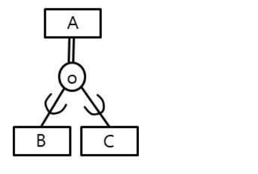
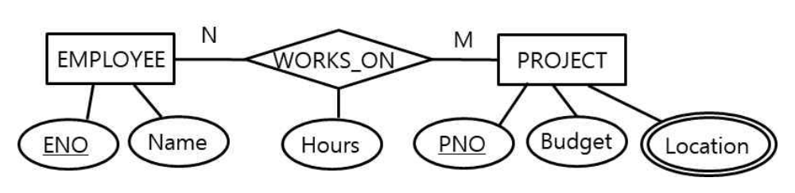
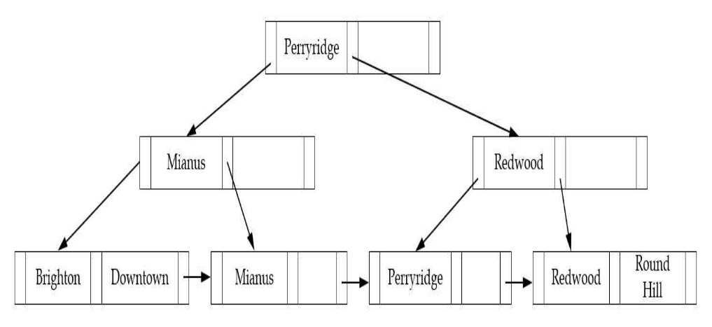

작성 기준: 업로드된 데이터베이스 강의자료(구환회기술사 Chapter1~7, 특강 및 출제 예상) 우선 근거, 외부지식은 보조적으로만 사용(강의자료 미수록 항목은 각 문항에 명시)
정답 출처: 2019년(제20회) 정보시스템 감리사 필기시험 문제 및 답안.pdf (원본 Bold 표시 정답 - 페이지 렌더 이미지 직접 대조 확인)
정답 신뢰도: 매우 높음 (stroke-text 자동추출 25/25 + 보기 영역 렌더 확대 육안 대조 25/25 일치, 계산·SQL·관계대수 문항은 별도 재검산)
★ 이 회차의 특징 — 「2개 선택」 문항 4개: 51·58·61·66번은 문제 지문에 "옳은 것을 모두 고르시오. (2개 선택)" 이 명시된 복수정답 문항이다. 오탈자나 이의제기에 따른 복수정답이 아니라 출제 단계에서 의도된 형식이다.
기준 버전 주의: 본 회차는 2019년 시행분이다. 공공데이터포털(64번), 나이브 베이즈(56번) 등은 이후 제도·기술 변화가 있으므로, 각 문항의 「관련 이론 정리」 말미에 현행(2025년 기준) 보충사항을 병기하였다.
| 번호 | 정답 | 번호 | 정답 | 번호 | 정답 |
|---|---|---|---|---|---|
| 51 | ②③ (2개 선택) | 61 | ①② (2개 선택) | 71 | ① |
| 52 | ② | 62 | ② | 72 | ④ |
| 53 | ③ | 63 | ③ | 73 | ③ |
| 54 | ③ | 64 | ④ | 74 | ② |
| 55 | ① | 65 | ① | 75 | ② |
| 56 | ① | 66 | ②④ (2개 선택) | ||
| 57 | ④ | 67 | ③ | ||
| 58 | ②③ (2개 선택) | 68 | ④ | ||
| 59 | ③ | 69 | ③ | ||
| 60 | ② | 70 | ② |
2019년 제20회 데이터베이스는 「2개 선택」 형식 문항이 4개(51·58·61·66) 나온 유일한 회차다. 지문 끝의 "(2개 선택)" 표기를 놓치면 한 개만 고르고 넘어가 전부 실점하게 되므로, 문제 지문 마지막 줄을 반드시 확인해야 한다.
영역별 배분은 ① SQL·관계대수 6문항(51·57·58·65·68·75), ② 모델링·정규화 4문항(52·61·63·66), ③ 트랜잭션·회복·동시성 5문항(55·62·69·71·74), ④ 저장구조·인덱스 5문항(54·59·67·72·75), ⑤ 데이터 분석·마이닝 3문항(56·70·73), ⑥ 뷰·보안 1문항(53), ⑦ 제도 1문항(64) 이다.
이 회차의 특징 네 가지.
첫째, 저장구조·인덱스 비중이 높다. 고정길이 레코드의 블록 채우기 계산(54), 비트맵 인덱스(59), 해시 충돌 해결(67), B+-트리 판독(72), 복합 인덱스 활용 판정(75) 이 모두 출제되었다. 물리 설계 영역을 소홀히 하면 5문항을 통째로 잃는다.
둘째, 그림 판독 문항이 세 개(61·63·72) 다. EER 세분화 다이어그램(61), ER → 테이블 개수 변환(63), B+-트리 구조(72) 로, 모두 기호의 의미를 알아야 풀린다. 본 해설집에서는 이 세 문항에 원본 이미지 + 서술 전사를 병기했다.
셋째, 회복·동시성 제어의 실무 절차를 묻는다. 다중 단위 로킹 호환성 행렬(71) 과 즉시 갱신 회복의 REDO/UNDO 판정(74) 은 표·로그를 직접 따라가며 추론해야 한다.
넷째, 데이터 마이닝은 시퀀스 패턴(73) 이라는 다소 생소한 주제가 나왔다. 연관규칙의 지지도를 시퀀스(순차) 로 확장한 개념으로, 계산 규칙만 알면 어렵지 않다.
강의자료 커버리지는 정규화·트랜잭션·SQL·인덱스에서 양호하나, 시퀀스 패턴 지지도(73)·나이브 베이즈(56)·비트맵 인덱스(59)·다중 단위 로킹(71)·공공데이터포털(64) 은 업로드된 자료에 직접 수록되어 있지 않아 외부지식으로 보완했다.
| 항목 | 내용 |
|---|---|
| 문서명 | 정보시스템 감리사 데이터베이스 기출문제 해설집 - 2019년 제20회 |
| 대상 문항 | Q51 ~ Q75 (데이터베이스) |
| 원본 출처 | 2019년(제20회) 정보시스템 감리사 필기시험 문제 및 답안.pdf (p.12~16) |
| 정답 확인 방법 | stroke-text(글리프 render mode) 자동추출 + 보기 영역 렌더 확대 육안 대조 (25/25 일치) |
| 특이 문항 | 「2개 선택」 4문항 — 51(②③) · 58(②③) · 61(①②) · 66(②④). 전항정답·이의제기 복수정답은 없음 |
| 그림 포함 문항 | 61번 EER 세분화 다이어그램 · 63번 ER 다이어그램 · 72번 B+-트리 — 이미지 + 서술 전사 병기 |
| 표·SQL 제시 문항 | 51·57·58·59·60·68·71·73·74·75번 — 이미지 대신 마크다운 표/코드블록으로 전사 |
| 근거 강의자료 | 구환회기술사 Chapter1(개요)·Chapter2(트랜잭션)·Chapter3(모델링)·Chapter4(SQL)·Chapter5(유형)·Chapter6(분석)·Chapter7(빅데이터), 데이터베이스 특강 및 출제 예상 |
| 강의자료 미수록(외부지식 보완) 항목 | 시퀀스 패턴 지지도(73), 나이브 베이즈(56), 비트맵 인덱스(59), 다중 단위 로킹 호환성(71), 공공데이터포털(64), 해시 충돌 해결 기법(67) |
| 기준 버전 | 2019년 출제 당시 기준 + 현행(2025년) 보충사항 병기 |
다음은 두 릴레이션 R(A, B, C) 과 S(C, D) 를 SQL로 정의한 것이다. 두 테이블에 대한 데이터 조작 연산과 관련된 설명 중 옳은 것을 모두 고르시오. (2개 선택)
CREATE TABLE R
(A INT NOT NULL, B CHAR(5), C INT, PRIMARY KEY(A),
FOREIGN KEY(C) REFERENCES S(C)
ON DELETE SET NULL
ON UPDATE CASCADE);
CREATE TABLE S
(C INT NOT NULL, D CHAR(5), PRIMARY KEY(C));
① 테이블 R의 투플은 테이블 S의 상태와 무관하게 삽입이 가능하다.
② 테이블 S의 투플은 테이블 R의 상태와 무관하게 삽입이 가능하다.
③ 테이블 S의 C의 값이 갱신되면 테이블 R의 C의 값도 파급해서 갱신된다.
④ 테이블 S의 투플이 삭제되면 이 투플을 참조하는 R의 투플도 파급해서 삭제된다.
정답 : ②번, ③번 (2개 선택)
정답 신뢰도 : 매우 높음 (원본 Bold 확인 · 문제 지문에 "2개 선택" 명시)
| 항목 | 내용 |
|---|---|
| 연도 | 2019년 (제20회) |
| 과목 | 데이터베이스 |
| 문항번호 | 51번 |
| 난이도 | 중 |
| 출제주제 | 참조 무결성 제약과 연쇄 동작(ON DELETE SET NULL / ON UPDATE CASCADE) |
참조 무결성·참조 액션은 거의 매 회차 출제되는 최빈 주제다. 형태는 ① DDL → 동작 판정(본 문항), ② 삭제·갱신 시나리오 결과 예측, ③ 액션 종류 정의 매칭, ④ E-R 참여 제약 → FK NULL 허용 판정이다. 부모/자식 방향과 액션 4종의 차이만 확실하면 대응된다.
| 연도 | 문항번호 | 핵심개념 |
|---|---|---|
| 2019 | 60 | 널 허용 속성 판정 |
| 2019 | 65 | 참조 무결성 관계대수 표현 |
| 2020 | 55 | ON DELETE CASCADE 위치 |
FOREIGN KEY를 가진 쪽이 자식 — 부모는 넣기 자유, 자식은 넣기 제약
CASCADE = 함께 삭제 / SET NULL = 행 유지·값만 NULL / RESTRICT = 삭제 거부
ON UPDATE CASCADE = 부모 키 갱신 시 자식 FK도 자동 갱신
본 문항: ② 부모(S) 삽입 자유 · ③ UPDATE CASCADE → ②③ (2개 선택)
관계 구조 파악
S (부모, referenced) R (자식, referencing)
┌──────────────┐ ┌────────────────────┐
│ C (PK, NOT NULL)│ ◄────────── │ C (FK) │
│ D │ │ A (PK, NOT NULL) │
└──────────────┘ │ B │
└────────────────────┘
ON DELETE SET NULL ← S의 행 삭제 시 R.C를 NULL로
ON UPDATE CASCADE ← S의 C 갱신 시 R.C도 같이 갱신
| 역할 | 테이블 | 근거 |
|---|---|---|
| 부모(참조 대상) | S | REFERENCES S(C) |
| 자식(참조 주체) | R | FOREIGN KEY(C) 보유 |
① 테이블 R의 투플은 S의 상태와 무관하게 삽입 가능 — 거짓
R.C는 S(C)를 참조하는 외래키다. 따라서 R에 삽입하려면
| R.C 값 | 판정 |
|---|---|
| S에 존재하는 값 | 삽입 가능 |
| S에 없는 값 | 삽입 거부(참조 무결성 위반) |
| NULL | 삽입 가능(R.C에 NOT NULL 제약 없음) |
S의 상태(어떤 C값이 있는가)에 따라 삽입 가능 여부가 달라진다. → 거짓.
R.C는
C INT로만 선언되어 NOT NULL이 아니므로 NULL 삽입은 가능하다. 그러나 "무관하게"라고 하려면 모든 값이 자유로워야 하는데, 실제 값을 넣으려면 S에 그 값이 있어야 한다.
② 테이블 S의 투플은 R의 상태와 무관하게 삽입 가능 — 참 ✔
S는 부모 테이블이다. 부모 테이블에 새 행을 넣는 것은 자식 테이블에 아무런 제약을 받지 않는다.
| 검사 항목 | 대상 |
|---|---|
| S.C의 PK 제약(중복·NULL 금지) | S 자기 자신만 |
| R의 내용 | 검사 대상 아님 |
참조 무결성은 "자식 → 부모" 방향으로만 검사되므로, 부모 삽입은 자유롭다. → 참 ✔
③ S의 C 값이 갱신되면 R의 C도 파급 갱신 — 참 ✔
ON UPDATE CASCADE 가 명시되어 있다.
[갱신 전] [S.C를 10 → 20 으로 갱신]
S: C=10, D='aaa' → S: C=20, D='aaa'
R: A=1, B='x', C=10 → R: A=1, B='x', C=20 ← 자동 파급
부모 키가 바뀌면 이를 참조하던 자식의 외래키 값도 함께 바뀐다. → 참 ✔
④ S의 투플 삭제 시 R의 투플도 파급 삭제 — 거짓
ON DELETE **SET NULL** 이다. CASCADE가 아니다.
[삭제 전] [S의 C=10 행 삭제]
S: C=10, D='aaa' → S: (삭제됨)
R: A=1, B='x', C=10 → R: A=1, B='x', C=NULL ← 행은 남고 값만 NULL
| 옵션 | 부모 행 삭제 시 자식 |
|---|---|
| SET NULL(본 문제) | 자식 행은 유지, FK만 NULL |
| CASCADE | 자식 행도 삭제 |
R의 투플은 삭제되지 않고 남는다. → 거짓.
최종 판정표
| 보기 | 내용 | 근거 | 판정 |
|---|---|---|---|
| ① | R 삽입이 S와 무관 | FK 참조 검사 필요 | ✗ |
| ② | S 삽입이 R과 무관 | 부모 삽입은 자유 | ○ ✔ |
| ③ | S.C 갱신 → R.C 파급 | ON UPDATE CASCADE | ○ ✔ |
| ④ | S 삭제 → R 행 삭제 | SET NULL이지 CASCADE 아님 | ✗ |
→ 정답 ②, ③
참조 무결성(referential integrity)의 정의
자식 릴레이션의 외래키 값은 부모 릴레이션의 기본키 값 중 하나이거나 NULL이어야 한다.
$$\pi_{FK}(\text{자식}) - \{\text{NULL}\} \subseteq \pi_{PK}(\text{부모})$$
참조 무결성 검사 시점
| 연산 | 대상 | 검사 여부 |
|---|---|---|
| 부모 INSERT | S | 검사 없음 |
| 자식 INSERT | R | 검사 O (부모에 존재? ) |
| 부모 UPDATE(키) | S | 검사 O → 참조 액션 발동 |
| 부모 DELETE | S | 검사 O → 참조 액션 발동 |
| 자식 UPDATE(FK) | R | 검사 O |
| 자식 DELETE | R | 검사 없음 |
핵심 기억법: "부모는 넣기 자유·빼기 제약 / 자식은 넣기 제약·빼기 자유"
참조 액션(referential action) 5종 — SQL 표준
| 액션 | 부모 DELETE 시 | 부모 UPDATE 시 |
|---|---|---|
| NO ACTION(기본) | 거부(제약 검사를 문장 끝에) | 거부 |
| RESTRICT | 즉시 거부(지연 불가) | 즉시 거부 |
| CASCADE | 자식 행 삭제 | 자식 FK 갱신 |
| SET NULL | 자식 FK를 NULL | 자식 FK를 NULL |
| SET DEFAULT | 자식 FK를 기본값 | 자식 FK를 기본값 |
NO ACTION vs RESTRICT: 둘 다 거부하지만, NO ACTION은 문장 종료 시점(또는 지연 제약이면 커밋 시점) 에 검사하고 RESTRICT는 즉시 검사한다. 지연 제약(
DEFERRABLE)을 쓸 경우 이 차이가 드러난다.
본 문제 DDL의 완전한 동작표
| 연산 | 결과 |
|---|---|
INSERT INTO S VALUES(30,'ccc') |
성공(부모 삽입 자유) |
INSERT INTO R VALUES(1,'x',30) |
성공(S에 30 존재) |
INSERT INTO R VALUES(2,'y',99) |
실패(S에 99 없음) |
INSERT INTO R VALUES(3,'z',NULL) |
성공(FK에 NULL 허용) |
UPDATE S SET C=40 WHERE C=30 |
성공 + R.C도 40으로 변경 |
DELETE FROM S WHERE C=40 |
성공 + R.C가 NULL로 변경 |
DELETE FROM R WHERE A=1 |
성공(자식 삭제는 자유) |
SET NULL 사용 시 필수 조건
| 조건 | 이유 |
|---|---|
| 자식 FK 컬럼이 NULL 허용 | NOT NULL이면 NULL을 넣을 수 없음 |
| FK가 자식의 PK 일부가 아닐 것 | PK는 NOT NULL이므로 불가 |
약한 개체(weak entity) 의 식별 관계에서는 FK가 PK의 일부이므로 SET NULL을 쓸 수 없고, 보통 CASCADE를 쓴다.
참조 액션 선택 가이드
| 업무 성격 | 권장 액션 |
|---|---|
| 이력·회계 데이터 | NO ACTION / RESTRICT(삭제 자체를 막음) |
| 부모-자식이 생명주기 공유(주문-주문상세) | CASCADE |
| 선택적 참조(사원-부서, 미배정 허용) | SET NULL |
| 기본 분류가 있는 경우 | SET DEFAULT |
CASCADE 남용 주의: 다단계 CASCADE가 걸린 스키마에서 최상위 부모 한 행을 지우면 수십만 건이 연쇄 삭제될 수 있다. 실무에서는 논리 삭제(삭제 플래그) 를 병행하는 경우가 많다.
강의자료 근거: Chapter3(모델링)의 무결성 제약, Chapter4(SQL)의 DDL·제약조건에 수록되어 있다.
참조 액션 설계는 데이터 정합성 감리의 필수 점검 항목이다.
| 점검 항목 | 결함 예시 |
|---|---|
| FK 미선언 | 애플리케이션에만 의존 → 고아 레코드 발생 |
| CASCADE 남용 | 부모 1건 삭제로 대량 연쇄 삭제 |
| SET NULL + NOT NULL 충돌 | 삭제 시 런타임 오류 |
| 참조 액션 미문서화 | 운영자가 삭제 결과를 예측 못함 |
| 순환 참조 | 초기 적재 불가 |
감리에서는 ① 모든 관계에 FK 제약이 물리적으로 선언되었는가, ② 참조 액션이 업무 요건과 일치하며 설계서에 명시되었는가, ③ CASCADE 경로가 몇 단계까지 이어지는지 검토했는가, ④ 대량 삭제 시나리오가 테스트되었는가를 점검한다.
흔한 결함 1: 성능을 이유로 FK를 물리적으로 선언하지 않고 애플리케이션에서만 검증하다가, 배치·수작업 DML로 인해 부모 없는 자식 행(고아) 이 누적되는 사례다.
흔한 결함 2: 부서 삭제에 ON DELETE CASCADE 를 걸어 두어, 조직 개편 시 부서 삭제 한 번으로 소속 사원 데이터 전체가 소실된 사례다. 인사 데이터처럼 이력 보존이 필요한 영역에는 RESTRICT가 안전하다.
참조 무결성 문항은 "누가 부모인가" 를 먼저 확정한다.
판정 순서
FOREIGN KEY ... REFERENCES X → X가 부모, 선언한 쪽이 자식참조 액션 암기표
| 키워드 | 부모 삭제 시 자식 |
|---|---|
| CASCADE | 함께 삭제 |
| SET NULL | 행 유지, 값만 NULL |
| SET DEFAULT | 행 유지, 값은 기본값 |
| NO ACTION / RESTRICT | 삭제 자체를 거부 |
★ 「2개 선택」 문항 대응
감점 포인트: SET NULL을 CASCADE로 오독하는 것. DDL을 한 글자씩 확인해야 한다.
방향을 거꾸로 이해한 것이다. 자식(R)의 삽입이야말로 부모(S)의 상태에 종속된다. "무관하다"는 서술은 ②(부모 S)에만 해당한다.
①과 ②는 정확히 대칭 형태로 출제되었다. 어느 쪽이 자식인지만 알면 즉시 갈린다.
FOREIGN KEY를 가진 쪽이 자식이다.
SET NULL 을 CASCADE 로 착각하게 만드는 보기다. DDL에 ON DELETE SET NULL 이라고 적혀 있으므로 삭제가 파급되지 않는다.
주의: 만약 R.C가 NOT NULL 이었다면
SET NULL자체를 선언할 수 없다(또는 실행 시 오류). 본 문제에서C INT(NULL 허용)로 선언한 것은 의도적 설계다.소거 요령: DDL 두 줄만 보면 된다.
-ON DELETE SET NULL→ ④의 "파급 삭제"는 즉시 거짓
-ON UPDATE CASCADE→ ③은 즉시 참
- 나머지 ①·② 중 부모 쪽이 자유이므로 ②가 참2개를 고르는 문제이므로 ③(확실한 참) + ②(부모 삽입 자유) 로 확정된다.
릴레이션을 정규화(normalization) 하는 목적에 관한 설명 중 가장 거리가 먼 것은?
① 정보의 갱신 이상이 생기지 않도록 한다.
② 정보의 보안을 목적으로 한다.
③ 정보의 손실을 막는다.
④ 정보의 중복을 막는다.
정답 : ②번
정답 신뢰도 : 매우 높음 (원본 Bold 확인)
| 항목 | 내용 |
|---|---|
| 연도 | 2019년 (제20회) |
| 과목 | 데이터베이스 |
| 문항번호 | 52번 |
| 난이도 | 하 |
| 출제주제 | 정규화(normalization)의 목적 |
정규화 목적은 난이도 하위의 서비스 문항으로 배치된다. 다만 정규형 판정(BCNF·3NF) 이나 분해 결과 검증으로 확장되면 난이도가 급상승한다. 형태는 ① 목적 정오(본 문항), ② 이상 현상 사례 → 원인 정규형, ③ FD → 정규형 판정, ④ 무손실·종속성 보존 판정이다.
| 연도 | 문항번호 | 핵심개념 |
|---|---|---|
| 2019 | 66 | BCNF 분해·외래키 |
| 2020 | 65 | BCNF 판정 |
| 2020 | 58 | 후보키 폐포 계산 |
정규화 목적 = 이상 현상 제거 · 중복 최소화 · 무손실(정보 손실 방지) · 무결성
보안은 정규화의 목적이 아니다 — 보안은 권한(GRANT/REVOKE)·뷰·암호화의 영역
"성능 향상"도 오답 — 정규화는 조인을 늘려 조회 성능을 떨어뜨릴 수 있다
분해는 반드시 무손실이어야 한다: 공통 속성이 어느 한쪽의 슈퍼키
정규화의 정의와 목적
정규화란 함수 종속성을 이용해 릴레이션을 이상 현상이 발생하지 않는 형태로 분해하는 과정이다.
| 목적 | 설명 | 보기 |
|---|---|---|
| 이상 현상 제거 | 삽입·갱신·삭제 이상 방지 | ① |
| 정보 손실 방지 | 무손실 분해로 원본 복원 가능 | ③ |
| 중복 최소화 | 같은 데이터의 반복 저장 제거 | ④ |
| 무결성 유지 | 한 곳만 고치면 됨 | (①과 연결) |
| 구조 명확화 | 개체·관계가 뚜렷해짐 |
보기 ②의 "정보의 보안" 은 위 어디에도 해당하지 않는다. → 정답 ②
보안은 다른 기법의 영역이다
| 보안 요구 | 해당 기법 |
|---|---|
| 특정 사용자만 조회 | GRANT / REVOKE(DCL) |
| 일부 열만 노출 | 뷰(view), 열 마스킹 |
| 일부 행만 노출 | 행 수준 보안(RLS) |
| 저장 데이터 보호 | 암호화(TDE) |
| 접근 기록 | 감사 로그(audit) |
혼동의 원인: 수직 분할로 민감 컬럼을 별도 테이블에 두면 부수적으로 보안 효과가 생긴다. 그러나 이는 분산 DB의 단편화(fragmentation) 나 의도적 물리 설계이지 정규화가 아니다. 정규화는 함수 종속성을 기준으로 분해하는 것이며, 민감도를 기준으로 나누지 않는다.
이상 현상(anomaly) 3종
| 이상 | 정의 | 예 |
|---|---|---|
| 삽입 이상(insertion) | 불필요한 데이터 없이는 삽입 불가 | 수강생 없는 과목을 등록할 수 없음 |
| 갱신 이상(update) | 중복 데이터 중 일부만 수정 → 불일치 | 고객 주소가 행마다 다름 |
| 삭제 이상(deletion) | 한 정보를 지우면 다른 정보도 손실 | 마지막 수강생 삭제 시 과목 정보 소멸 |
정규형 계층과 제거 대상
| 정규형 | 조건 | 제거 대상 |
|---|---|---|
| 1NF | 모든 속성이 원자값 | 반복 그룹 |
| 2NF | 1NF + 부분 함수 종속 제거 | 복합키 일부에 대한 종속 |
| 3NF | 2NF + 이행적 종속 제거 | 비키 → 비키 종속 |
| BCNF | 모든 결정자가 슈퍼키 | 비키 결정자 |
| 4NF | BCNF + 다치 종속(MVD) 제거 | 독립 다중값 |
| 5NF | 4NF + 조인 종속 제거 | 3분해로만 복원되는 구조 |
분해의 두 가지 성질
| 성질 | 의미 | 보장 여부 |
|---|---|---|
| 무손실 조인(lossless join) | 조인으로 원본 복원 가능 | 3NF·BCNF 모두 항상 보장 |
| 종속성 보존(dependency preservation) | 모든 FD를 개별 릴레이션에서 검증 가능 | 3NF는 보장 / BCNF는 미보장 |
BCNF의 한계: 종속성 보존이 깨질 수 있어, 실무에서는 3NF에서 멈추는 경우가 많다. 예:
{학생,과목 → 교수}, {교수 → 과목}은 BCNF 분해 시 첫 FD를 한 릴레이션에서 검증할 수 없다.
정규화의 트레이드오프
| 장점 | 단점 |
|---|---|
| 이상 현상 제거 | 테이블 수 증가 → 조인 증가 |
| 중복 최소화·공간 절약 | 조회 성능 저하 가능 |
| 무결성 유지 용이 | 설계·이해 복잡도 상승 |
역정규화(denormalization)
| 기법 | 예 |
|---|---|
| 컬럼 중복 | 주문에 고객명 함께 저장 |
| 파생 컬럼 | 합계·건수 미리 계산 |
| 테이블 병합 | 1:1 관계 테이블 합치기 |
| 요약 테이블 | 일별 집계 테이블 |
적용 원칙: 반드시 정규화를 완료한 뒤, 성능 측정 결과에 근거해 적용하고, 중복 데이터의 동기화 방안(트리거·배치·MV)을 함께 설계해야 한다. "처음부터 성능을 위해 정규화하지 않는 것"은 정당화되지 않는다.
현행(2025년) 보충: NoSQL·문서형 DB에서는 "함께 읽는 것은 함께 저장" 원칙에 따라 의도적 비정규화(임베딩) 가 기본이다. 다만 이는 조인이 없는 저장소의 특성 때문이며, 정규화 이론 자체가 부정되는 것은 아니다. 관계형 DB 감리에서는 여전히 3NF 이상이 기준이다.
강의자료 근거: Chapter3(모델링)에 정규화 목적·이상 현상·정규형이 상세히 수록되어 있다.
정규화 수준 판정은 논리 데이터 모델 감리의 1순위 항목이다.
| 점검 항목 | 확인 방법 |
|---|---|
| 1NF 위반 | 한 컬럼에 콤마 구분 다중값 저장 여부 |
| 2NF 위반 | 복합키 테이블에서 키 일부만으로 결정되는 컬럼 |
| 3NF 위반 | 코드값 + 코드명이 함께 저장된 컬럼 쌍 |
| 역정규화 근거 | 성능 테스트 결과·동기화 설계 존재 여부 |
감리에서는 ① 3NF 이상 정규화 여부, ② 역정규화가 근거 있게 적용되었는가, ③ 중복 컬럼의 정합성 유지 방안이 있는가, ④ 이력성 중복과 결함성 중복을 구분했는가를 점검한다.
흔한 결함: 한 컬럼에 "Java,Python,SQL" 처럼 콤마로 구분된 다중값을 저장하는 사례다. 1NF조차 위반이며, 검색·집계·인덱스 모두 불가능해진다. 별도 테이블(사원기술) 로 분리해야 한다.
주의 — 정상적인 중복: 주문 시점의 배송지 주소·상품 가격은 의도적으로 중복 저장하는 것이 맞다. "현재 값 참조"가 아니라 "시점 스냅숏" 이기 때문이다. 이를 3NF 위반으로 오판하면 안 된다.
정규화 목적 문항은 "결이 다른 하나" 를 고르면 된다.
정규화의 목적 (○)
| 항목 |
|---|
| 이상 현상(삽입·갱신·삭제) 제거 |
| 데이터 중복 최소화 |
| 무손실 분해(정보 손실 방지) |
| 데이터 무결성·일관성 확보 |
| 구조의 명확화 |
정규화의 목적이 아닌 것 (✗) — 출제 단골
| 항목 | 실제 담당 기법 |
|---|---|
| 보안 | GRANT/REVOKE, 뷰, 암호화 |
| 조회 성능 향상 | 역정규화, 인덱스(정규화는 오히려 저하) |
| 저장 공간 확대 | 반대 |
| 동시성 향상 | 트랜잭션·로킹 |
| 백업·복구 | 회복 기법 |
특히 "성능 향상"은 자주 나오는 오답이다. 정규화는 조인을 늘려 조회 성능을 떨어뜨리는 경우가 많다. 정규화가 개선하는 것은 성능이 아니라 정확성이다.
갱신 이상(update anomaly) 은 중복 저장된 데이터 중 일부만 수정되어 불일치가 생기는 현상이다.
[비정규화] 주문(주문번호, 고객번호, 고객명, 고객주소, 상품, 수량)
→ 고객명이 여러 행에 중복 → 개명 시 일부만 수정되면 불일치
[정규화] 주문(주문번호, 고객번호, 상품, 수량)
고객(고객번호, 고객명, 고객주소)
→ 고객명은 한 곳에만 존재 → 한 번만 수정
정규화는 반드시 무손실 분해여야 한다. 분해한 릴레이션들을 다시 조인했을 때 원본과 정확히 같아야 한다.
무손실 분해 조건: R을 R₁, R₂로 분해할 때
$$(R_1 \cap R_2) \to R_1 \quad \text{또는} \quad (R_1 \cap R_2) \to R_2$$
즉 공통 속성이 어느 한쪽의 슈퍼키여야 한다.
손실 분해의 예
원본 R(사원, 부서, 프로젝트)
홍길동 / 영업 / P1
홍길동 / 영업 / P2
잘못된 분해: R1(사원,부서), R2(부서,프로젝트)
→ 다시 조인하면 없던 조합이 생기거나 정보가 뒤섞임 (부서가 슈퍼키가 아님)
중복 제거는 저장 공간 절약뿐 아니라 ①의 갱신 이상 방지의 근본 원인을 제거한다.
소거 요령: ①·③·④는 모두 "데이터의 정확성·일관성" 에 관한 것이다. ②만 "접근 권한" 이라는 완전히 다른 축의 개념이다. 하나만 결이 다른 것을 고르면 된다.
뷰(view) 가 어떻게 데이터베이스 보안에 사용될 수 있는지에 대한 다음 설명 중 옳지 않은 것은?
① 기본 릴레이션에 직접 접근할 수 있는 권한을 부여하지 않고 뷰를 통해 접근하도록 한다.
② 자세한 정보를 제공하는 대신 집단함수의 결과만 제공할 수 있다.
③ 하나의 릴레이션으로 보이는 것을 막기 위해 여러 릴레이션의 열(column)을 조인하는 것이 금지된다.
④ 기본 릴레이션의 일부 속성들에 대해 추가적으로 정의될 수 있으므로 이를 이용해서 기본 릴레이션의 일부분만 검색가능하다.
정답 : ③번
정답 신뢰도 : 매우 높음 (원본 Bold 확인)
| 항목 | 내용 |
|---|---|
| 연도 | 2019년 (제20회) |
| 과목 | 데이터베이스 |
| 문항번호 | 53번 |
| 난이도 | 하 |
| 출제주제 | 뷰(view)를 이용한 데이터베이스 보안 |
뷰는 2~3년 주기로 출제되는 주제다. 형태는 ① 보안 활용 정오(본 문항), ② 갱신 가능 뷰 조건, ③ WITH CHECK OPTION 동작, ④ 뷰 vs 구체화 뷰 비교다. 특히 갱신 가능 조건이 가장 자주 나오므로 반드시 정리해 둘 것.
| 연도 | 문항번호 | 핵심개념 |
|---|---|---|
| 2019 | 51 | 참조 무결성 제약 |
| 2021 | 62 | 뷰·갱신 가능 조건 |
| 2023 | 63 | 뷰·구체화 뷰 |
뷰 = 저장되지 않는 가상 릴레이션(정의만 저장)
조인·집계 뷰의 "정의·조회"는 자유 / 제약은 "갱신"에만 있다
뷰 보안 3형태: 열 제한(수직) · 행 제한(수평) · 집계값만 노출
뷰를 만들었으면 기본 테이블 권한을 반드시 회수해야 효과가 있다
WITH CHECK OPTION = 뷰 조건을 위반하는 삽입·갱신 차단
뷰의 정의
뷰(view) 는 하나 이상의 기본 릴레이션(base relation)으로부터 유도된 가상 릴레이션(virtual relation) 이다. 실제 데이터를 저장하지 않고 정의(질의문)만 저장한다.
CREATE VIEW 사원공개정보 AS
SELECT E.사번, E.이름, D.부서명 -- ★ 두 릴레이션을 조인
FROM 사원 E JOIN 부서 D ON E.부서번호 = D.부서번호
WHERE E.재직여부 = 'Y';
보기 ③의 서술 — "여러 릴레이션의 열을 조인하는 것이 금지된다"
이는 명백히 틀렸다.
| 사실 | 근거 |
|---|---|
| 조인 뷰는 표준 기능 | SQL 표준이 허용, 모든 DBMS 지원 |
| 조인 뷰가 보안에 유리 | 여러 테이블의 필요한 열만 모아 노출 |
| 제약이 있는 것은 갱신 가능성 | 조회는 아무 제한 없음 |
조인 뷰에 제약이 있다면 그것은 "갱신"이지 "정의"가 아니다.
| 구분 | 조인 뷰 |
|---|---|
| 정의(CREATE) | 자유 |
| 조회(SELECT) | 자유 |
| 갱신(INSERT/UPDATE/DELETE) | 제한적(키 보존 테이블에만 가능) |
→ ③이 옳지 않은 설명. 정답 ③
뷰의 장점 4가지
| 장점 | 설명 |
|---|---|
| 보안(security) | 필요한 행·열만 노출 |
| 논리적 데이터 독립성 | 기본 테이블 구조가 바뀌어도 뷰 정의만 수정 |
| 질의 단순화 | 복잡한 조인·집계를 하나의 이름으로 |
| 동일 데이터의 다양한 관점 | 부서별·직급별 등 맞춤 뷰 제공 |
뷰의 단점·제약
| 제약 | 내용 |
|---|---|
| 갱신 제한 | 조인·집계·DISTINCT 뷰는 갱신 불가 |
| 인덱스 불가 | 일반 뷰에는 인덱스를 만들 수 없음 |
| 성능 | 매번 기본 질의를 재실행(머지 또는 물질화) |
| 정의 변경 불가 | ALTER VIEW 미지원 DBMS는 DROP 후 재생성 |
갱신 가능 뷰(updatable view)의 조건
| 조건 | 내용 |
|---|---|
| 단일 테이블 기반 | 조인 뷰는 원칙적으로 제한 |
| 집계함수 없음 | SUM·AVG·COUNT 사용 시 불가 |
| GROUP BY / HAVING 없음 | |
| DISTINCT 없음 | |
| 기본키 포함 | 어느 행인지 특정 가능해야 함 |
| 계산식 열에 값 대입 불가 |
키 보존 테이블(key-preserved table): 조인 뷰라도 한쪽 테이블의 키가 뷰에서도 유일성을 유지하면, 그 테이블에 대해서는 갱신이 가능하다(Oracle). 즉 "조인 뷰는 무조건 갱신 불가"는 부정확하다.
WITH CHECK OPTION
CREATE VIEW 영업부사원 AS
SELECT * FROM 사원 WHERE 부서번호 = 4
WITH CHECK OPTION;
| 옵션 | 효과 |
|---|---|
| 미지정 | 뷰 조건을 벗어나는 행도 삽입 가능(삽입 후 뷰에서 사라짐) |
| WITH CHECK OPTION | 뷰 조건을 위반하는 갱신·삽입 거부 |
위 예에서 CHECK OPTION이 없으면
INSERT INTO 영업부사원 VALUES(..., 5)로 부서 5인 행을 넣을 수 있고, 넣자마자 뷰에서 안 보이게 된다. 이는 보안 우회 경로가 될 수 있다.
뷰 vs 구체화 뷰(materialized view)
| 구분 | 뷰 | 구체화 뷰 |
|---|---|---|
| 데이터 저장 | 없음(정의만) | 실제 저장 |
| 최신성 | 항상 최신 | 갱신 주기에 의존 |
| 조회 성능 | 매번 재실행 | 빠름 |
| 인덱스 | 불가 | 가능 |
| 용도 | 보안·단순화 | 집계·리포트 성능 |
뷰 외의 DB 보안 기법
| 기법 | 내용 |
|---|---|
| DCL(GRANT/REVOKE) | 객체 단위 권한 |
| 역할(ROLE) | 권한 묶음, RBAC |
| 뷰 | 행·열 단위 노출 제어 |
| 행 수준 보안(RLS) | 정책 기반 행 필터 |
| 동적 데이터 마스킹 | 조회 시점 값 가림 |
| 암호화(TDE·컬럼 암호화) | 저장 데이터 보호 |
| 감사(audit) | 접근 이력 기록 |
현행(2025년) 보충: 뷰 기반 보안은 관리 부담이 크다(사용자·부서마다 뷰를 만들어야 함). 최신 DBMS는 행 수준 보안(RLS) 과 동적 마스킹을 제공해 하나의 테이블에 정책만 붙이는 방식으로 대체한다.
DBMS 기능 PostgreSQL CREATE POLICY(RLS)Oracle VPD(Virtual Private Database), Data Redaction SQL Server Row-Level Security, Dynamic Data Masking 다만 시험은 전통적 뷰 기반 보안을 기준으로 출제된다.
강의자료 근거: Chapter4(SQL)에 뷰의 정의·갱신 제약·보안 활용이 수록되어 있다.
뷰 기반 접근 통제는 개인정보 보호 감리의 단골 항목이다.
| 요구 | 뷰 설계 |
|---|---|
| 인사 담당자만 급여 조회 | 급여 제외 뷰를 일반에 제공 |
| 지점장은 자기 지점만 | WHERE 지점코드 = USER 지점 |
| 통계 분석가는 집계만 | GROUP BY 뷰 + 최소 그룹 크기 제한 |
| 주민번호 뒷자리 가림 | SUBSTR + 마스킹 뷰 |
감리에서는 ① 기본 테이블에 대한 직접 권한이 회수되었는가(뷰만 만들고 원본 권한이 남아 있으면 무의미), ② 뷰에 WITH CHECK OPTION이 필요한 곳에 적용되었는가, ③ 집계 뷰에서 소수 그룹 추론이 가능하지 않은가, ④ 뷰 정의 변경 이력이 관리되는가를 점검한다.
흔한 결함 1: 마스킹 뷰를 만들었지만 기본 테이블에 대한 SELECT 권한을 회수하지 않아, 사용자가 원본 테이블을 직접 조회할 수 있는 사례다. 뷰는 원본 권한 회수와 세트여야 한다.
흔한 결함 2: 부서별 평균 급여 뷰에서 1~2명 부서의 평균이 곧 개인 급여가 되는 추론 노출 사례다. HAVING COUNT(*) >= 5 등의 임계값이 필요하다.
뷰 문항은 "할 수 있다 / 할 수 없다" 를 정확히 구분한다.
뷰로 할 수 있는 것 (○)
| 항목 |
|---|
| 여러 릴레이션 조인해서 정의 |
| 집계함수·GROUP BY 사용 |
| 일부 열만(수직) / 일부 행만(수평) 노출 |
| 뷰 위에 또 다른 뷰 정의 |
| 계산식·함수 결과를 열로 |
뷰로 할 수 없는(제한되는) 것 (✗)
| 항목 |
|---|
| 집계·조인·DISTINCT 뷰의 갱신 |
| 일반 뷰에 인덱스 생성 |
(일부 DBMS) ALTER VIEW |
| ORDER BY 포함(표준상 제약, DBMS별 상이) |
핵심 구분
정의·조회에는 제약이 거의 없고, 제약은 "갱신"에 집중된다.
보기가 "정의할 수 없다 / 조인이 금지된다" 라고 하면 대부분 오답이다.
뷰를 이용한 접근 통제의 표준 패턴이다.
-- 기본 테이블 권한은 주지 않음
-- GRANT SELECT ON 사원 TO 일반사용자; ← 하지 않음
-- 뷰에만 권한 부여
GRANT SELECT ON 사원공개정보 TO 일반사용자;
| 효과 | 내용 |
|---|---|
| 사용자는 뷰를 통해서만 데이터 접근 | 기본 테이블은 보이지 않음 |
| 뷰 정의를 바꾸면 노출 범위를 중앙에서 통제 | 애플리케이션 수정 불필요 |
개별 값을 숨기고 집계값만 노출하는 것은 통계적 보안(statistical security) 의 기본 기법이다.
CREATE VIEW 부서별급여통계 AS
SELECT 부서번호, COUNT(*) AS 인원, AVG(급여) AS 평균급여
FROM 사원
GROUP BY 부서번호;
개인의 급여는 볼 수 없지만 부서 평균은 볼 수 있다.
주의 — 추론 공격(inference attack): 부서 인원이 1명이면 평균 = 그 사람의 급여가 되어 개인 정보가 노출된다. 실무에서는
HAVING COUNT(*) >= 5같은 최소 그룹 크기 제한을 함께 건다.
수직적 접근 통제(열 제한)다.
CREATE VIEW 사원기본 AS
SELECT 사번, 이름, 부서번호 -- 급여·주민번호는 제외
FROM 사원;
수평적 접근 통제(행 제한)도 가능하다.
CREATE VIEW 내부서사원 AS
SELECT * FROM 사원
WHERE 부서번호 = (SELECT 부서번호 FROM 사원 WHERE 사번 = USER);
소거 요령: ①·②·④는 모두 "뷰로 무언가를 할 수 있다" 는 긍정형 서술이다. ③만 "금지된다" 는 부정형·제한형 서술이다. 뷰는 제약이 적은 기능이므로, "~할 수 없다/금지된다" 는 서술이 나오면 우선 의심한다.
고정 길이 레코드 방식을 사용할 때, 레코드의 길이가 230 byte이고, 블록의 크기가 4,096 byte, 블록 헤더의 길이가 24 byte 라고 가정하자. 하나의 블록에 가능한 많은 수의 레코드를 채우는 방식으로 35개의 레코드를 저장할 때, 다음 중 가장 적절한 것은?
① 첫 번째 블록에는 188 byte가 남는다.
② 두 번째 블록에는 3,934 byte가 남는다.
③ 세 번째 블록에는 3,842 byte가 남는다.
④ 네 번째 블록에는 3,910 byte가 남는다.
정답 : ③번
정답 신뢰도 : 매우 높음 (원본 Bold 확인)
| 항목 | 내용 |
|---|---|
| 연도 | 2019년 (제20회) |
| 과목 | 데이터베이스 |
| 문항번호 | 54번 |
| 난이도 | 중 |
| 출제주제 | 고정 길이 레코드의 블록 적재(blocking factor) 계산 |
블록·레코드 계산은 저장구조 영역의 정형 계산 문항이다. 형태는 ① 블록별 잔여 공간(본 문항), ② 필요 블록 수 산출, ③ 순차·인덱스 접근 시 I/O 횟수 비교다. 헤더 차감과 내림·올림만 정확하면 확실히 득점한다.
| 연도 | 문항번호 | 핵심개념 |
|---|---|---|
| 2019 | 59 | 비트맵 인덱스 |
| 2019 | 72 | B+-트리 구조 |
| 2022 | 71 | 저장 구조·블록 계산 |
bfr = ⌊(블록크기 − 헤더) ÷ 레코드크기⌋ — 헤더 차감 잊지 말 것
블록 수 = ⌈총 레코드 수 ÷ bfr⌉ — bfr은 내림, 블록 수는 올림
비신장(unspanned) = 레코드가 블록 경계를 넘지 않음 → 잔여 공간 낭비
본 문항: 가용 4,072 · bfr 17 · 블록 3개 · 잔여 162/162/3,842
1단계 — 블록당 가용 공간
$$\text{가용 공간} = \text{블록 크기} - \text{블록 헤더} = 4096 - 24 = \mathbf{4072\ \text{byte}}$$
헤더를 반드시 빼야 한다. 블록 헤더에는 블록 번호, 레코드 개수, 프리 스페이스 포인터 등 관리 정보가 들어간다.
2단계 — 블록당 레코드 수(blocking factor)
$$bfr = \left\lfloor \frac{4072}{230} \right\rfloor$$
나눗셈 상세
230 × 10 = 2,300
230 × 17 = 3,910 ← 4,072 이하
230 × 18 = 4,140 ← 4,072 초과 (불가)
∴ 한 블록에 최대 17개
$$bfr = \mathbf{17\ \text{개}}$$
3단계 — 블록별 배치
35개를 가능한 많이 채우는 방식(비신장 방식, unspanned) 으로 배치한다.
| 블록 | 저장 레코드 수 | 사용 byte | 잔여 byte |
|---|---|---|---|
| 1번 | 17 | 17 × 230 = 3,910 | 4,072 − 3,910 = 162 |
| 2번 | 17 | 3,910 | 162 |
| 3번 | 1 (35 − 34) | 1 × 230 = 230 | 4,072 − 230 = 3,842 |
| 4번 | 없음 | — | — |
4단계 — 보기 검증
| 보기 | 주장 | 실제 | 판정 |
|---|---|---|---|
| ① | 1번 블록 188 남음 | 162 | ✗ |
| ② | 2번 블록 3,934 남음 | 162 | ✗ |
| ③ | 3번 블록 3,842 남음 | 3,842 | ○ ← 정답 |
| ④ | 4번 블록 3,910 남음 | 4번 블록 자체가 없음 | ✗ |
→ 정답 ③
188 = 4,096 − 3,908? 아니다. 정확히는 헤더를 빼지 않고 계산했을 때 나오는 값에 가깝다.
헤더 미고려: 4,096 / 230 = 17.8 → 17개, 잔여 4,096 − 3,910 = 186
186과 188은 비슷하지만, 정답은 헤더를 뺀 162다. 헤더 24 byte를 누락하면 이 함정에 걸린다.
두 번째 블록도 17개가 꽉 차 있으므로 162 byte만 남는다. 3,934는
4,072 − 138? 아니다.
4,096 − 162 = 3,934 ← 잔여와 사용량을 뒤바꾼 값
"남는 byte"와 "쓴 byte"를 혼동하도록 만든 오답이다.
35개는 3개 블록으로 모두 저장되므로 4번째 블록은 존재하지 않는다.
또한 3,910은 17개 레코드의 크기(17 × 230)로, 잔여가 아니라 사용량이다.
소거 요령: 세 가지만 체크하면 된다.
1. 헤더를 뺀다 → 가용 4,072
2. 17개/블록 → 35 = 17+17+1 → 블록 3개
3. ④는 블록 4번을 언급 → 즉시 탈락그다음 ①·②는 꽉 찬 블록이므로 잔여가 같아야 하는데 서로 다른 값(188 vs 3,934)을 제시했다 → 둘 다 틀렸다고 판단할 수 있다. ③만 남는다.
블로킹 인수(blocking factor)
$$bfr = \left\lfloor \frac{B - H}{R} \right\rfloor$$
| 기호 | 의미 | 본 문제 |
|---|---|---|
| B | 블록 크기 | 4,096 |
| H | 블록 헤더 | 24 |
| R | 레코드 크기 | 230 |
| bfr | 블록당 레코드 수 | 17 |
필요 블록 수
$$\text{블록 수} = \left\lceil \frac{\text{레코드 총수}}{bfr} \right\rceil = \left\lceil \frac{35}{17} \right\rceil = \lceil 2.06 \rceil = \mathbf{3}$$
신장(spanned) vs 비신장(unspanned) 방식
| 구분 | 비신장(unspanned) | 신장(spanned) |
|---|---|---|
| 레코드가 블록 경계를 | 넘지 않음 | 넘을 수 있음 |
| 공간 활용률 | 낮음(잔여 공간 낭비) | 높음 |
| 접근 성능 | 빠름(블록 1회 읽기) | 느림(2블록 읽기 가능) |
| 구현 | 단순 | 포인터 관리 필요 |
| 본 문제 | 비신장 | — |
문제에 "고정 길이 레코드", "가능한 많은 수의 레코드를 채우는" 이라고만 되어 있으나, 한 블록에 17개(4,072 중 3,910 사용) 로 계산하는 것이 표준 해석이며 보기 ③과 일치한다. 신장 방식이라면 잔여 162 byte에 다음 레코드의 앞부분을 채웠을 것이므로 계산이 완전히 달라진다.
신장 방식으로 계산하면(참고)
전체 필요 = 35 × 230 = 8,050 byte
블록당 가용 4,072 → 8,050 / 4,072 = 1.98 → 2개 블록으로도 가능
→ 보기와 맞지 않으므로 비신장 방식이 전제임이 확인된다.
저장 공간 낭비율
| 항목 | 계산 | 값 |
|---|---|---|
| 총 할당 | 3 × 4,096 | 12,288 byte |
| 실제 데이터 | 35 × 230 | 8,050 byte |
| 헤더 | 3 × 24 | 72 byte |
| 낭비(잔여 공간) | 162 + 162 + 3,842 | 4,166 byte |
| 활용률 | 8,050 / 12,288 | 약 65.5% |
마지막 블록이 거의 비어 있어 활용률이 낮다. 레코드 수가 많아질수록 활용률은 bfr×R/B ≈ 95.5% 에 수렴한다.
관련 저장 구조 개념
| 개념 | 설명 |
|---|---|
| 페이지/블록 | 디스크 I/O의 최소 단위(보통 4KB, 8KB, 16KB) |
| 익스텐트(extent) | 연속된 블록 묶음, 할당 단위 |
| PCTFREE | 향후 갱신을 위해 비워 두는 비율(Oracle) |
| 행 마이그레이션 | 갱신으로 커진 행이 다른 블록으로 이동 |
| 행 체이닝 | 행 하나가 여러 블록에 걸침(신장과 유사) |
PCTFREE의 영향: 실무에서는
PCTFREE 10같은 설정으로 10%를 예약해 두므로, 실제 블록당 레코드 수는 계산값보다 적어진다. 시험에서는 별도 언급이 없으면 고려하지 않는다.
가변 길이 레코드의 경우
| 항목 | 차이 |
|---|---|
| 레코드 크기 | 평균값 사용 |
| 슬롯 디렉터리 | 각 레코드의 오프셋·길이 저장 → 추가 오버헤드 |
| bfr | 고정되지 않음 |
강의자료 근거: Chapter5(유형) 및 Chapter1(개요)의 파일 조직 절에 저장 구조가 일부 수록되어 있다.
블록 적재 계산은 용량 산정(sizing)의 기초다.
| 활용 | 내용 |
|---|---|
| 테이블스페이스 용량 산정 | 예상 행수 ÷ bfr × 블록 크기 |
| 인덱스 높이 예측 | 리프 블록 수 → 트리 깊이 |
| 풀 스캔 I/O 예측 | 블록 수 = I/O 횟수 |
| PCTFREE 설정 | 갱신 빈도에 따라 조정 |
감리에서는 ① 용량 산정 근거가 문서화되었는가, ② 행 길이·증가율 가정이 현실적인가, ③ PCTFREE·PCTUSED가 갱신 패턴에 맞게 설정되었는가, ④ 대용량 테이블의 파티셔닝이 검토되었는가를 점검한다.
흔한 결함: 갱신이 잦은 테이블에 PCTFREE 0 을 설정해, 갱신으로 행이 커질 때마다 행 마이그레이션이 발생하고 조회 시 블록 2회 읽기로 성능이 떨어지는 사례다.
블록 적재 계산은 공식 하나와 함정 하나로 정리된다.
공식
$$bfr = \left\lfloor \frac{\text{블록 크기} - \text{헤더}}{\text{레코드 크기}} \right\rfloor, \qquad \text{블록 수} = \left\lceil \frac{\text{총 레코드 수}}{bfr} \right\rceil$$
함정 3가지
| 함정 | 예방 |
|---|---|
| 헤더를 빼지 않음 | 문제에 헤더가 있으면 반드시 차감 |
| 올림/내림 혼동 | bfr은 내림(⌊⌋), 블록 수는 올림(⌈⌉) |
| 잔여 vs 사용량 혼동 | 잔여 = 가용 − 사용 |
본 문항 계산 요약
가용 = 4096 − 24 = 4072
bfr = ⌊4072 / 230⌋ = 17 (230×17=3910, 230×18=4140 초과)
블록 = ⌈35 / 17⌉ = 3
1번: 17개 → 잔여 4072 − 3910 = 162
2번: 17개 → 잔여 162
3번: 1개 → 잔여 4072 − 230 = 3842 ← 보기 ③
4번: 존재하지 않음 ← 보기 ④ 탈락
SQL의 표준에서 제시한 트랜잭션의 고립 단계(isolation level)를 낮게 설정했을 때 발생할 수 있는 문제로 가장 적절하지 않은 것은?
① serial schedule
② dirty read
③ nonrepeatable read
④ phantom
정답 : ①번
정답 신뢰도 : 매우 높음 (원본 Bold 확인)
| 항목 | 내용 |
|---|---|
| 연도 | 2019년 (제20회) |
| 과목 | 데이터베이스 |
| 문항번호 | 55번 |
| 난이도 | 하 |
| 출제주제 | 고립 수준(isolation level)을 낮출 때 발생하는 비일관성 현상 |
고립 수준·비일관성 현상은 2~3년 주기로 반드시 출제된다. 형태는 ① 현상 아닌 것 고르기(본 문항), ② 레벨별 발생 가능 표 빈칸 채우기, ③ 시나리오 → 현상 판정, ④ 직렬 가능성 판정이다. 표를 통째로 외우면 어떤 형태든 대응된다.
| 연도 | 문항번호 | 핵심개념 |
|---|---|---|
| 2019 | 62 | 트랜잭션 성질·로크 |
| 2019 | 71 | 다중 단위 로킹 호환성 |
| 2020 | 59 | 고립 수준 표 빈칸 |
SQL92 비일관성 3종 = Dirty read · Non-repeatable read · Phantom read
Serial schedule은 문제가 아니라 정확성의 기준(이상적 상태)
고립 수준을 낮추면 → 이상 현상 증가 / 높이면 → 데드락·대기 증가
Non-repeatable = 값 변경(UPDATE) / Phantom = 행 추가(INSERT)
SQL 표준이 정의한 세 가지 비일관성 현상
| 현상 | 정의 | 차단되는 레벨 |
|---|---|---|
| Dirty read(오손 읽기) | 커밋되지 않은 데이터를 읽음 | Read committed |
| Non-repeatable read(반복 불가능 읽기) | 같은 행을 두 번 읽었는데 값이 다름 | Repeatable read |
| Phantom read(유령 읽기) | 같은 조건으로 두 번 읽었는데 행 개수가 다름 | Serializable |
보기 ②·③·④는 정확히 이 세 가지다.
보기 ① Serial schedule(직렬 스케줄) 은 전혀 다른 개념이다.
직렬 스케줄이란 여러 트랜잭션이 겹치지 않고 하나씩 차례로 실행되는 스케줄이다. 정의상 어떤 이상 현상도 발생하지 않는 가장 이상적인 상태다.
| 개념 | 성격 |
|---|---|
| Serial schedule | 정확성의 기준(이상적 목표) — 문제가 아님 |
| Dirty / Non-repeatable / Phantom | 낮은 고립 수준에서 나타나는 문제 |
고립 수준을 낮춘다는 것은 "직렬 스케줄에서 멀어진다"는 뜻이므로, 직렬 스케줄은 오히려 발생하지 않게 되는 것이다. → 정답 ①
고립 수준별 발생 가능 현상표
| 레벨 | Dirty read | Non-repeatable read | Phantom read |
|---|---|---|---|
| Read uncommitted(최저) | 가능 | 가능 | 가능 |
| Read committed | 불가능 | 가능 | 가능 |
| Repeatable read | 불가능 | 불가능 | 가능 |
| Serializable(최고) | 불가능 | 불가능 | 불가능 |
Serializable = 직렬 가능(serializable) 은 "직렬 스케줄과 같은 결과를 보장한다" 는 뜻이다. 즉 직렬 스케줄은 도달하려는 목표이지 회피 대상이 아니다.
스케줄(schedule)의 분류
| 종류 | 정의 | 성질 |
|---|---|---|
| 직렬 스케줄(serial) | 트랜잭션이 겹침 없이 차례로 실행 | 항상 정확, 동시성 없음 |
| 직렬 가능 스케줄(serializable) | 동시 실행이지만 결과가 어떤 직렬 스케줄과 동일 | 정확 + 동시성 확보 |
| 비직렬 가능 스케줄 | 위 어느 것과도 다름 | 이상 현상 발생 |
$$\text{직렬} \subset \text{충돌 직렬가능} \subset \text{뷰 직렬가능} \subset \text{전체 스케줄}$$
핵심: 실무의 목표는 직렬 스케줄이 아니라 직렬 가능 스케줄이다. 직렬 스케줄은 정확하지만 동시성이 0이라 성능이 나오지 않는다.
직렬 가능성 판정 — 선행 그래프(precedence graph)
| 절차 | 내용 |
|---|---|
| 1 | 각 트랜잭션을 노드로 |
| 2 | Tᵢ의 연산이 Tⱼ의 충돌 연산보다 먼저면 Tᵢ → Tⱼ 간선 |
| 3 | 사이클이 없으면 충돌 직렬 가능 |
충돌(conflict) 연산 쌍
| 조합 | 충돌? |
|---|---|
| Read - Read | 아니오 |
| Read - Write | 예 |
| Write - Read | 예 |
| Write - Write | 예 |
고립 수준과 락 유지 정책
| 레벨 | 읽기 락(S) | 쓰기 락(X) | 범위 락 |
|---|---|---|---|
| Read uncommitted | 없음 | 유지 | 없음 |
| Read committed | 즉시 해제 | 유지 | 없음 |
| Repeatable read | 커밋까지 유지 | 유지 | 없음 |
| Serializable | 유지 | 유지 | 있음(범위·술어 락) |
Phantom을 왜 행 락으로 못 막는가: 아직 존재하지 않는 행에는 락을 걸 수 없다. 그래서 범위 락(range lock)·갭 락(gap lock) 또는 술어 락(predicate lock) 이 필요하며, 이것이 Serializable 수준이다.
2단계 로킹(2PL)과 직렬 가능성
| 규칙 | 내용 |
|---|---|
| 확장 단계(growing) | 락을 획득만 함 |
| 축소 단계(shrinking) | 락을 해제만 함 |
| 보장 | 2PL을 지키면 충돌 직렬 가능성이 보장된다 |
| 한계 | 데드락 발생 가능, 연쇄 롤백 가능 |
엄격 2PL(Strict 2PL): 모든 배타 락을 커밋/롤백 시점까지 유지한다. 연쇄 롤백(cascading rollback)을 방지하며 대부분의 DBMS가 채택한다.
고립 수준의 트레이드오프
| 레벨 | 일관성 | 동시성 | 성능 |
|---|---|---|---|
| Read uncommitted | 최저 | 최고 | 최고 |
| Read committed | 낮음 | 높음 | 높음 |
| Repeatable read | 높음 | 중간 | 중간 |
| Serializable | 최고 | 최저 | 최저 |
현행(2025년) 보충: SQL92의 3현상 분류는 락 기반 구현을 전제한다. MVCC 기반 DBMS에서는 동작이 다르다.
사례 내용 MySQL InnoDB Repeatable read 갭 락 덕분에 Phantom도 대부분 차단 PostgreSQL Repeatable read 실제로는 스냅숏 격리(SI), Phantom 차단 Write Skew 표준 3현상에 없는 이상 현상, Serializable에서만 차단 다만 시험은 SQL92 표준 기준으로 답한다.
강의자료 근거: Chapter2(트랜잭션)에 스케줄·직렬 가능성·고립 수준이 상세히 수록되어 있다.
고립 수준 설정은 업무 특성과 성능의 절충이다.
| 업무 | 권장 수준 | 이유 |
|---|---|---|
| 통계·리포트 조회 | Read committed | 약간의 부정확 허용, 성능 우선 |
| 금액 계산·정산 | Repeatable read 이상 | 같은 값을 여러 번 읽어야 함 |
| 재고 차감·좌석 예약 | Serializable 또는 명시적 락 | Phantom·Write Skew 방지 |
| 로그 적재 | Read uncommitted 가능 | 정확성 요구 낮음 |
감리에서는 ① 격리 수준이 명시적으로 설정되었는가(DBMS 기본값 방치 여부), ② 경합 자원에 적절한 락 전략이 있는가, ③ 격리 수준 상향에 따른 데드락 대응책이 있는가, ④ 장시간 트랜잭션이 락을 오래 점유하지 않는가를 점검한다.
흔한 결함: 재고 차감을 SELECT 후 UPDATE 로 처리하면서 Read committed 상태로 방치해 과다 판매(overselling) 가 발생하는 사례다. SELECT ... FOR UPDATE 또는 원자적 UPDATE ... WHERE 재고 >= 수량 으로 해결한다.
이 유형은 "현상 3종"과 "스케줄 개념"을 구분하는 것이 전부다.
낮은 고립 수준에서 발생하는 문제 (○)
| 항목 |
|---|
| Dirty read(오손 읽기) |
| Non-repeatable read(반복 불가능 읽기) |
| Phantom read(유령 읽기) |
| (확장) Lost update(갱신 손실) |
문제가 아닌 것 (✗) — 출제 단골
| 항목 | 실제 성격 |
|---|---|
| Serial schedule | 이상적 상태(정확성 기준) |
| Serializable schedule | 목표 상태 |
| 2PL | 직렬 가능성 보장 기법 |
| Deadlock | 고립 수준을 높일 때 늘어남 |
주의: 데드락은 고립 수준을 "높일" 때 증가한다. "낮출 때 발생하는 문제"로 묶으면 안 된다.
현상 3종 암기
레벨 이름이 곧 차단 대상
- Read committed → 커밋된 것만 → Dirty read 차단
- Repeatable read → 반복 읽기 보장 → Non-repeatable read 차단
- Serializable → 직렬과 동일 → Phantom read 차단
Read uncommitted 에서만 발생한다.
T1: UPDATE 계좌 SET 잔액 = 5000 WHERE id=1; (아직 커밋 전)
T2: SELECT 잔액 FROM 계좌 WHERE id=1; → 5000 읽음 ★
T1: ROLLBACK; → 잔액은 원래대로 복구
T2는 "존재한 적 없는 값" 5000을 읽었다.
T1: SELECT 잔액 FROM 계좌 WHERE id=1; → 3000
T2: UPDATE 계좌 SET 잔액=4000 WHERE id=1; COMMIT;
T1: SELECT 잔액 FROM 계좌 WHERE id=1; → 4000 ★ 같은 읽기인데 값이 다름
T1: SELECT COUNT(*) FROM 사원 WHERE 부서=2; → 5건
T2: INSERT INTO 사원 VALUES(..., 부서=2); COMMIT;
T1: SELECT COUNT(*) FROM 사원 WHERE 부서=2; → 6건 ★ 유령 행 출현
소거 요령: ②·③·④는 모두 "read"·"phantom" 처럼 이상 현상을 가리키는 고유 명칭이다. ①만 "schedule" 로 스케줄의 종류를 가리킨다. 결이 다른 하나를 고르면 된다.
더 결정적으로, 직렬 스케줄은 동시성 제어가 지향하는 이상적 상태이므로 "문제"가 될 수 없다.
확률기반의 기계학습 기법인 나이브 베이즈(Naive Bayes) 기법에 대한 다음 설명 중 가장 적절하지 않은 것은?
① 입력 속성들이 서로 연관하여 클래스 결정에 영향을 줄 수 있기 때문에 입력 데이터에 존재하는 조건부 확률을 구하여 사용한다.
② 입력에 존재하지 않는 경우에도 확률값이 0이 되는 것을 방지하기 위해 라플라스 추정치(Laplace estimator)를 사용할 수 있다.
③ 문서 분류를 위해 문서를 단어의 집합(bag of words)으로 모델링하여 확률기반의 기계학습을 적용하는 다항분포 나이브 베이즈(multinominal Naive Bayes) 모델이 있다.
④ 입력 속성이 수치값이면 확률 밀도 함수를 사용하여 해당 입력값의 확률값을 구해서 사용한다.
정답 : ①번
정답 신뢰도 : 매우 높음 (원본 Bold 확인)
| 항목 | 내용 |
|---|---|
| 연도 | 2019년 (제20회) |
| 과목 | 데이터베이스 |
| 문항번호 | 56번 |
| 난이도 | 중 |
| 출제주제 | 나이브 베이즈(Naive Bayes) 분류 기법 |
기계학습 분류 기법은 최근 출제 비중이 상승하는 영역이다. 나이브 베이즈는 "독립 가정" 이라는 명확한 판별 포인트가 있어 대비가 쉽다. 형태는 ① 특징 정오(본 문항), ② 확률 계산, ③ 다른 분류 기법과의 비교, ④ 평활 기법의 필요성이다.
| 연도 | 문항번호 | 핵심개념 |
|---|---|---|
| 2019 | 70 | OLAP 연산 |
| 2019 | 73 | 시퀀스 패턴 지지도 |
| 2020 | 70 | 혼동행렬·분류 평가 |
"Naive(순진한)" = 속성 간 조건부 독립을 가정 — 이름이 곧 정의
P(C|X) ∝ P(C) × ∏ P(xᵢ|C) — 개별 조건부 확률의 곱
"속성이 서로 연관/의존한다"는 서술이 나오면 오답 (그건 베이지안 네트워크)
라플라스 평활(α=1) = 영 확률 방지 / 다항분포 NB = 문서 분류 / 가우시안 NB = 수치 속성
나이브 베이즈의 핵심 가정
베이즈 정리는 다음과 같다.
$$P(C \mid X) = \frac{P(X \mid C)\,P(C)}{P(X)}$$
여기서 $X = (x_1, x_2, \dots, x_n)$ 은 여러 속성의 조합이다. 정확히 계산하려면 모든 속성 조합의 결합 확률 $P(x_1, x_2, \dots, x_n \mid C)$ 를 구해야 하는데, 이는 조합 폭발 때문에 현실적으로 불가능하다.
나이브 베이즈는 여기서 "순진한(naive)" 가정을 도입한다.
조건부 독립 가정(conditional independence assumption): 클래스 C가 주어졌을 때, 각 속성은 서로 독립이다.
$$P(x_1, x_2, \dots, x_n \mid C) = \prod_{i=1}^{n} P(x_i \mid C)$$
따라서 분류식은
$$\hat{C} = \arg\max_{C} \; P(C) \prod_{i=1}^{n} P(x_i \mid C)$$
보기 ①의 문제점
| 보기 ①의 주장 | 실제 나이브 베이즈 |
|---|---|
| "입력 속성들이 서로 연관하여 클래스 결정에 영향을 줄 수 있기 때문에" | 속성 간 연관을 무시(독립 가정) |
| 결합 조건부 확률을 사용 | 개별 조건부 확률의 곱을 사용 |
속성 간 연관을 반영하는 것은 베이지안 네트워크(Bayesian Network) 이지 나이브 베이즈가 아니다.
→ ①이 가장 적절하지 않은 설명. 정답 ①
이름에 답이 있다: "Naive"(순진한) 는 "현실에서는 성립하지 않을 독립 가정을 순진하게 받아들인다" 는 의미다. 예컨대 스팸 분류에서 "무료"와 "당첨"은 실제로 함께 등장하는 경향이 있지만, 나이브 베이즈는 이를 독립으로 간주한다.
베이즈 정리와 각 항의 이름
$$\underbrace{P(C \mid X)}_{\text{사후확률(posterior)}} = \frac{\overbrace{P(X \mid C)}^{\text{우도(likelihood)}} \cdot \overbrace{P(C)}^{\text{사전확률(prior)}}}{\underbrace{P(X)}_{\text{증거(evidence)}}}$$
분모 P(X)는 모든 클래스에 공통이므로, 클래스 비교 시에는 생략 가능하다. 그래서 실제 계산은 $P(C) \prod P(x_i|C)$ 만 비교한다.
나이브 베이즈 계산 예시 (스팸 분류)
학습 데이터: 스팸 6통, 정상 4통 (총 10통)
P(스팸) = 0.6, P(정상) = 0.4
단어 "무료" : 스팸 5회 / 정상 1회
단어 "회의" : 스팸 1회 / 정상 3회
메일 = {"무료", "회의"} 분류
P(스팸|메일) ∝ 0.6 × (5/6) × (1/6) = 0.6 × 0.833 × 0.167 = 0.0833
P(정상|메일) ∝ 0.4 × (1/4) × (3/4) = 0.4 × 0.25 × 0.75 = 0.0750
0.0833 > 0.0750 → 스팸으로 분류
나이브 베이즈의 장단점
| 장점 | 단점 |
|---|---|
| 학습·예측이 매우 빠름(O(n)) | 독립 가정이 비현실적 |
| 소량 데이터로도 동작 | 속성 간 상호작용 반영 불가 |
| 고차원 데이터에 강함(텍스트) | 확률값 자체는 부정확(순위는 유효) |
| 구현이 단순 | 연속형은 분포 가정 필요 |
| 결측치 처리 용이 | 영 확률 문제(평활 필요) |
역설적 강점: 독립 가정이 명백히 틀렸는데도 분류 성능은 좋다. 확률값 자체는 왜곡되지만 어느 클래스가 더 큰가(순위) 는 대체로 보존되기 때문이다. 그래서 스팸 필터의 고전적 표준으로 오래 쓰였다.
나이브 베이즈 vs 베이지안 네트워크
| 구분 | 나이브 베이즈 | 베이지안 네트워크 |
|---|---|---|
| 속성 간 관계 | 모두 독립 가정 | DAG로 의존관계 명시 |
| 파라미터 수 | 적음(선형) | 많음(구조에 의존) |
| 계산 복잡도 | 낮음 | 높음 |
| 정확도 | 보통 | 높을 수 있음 |
| 구조 학습 | 불필요 | 필요(어려움) |
다른 분류 기법과의 비교
| 기법 | 특징 |
|---|---|
| 나이브 베이즈 | 확률 기반, 빠름, 텍스트에 강함 |
| 의사결정 트리 | 해석 용이, 규칙 추출 |
| k-NN | 게으른 학습, 거리 기반 |
| SVM | 마진 최대화, 고차원에 강함 |
| 로지스틱 회귀 | 선형 판별, 확률 출력 |
| 랜덤 포레스트 | 앙상블, 성능 우수 |
생성 모델 vs 판별 모델: 나이브 베이즈는 생성 모델(P(X|C)와 P(C)를 모델링), 로지스틱 회귀는 판별 모델(P(C|X)를 직접 모델링)이다. 데이터가 적을 때는 생성 모델이, 많을 때는 판별 모델이 유리한 경향이 있다.
현행(2025년) 보충: 텍스트 분류의 주류는 트랜스포머 기반 사전학습 모델(BERT 계열)로 이동했다. 그러나 나이브 베이즈는 여전히
용도 이유 베이스라인 모델 구현이 빠르고 기준선 제공 저사양·실시간 환경 연산량이 극히 적음 학습 데이터가 적을 때 과적합에 강함 로 유효하다. 강의자료에는 미수록이므로 별도 학습이 필요하다.
나이브 베이즈는 텍스트·범주형 분류의 고전적 도구다.
| 활용 | 내용 |
|---|---|
| 스팸 메일 필터 | 단어 출현 기반 |
| 문서 카테고리 자동 분류 | 뉴스·민원 분류 |
| 감성 분석 | 긍정/부정 판별 |
| 의료 예비 진단 | 증상 → 질병 후보 |
| 실시간 이상 탐지 | 연산량이 적어 유리 |
감리에서는 ① 독립 가정이 데이터 특성상 심각하게 위배되지 않는가, ② 영 확률 문제에 대한 평활 처리가 되었는가, ③ 클래스 불균형이 사전확률에 반영되었는가, ④ 모델 성능을 정확률만이 아니라 F₁·혼동행렬로 평가했는가를 점검한다.
흔한 결함 1: 라플라스 평활을 적용하지 않아, 학습 데이터에 없던 단어 하나 때문에 전체 확률이 0이 되어 분류가 무너지는 사례다.
흔한 결함 2: 나이브 베이즈가 출력한 확률값(예: 99.8%) 을 그대로 신뢰도로 보고하는 사례다. 독립 가정 때문에 확률값은 극단으로 치우치는 경향이 있어, 그대로 쓰면 안 되고 보정(calibration) 이 필요하다.
나이브 베이즈 문항은 "독립 가정" 한 가지로 대부분 판정된다.
나이브 베이즈의 참인 서술 (○)
| 항목 |
|---|
| 속성 간 조건부 독립을 가정한다 |
| 베이즈 정리를 기반으로 한다 |
| 라플라스 평활로 영 확률을 방지 |
| 다항분포 / 베르누이 / 가우시안 변형이 있다 |
| 수치 속성은 확률 밀도 함수 사용 |
| 학습·예측이 빠르고 고차원에 강하다 |
거짓인 서술 (✗) — 출제 단골
| 틀린 서술 | 실제 |
|---|---|
| 속성 간 연관·상호작용을 반영한다 | 독립 가정(← 본 문항 ①) |
| 속성 간 의존 구조를 학습한다 | 베이지안 네트워크의 특징 |
| 결정 경계를 직접 학습한다 | 판별 모델(로지스틱 회귀 등) |
| 확률값이 항상 정확하다 | 순위는 유효하나 값은 왜곡 |
한 줄 판정 기준
보기에 "속성들이 서로 연관/의존/상호작용" 이라는 표현이 있으면 나이브 베이즈 설명으로는 오답이다.
영 확률 문제(zero-frequency problem) 를 해결하는 표준 기법이다.
문제: 학습 데이터에 단어 "블록체인"이 스팸 메일에 한 번도 안 나왔다면
P("블록체인" | 스팸) = 0
→ 곱셈이므로 전체 확률이 0 → 다른 모든 단어의 증거가 무시됨
라플라스 평활(Laplace smoothing / add-one smoothing)
$$P(x_i \mid C) = \frac{n_{i,C} + \alpha}{n_C + \alpha \cdot k}$$
| 기호 | 의미 |
|---|---|
| $n_{i,C}$ | 클래스 C에서 속성값 $x_i$의 출현 횟수 |
| $n_C$ | 클래스 C의 전체 횟수 |
| $\alpha$ | 평활 상수(라플라스는 α=1) |
| $k$ | 속성값의 종류 수 |
α = 1이면 라플라스 평활, 0 < α < 1이면 리드스톤(Lidstone) 평활이라 한다. 분모에 $\alpha k$ 를 더해 확률의 합이 1이 되도록 보정한다.
문서 분류의 표준 모델이다.
| 모델 | 입력 표현 | 용도 |
|---|---|---|
| 다항분포(Multinomial) NB | 단어 출현 횟수 | 문서 분류, 스팸 필터 |
| 베르누이(Bernoulli) NB | 단어 출현 여부(0/1) | 짧은 문서 |
| 가우시안(Gaussian) NB | 연속 수치값 | 수치 속성 |
Bag of Words: 문서를 단어의 순서를 무시한 집합(가방) 으로 표현한다. "나는 너를 좋아해"와 "너를 나는 좋아해"가 같은 벡터가 된다. 이 역시 독립 가정과 맥을 같이하는 단순화다.
가우시안 나이브 베이즈(Gaussian NB) 에 해당한다.
$$P(x_i \mid C) = \frac{1}{\sqrt{2\pi\sigma_C^2}} \exp\!\left(-\frac{(x_i - \mu_C)^2}{2\sigma_C^2}\right)$$
연속형 속성은 개별 값의 확률이 0이므로, 확률 밀도 함수(PDF) 값을 대신 사용한다. 클래스별로 평균 $\mu_C$·분산 $\sigma_C^2$ 를 추정해 정규분포를 가정한다.
대안: 정규분포 가정이 부적절하면 이산화(binning) 하거나 커널 밀도 추정(KDE) 을 쓴다.
소거 요령: ②·③·④는 모두 구체적 기법·모델의 이름(라플라스 추정치, 다항분포 NB, 확률 밀도 함수)을 정확히 언급하며 나이브 베이즈의 표준 내용이다. ①만 원리를 서술하는데, 그 원리가 "속성이 서로 연관한다" 로 독립 가정과 정반대다.
릴레이션 Emp, Dept가 다음과 같이 정의되어 있다. 부서에 사원이 한명도 없는 부서(deptno)를 검색하는 질의를 작성했을 때, 가장 거리가 먼 것은? (단, Emp의 deptno는 Dept의 deptno를 참조하는 외래키이다.)
Emp(empno, ename, job, mgr, hiredate, sal, comm, deptno)
Dept(deptno, dname, loc)
①
SELECT deptno FROM Dept WHERE deptno NOT IN (SELECT deptno FROM Emp);
②
SELECT deptno FROM Dept a
WHERE NOT EXISTS (SELECT \* FROM Emp b WHERE a.deptno = b.deptno);
③
SELECT b.deptno FROM Emp a RIGHT OUTER JOIN Dept b
ON a.deptno = b.deptno WHERE empno IS NULL;
④
SELECT deptno FROM Dept WHERE deptno <> ANY (SELECT deptno FROM Emp);
정답 : ④번
정답 신뢰도 : 매우 높음 (원본 Bold 확인)
<> ANY = "적어도 하나와 다르면 참" → 거의 모든 행이 선택된다<> ALL(= NOT IN)이다| 항목 | 내용 |
|---|---|
| 연도 | 2019년 (제20회) |
| 과목 | 데이터베이스 |
| 문항번호 | 57번 |
| 난이도 | 중상 |
| 출제주제 | 부정 질의(NOT IN / NOT EXISTS / OUTER JOIN)와 <> ANY 의 의미 |
부정 질의·ANY/ALL 은 SQL 영역의 단골 심화 문항이다. 형태는 ① 등가 질의 판정(본 문항), ② > ANY / > ALL 의 MIN/MAX 대응, ③ NOT IN + NULL 함정, ④ 실행 결과 산출이다. ANY/ALL 대응표만 정확하면 전부 대응된다.
| 연도 | 문항번호 | 핵심개념 |
|---|---|---|
| 2019 | 65 | 참조 무결성 관계대수 |
| 2019 | 68 | 카티션 곱 COUNT |
| 2020 | 62 | 상관 부속질의·NULL |
IN== ANY/NOT IN=<> ALL—<> ANY가 아니다
<> ANY는 원소가 2종 이상이면 항상 참 → 필터 역할 못 함
> ANY= MIN보다 크면 /> ALL= MAX보다 커야 (ANY는 느슨, ALL은 빡빡)
부정 질의 4패턴: NOT IN(NULL 위험) · NOT EXISTS(안전) · OUTER JOIN+IS NULL · EXCEPT
의도한 결과: Emp에 나타나지 않는 deptno, 즉
$$\pi_{deptno}(\text{Dept}) - \pi_{deptno}(\text{Emp})$$
예시 데이터로 검증
Dept: deptno = 10, 20, 30, 40
Emp : deptno = 10, 10, 20, 30 (40번 부서에는 사원 없음)
정답 = {40}
① NOT IN — 옳음
SELECT deptno FROM Dept WHERE deptno NOT IN (SELECT deptno FROM Emp);
부속질의 결과 = {10, 20, 30}
| Dept.deptno | NOT IN (10,20,30) |
선택 |
|---|---|---|
| 10 | FALSE | ✗ |
| 20 | FALSE | ✗ |
| 30 | FALSE | ✗ |
| 40 | TRUE | ○ |
결과 {40} ✓
주의: 만약 Emp.deptno에 NULL이 있다면
NOT IN은 항상 공집합을 반환한다. 그러나 본 문제는 Emp.deptno가 Dept.deptno를 참조하는 외래키라고 명시했고, 일반적으로 이 문항에서는 NULL이 없다고 전제한다. ①은 "가장 거리가 먼 것"에 해당하지 않는다.
② NOT EXISTS — 옳음
SELECT deptno FROM Dept a
WHERE NOT EXISTS (SELECT * FROM Emp b WHERE a.deptno = b.deptno);
상관 부속질의로, Dept의 각 행마다 "이 부서번호를 가진 사원이 있는가"를 검사한다.
| Dept.deptno | 해당 사원 존재? | NOT EXISTS | 선택 |
|---|---|---|---|
| 10 | 있음(2명) | FALSE | ✗ |
| 20 | 있음(1명) | FALSE | ✗ |
| 30 | 있음(1명) | FALSE | ✗ |
| 40 | 없음 | TRUE | ○ |
결과 {40} ✓ NULL에도 안전한 표준 패턴이다.
③ RIGHT OUTER JOIN + IS NULL — 옳음
SELECT b.deptno FROM Emp a RIGHT OUTER JOIN Dept b
ON a.deptno = b.deptno WHERE empno IS NULL;
우측 외부 조인이므로 Dept(오른쪽)의 모든 행이 보존되고, 짝이 없는 경우 Emp 쪽 컬럼이 NULL로 채워진다.
| a.empno | a.deptno | b.deptno | 판정 |
|---|---|---|---|
| 7001 | 10 | 10 | empno 있음 → ✗ |
| 7002 | 10 | 10 | ✗ |
| 7003 | 20 | 20 | ✗ |
| 7004 | 30 | 30 | ✗ |
| NULL | NULL | 40 | empno IS NULL → ○ |
결과 {40} ✓ 이를 안티 조인(anti-join) 패턴이라 하며, 옵티마이저가 잘 처리하는 형태다.
④ <> ANY — 틀림(정답)
SELECT deptno FROM Dept WHERE deptno <> ANY (SELECT deptno FROM Emp);
<> ANY 의 의미
x <> ANY (S)는 "S의 원소 중 x와 다른 것이 하나라도 있으면 참" 이다.
$$x \ne \text{ANY}(S) \equiv \exists\, s \in S : x \ne s$$
검증
부속질의 결과 = {10, 20, 30}
| Dept.deptno | 비교 | 결과 |
|---|---|---|
| 10 | 10≠10(F) OR 10≠20(T) OR 10≠30(T) | TRUE ← 선택됨! |
| 20 | 20≠10(T) OR 20≠20(F) OR 20≠30(T) | TRUE ← 선택됨! |
| 30 | 30≠10(T) OR 30≠20(T) OR 30≠30(F) | TRUE ← 선택됨! |
| 40 | 40≠10(T) OR 40≠20(T) OR 40≠30(T) | TRUE |
결과 = {10, 20, 30, 40} — 모든 부서가 반환된다.
의도한 {40}과 전혀 다르다. → 정답 ④
올바르게 쓰려면 <> ALL 이어야 한다
$$x \ne \text{ALL}(S) \equiv \forall\, s \in S : x \ne s \equiv x \notin S \equiv \text{NOT IN}$$
SELECT deptno FROM Dept WHERE deptno <> ALL (SELECT deptno FROM Emp); -- 이게 맞다
ANY(= SOME) vs ALL 완전 정리
| 연산자 | 의미 | 등가 |
|---|---|---|
= ANY |
하나라도 같으면 참 | IN |
<> ANY |
하나라도 다르면 참 | (거의 항상 참) |
> ANY |
최솟값보다 크면 참 | > MIN(S) |
< ANY |
최댓값보다 작으면 참 | < MAX(S) |
= ALL |
모두 같아야 참 | (원소가 1종일 때만) |
<> ALL |
모두 달라야 참 | NOT IN |
> ALL |
최댓값보다 커야 참 | > MAX(S) |
< ALL |
최솟값보다 작아야 참 | < MIN(S) |
암기 요령
- ANY = OR 연쇄(하나라도 만족) →> ANY는 MIN 기준
- ALL = AND 연쇄(모두 만족) →> ALL은 MAX 기준부등호 방향과 MIN/MAX가 교차하므로 헷갈리기 쉽다. "ANY는 느슨, ALL은 빡빡" 으로 기억한다.
부정 질의(집합 차집합) 4가지 구현 패턴
| 패턴 | SQL | NULL 안전 | 성능 |
|---|---|---|---|
| NOT IN | WHERE k NOT IN (SELECT ...) |
위험 | 보통 |
| NOT EXISTS | WHERE NOT EXISTS (...) |
안전 | 좋음 |
| OUTER JOIN + IS NULL | LEFT JOIN ... WHERE x IS NULL |
안전(주의) | 매우 좋음 |
| EXCEPT / MINUS | SELECT ... EXCEPT SELECT ... |
안전 | 보통 |
-- ④ EXCEPT 방식(추가 대안)
SELECT deptno FROM Dept
EXCEPT
SELECT deptno FROM Emp; -- Oracle은 MINUS
NOT IN + NULL 함정의 원리
Emp.deptno = {10, 20, NULL} 이라면
40 NOT IN (10, 20, NULL)
= NOT (40=10 OR 40=20 OR 40=NULL)
= NOT (FALSE OR FALSE OR UNKNOWN)
= NOT (UNKNOWN)
= UNKNOWN ← WHERE에서 제외됨
→ 결과가 항상 공집합
| 해결책 | 내용 |
|---|---|
| NOT EXISTS 사용 | 가장 안전 |
WHERE deptno IS NOT NULL 추가 |
부속질의에 조건 부가 |
| FK에 NOT NULL 제약 | 근본 대책 |
세미 조인 / 안티 조인
| 개념 | 관계대수 | SQL |
|---|---|---|
| 세미 조인(존재하는 것) | R ⋉ S | EXISTS, IN |
| 안티 조인(없는 것) | R ▷ S | NOT EXISTS, NOT IN, OUTER JOIN + IS NULL |
본 문항이 요구하는 것은 안티 조인이다. ①·②·③은 모두 안티 조인의 서로 다른 표현이다.
강의자료 근거: Chapter4(SQL)에 부속질의·ANY/ALL·조인 유형이 수록되어 있다.
부정 질의는 데이터 정합성 점검 배치의 기본 도구다.
| 점검 | 질의 |
|---|---|
| 사원이 없는 부서 | 본 문항 |
| 주문이 없는 고객 | 휴면 고객 추출 |
| 부모 없는 자식(고아 레코드) | FK 무결성 검증 |
| 매핑되지 않은 코드값 | 코드 정합성 점검 |
감리에서는 ① NOT IN 사용 시 부속질의 컬럼의 NULL 가능성을 검토했는가, ② <> ANY 를 NOT IN 의 대체로 잘못 쓰고 있지 않은가, ③ 대량 데이터에서 안티 조인의 실행계획이 적절한가, ④ 외부 조인 + IS NULL 패턴에서 검사 컬럼이 NOT NULL인가를 점검한다.
흔한 결함 1: NOT IN 을 썼는데 부속질의 컬럼이 NULL 허용이라 배치가 항상 0건을 반환하고, 아무도 이상을 눈치채지 못한 채 수개월간 "정합성 이상 없음"으로 보고된 사례다.
흔한 결함 2: LEFT JOIN ... WHERE b.비고 IS NULL 처럼 NULL 허용 컬럼으로 검사해, 조인은 되었지만 해당 컬럼이 NULL인 행까지 함께 잡히는 사례다. 조인 키나 PK 컬럼으로 검사해야 한다.
부정 질의 문항은 ANY / ALL 표만 외우면 절반이 해결된다.
핵심 등가 관계
$$\texttt{IN} \equiv \texttt{= ANY}, \qquad \texttt{NOT IN} \equiv \texttt{<> ALL}$$
NOT IN은<> ALL이지<> ANY가 아니다. 이것이 이 문항의 전부다.
<> ANY 가 사실상 무의미한 이유
집합 S의 원소가 2종류 이상이면, 어떤 x를 가져와도 적어도 하나와는 다르다. 따라서 조건이 항상 참이 되어 필터 역할을 못 한다.
부정 질의 4패턴 비교표
| 패턴 | 특징 |
|---|---|
| NOT IN | 직관적, NULL 위험 |
| NOT EXISTS | NULL 안전, 권장 |
| OUTER JOIN + IS NULL | 대량 데이터에 유리 |
| EXCEPT / MINUS | 집합 연산, 중복 자동 제거 |
감점 포인트: 보기 ③의 RIGHT OUTER JOIN 방향을 잘못 읽는 것. Emp RIGHT JOIN Dept 는 Dept가 보존되므로 올바르다. 만약 LEFT JOIN 이었다면 Emp가 보존되어 의도와 반대가 된다.
가장 직관적인 형태다. 다만 부속질의 컬럼에 NULL이 있으면 위험하다는 점을 실무에서는 반드시 기억해야 한다.
NULL에 안전하고 성능도 대체로 우수한 권장 패턴이다. 상관 부속질의지만 옵티마이저가 안티 세미 조인(anti semi-join) 으로 변환한다.
대량 데이터에서 가장 효율적인 경우가 많다. 다만 IS NULL 검사 컬럼을 NOT NULL 컬럼(여기서는 empno) 으로 잡아야 정확하다. NULL 허용 컬럼으로 검사하면 오답이 나온다.
소거 요령:
ANY와ALL의 의미만 알면 즉시 판정된다.
연산 등가 표현 = ANYIN<> ALLNOT IN<> ANY거의 항상 참(집합 원소가 2개 이상이면) = ALL집합의 모든 값이 같을 때만
<> ANY와NOT IN을 같다고 착각하는 것이 이 문항의 핵심 함정이다.
다음은 두 릴레이션 R, S에 대해 어떤 관계 대수 연산을 적용한 결과 릴레이션을 보인 것이다. 두 릴레이션에 대해 적용된 연산 중 옳은 것을 모두 고르시오. (2개 선택)
R
| A | B |
|---|---|
| John | 5 |
| Tom | 8 |
| Mary | 8 |
| Tom | 1 |
| Mary | 5 |
| Tom | 5 |
S
| B | C |
|---|---|
| 1 | alpha |
| 5 | beta |
| 8 | zetta |
결과
| A |
|---|
| Tom |
① ∏_A(R)
② R ÷ (∏_B(S))
③ ∏_A(R ⋈_{B<B} (σ_{C='beta'}(S)))
④ ∏_A(R ⋈_{B=B} (σ_{C='zetta'}(S)))
정답 : ②번, ③번 (2개 선택)
정답 신뢰도 : 매우 높음 (원본 Bold 확인 · 문제 지문에 "2개 선택" 명시)
| 항목 | 내용 |
|---|---|
| 연도 | 2019년 (제20회) |
| 과목 | 데이터베이스 |
| 문항번호 | 58번 |
| 난이도 | 상 |
| 출제주제 | 관계대수 연산(디비전·세타조인·프로젝션)의 결과 판정 |
관계대수는 매 회차 1~2문항이 출제되는 최빈 주제다. 특히 디비전(÷) 은 개념이 어려워 자주 출제된다. 형태는 ① 결과 → 연산 역산(본 문항), ② 연산 → 결과 산출, ③ 차수·카디널리티 계산, ④ SQL ↔ 관계대수 변환이다. 디비전의 "모두" 의미와 세타 조인의 비교 연산자만 확실하면 대응된다.
| 연도 | 문항번호 | 핵심개념 |
|---|---|---|
| 2019 | 65 | 참조 무결성 관계대수 표현 |
| 2019 | 68 | 카티션 곱 카디널리티 |
| 2020 | 56 | 디비전 등가식 |
디비전(÷) = "나눗수 집합의 모든 값과 짝을 이루는 것" — ∀(for all)
π(프로젝션)는 열만 줄인다 — 행 필터가 아니다(중복 제거만)
세타 조인은 비교 연산자를 그대로 적용 —B<B와B=B는 전혀 다른 결과
디비전 등가식: R ÷ S = π_X(R) − π_X((π_X(R) × S) − R)
본 문항: ② 디비전 {Tom} · ③ B\<5 조인 → (Tom,1) → {Tom} → ②③ (2개 선택)
R을 A별로 정리
| A | 가진 B값 집합 |
|---|---|
| John | {5} |
| Tom | {8, 1, 5} |
| Mary | {8, 5} |
S: (1, alpha), (5, beta), (8, zetta) → ∏_B(S) = {1, 5, 8}
① ∏_A(R) — 틀림
R의 A 속성만 추출하고 중복을 제거한다.
$$\pi_A(R) = \{\text{John},\ \text{Tom},\ \text{Mary}\}$$
3행이 나온다. 결과는 1행({Tom})이므로 불일치. ✗
② R ÷ (∏_B(S)) — 옳음 ✔
디비전(division, 나눗셈) 연산이다.
정의: R(A, B) ÷ S(B) = S의 모든 B값과 짝을 이루는 A값들의 집합
$$R \div \{1, 5, 8\} = \{a \mid \forall b \in \{1,5,8\},\ (a,b) \in R\}$$
| A | 가진 B값 | {1,5,8} 전부 포함? | 판정 |
|---|---|---|---|
| John | {5} | 1 없음, 8 없음 | ✗ |
| Tom | {8, 1, 5} | 1 ○ · 5 ○ · 8 ○ | ○ |
| Mary | {8, 5} | 1 없음 | ✗ |
$$R \div \pi_B(S) = \{\textbf{Tom}\}$$
결과와 일치. ✔
③ ∏_A(R ⋈_{B<B} (σ_{C='beta'}(S))) — 옳음 ✔
1단계 — 선택(σ)
$$\sigma_{C='beta'}(S) = \{(B{=}5,\ C{=}beta)\}$$
2단계 — 세타 조인(B \< B)
R의 B값이 선택된 S의 B값(5)보다 작은 행만 조인된다.
| R 튜플 | R.B | R.B \< 5 ? | 조인 |
|---|---|---|---|
| (John, 5) | 5 | 5 \< 5 = F | ✗ |
| (Tom, 8) | 8 | 8 \< 5 = F | ✗ |
| (Mary, 8) | 8 | F | ✗ |
| (Tom, 1) | 1 | 1 \< 5 = T | ○ |
| (Mary, 5) | 5 | F | ✗ |
| (Tom, 5) | 5 | F | ✗ |
3단계 — 프로젝션
$$\pi_A(\{(\text{Tom}, 1, 5, beta)\}) = \{\textbf{Tom}\}$$
결과와 일치. ✔
④ ∏_A(R ⋈_{B=B} (σ_{C='zetta'}(S))) — 틀림
1단계 — 선택
$$\sigma_{C='zetta'}(S) = \{(B{=}8,\ C{=}zetta)\}$$
2단계 — 동등 조인(B = 8)
| R 튜플 | R.B | R.B = 8 ? | 조인 |
|---|---|---|---|
| (John, 5) | 5 | ✗ | |
| (Tom, 8) | 8 | ○ | ○ |
| (Mary, 8) | 8 | ○ | ○ |
| (Tom, 1) | 1 | ✗ | |
| (Mary, 5) | 5 | ✗ | |
| (Tom, 5) | 5 | ✗ |
3단계 — 프로젝션
$$\pi_A = \{\textbf{Tom},\ \textbf{Mary}\}$$
2행이 나온다. 결과는 1행이므로 불일치. ✗
최종 판정표
| 보기 | 연산 | 결과 | 목표 {Tom} | 판정 |
|---|---|---|---|---|
| ① | ∏_A(R) | {John, Tom, Mary} | 3행 ≠ 1행 | ✗ |
| ② | R ÷ ∏_B(S) | {Tom} | 일치 | ○ ✔ |
| ③ | ∏_A(R ⋈_{B<B} σ_{C='beta'}(S)) | {Tom} | 일치 | ○ ✔ |
| ④ | ∏_A(R ⋈_{B=B} σ_{C='zetta'}(S)) | {Tom, Mary} | 2행 ≠ 1행 | ✗ |
→ 정답 ②, ③
디비전(division) 연산 — 이 문항의 핵심
R(X, Y) ÷ S(Y) 는 "S의 모든 Y값과 짝을 이루는 X값" 을 반환한다.
$$R \div S = \{ t[X] \mid t \in R \ \wedge\ \forall s \in S,\ (t[X], s) \in R \}$$
| 특징 | 내용 |
|---|---|
| 자연어 대응 | "모든 ~에 대하여"(for all) |
| 결과 차수 | R의 차수 − S의 차수 |
| 대표 질의 | "모든 과목을 수강한 학생", "모든 부품을 공급하는 업체" |
디비전의 등가 표현(기본 연산으로)
$$R \div S = \pi_X(R) - \pi_X\big( (\pi_X(R) \times S) - R \big)$$
본 문제로 검증
π_A(R) = {John, Tom, Mary}
π_A(R) × S = {John,Mary,Tom} × {1,5,8}
= 9개 조합
(π_A(R) × S) − R = 9개 중 R에 없는 것
= (John,1),(John,8),(Mary,1) → 3개
π_A(위 결과) = {John, Mary}
π_A(R) − {John,Mary} = {Tom} ✓
SQL로 디비전 구현
-- "S의 모든 B값과 짝을 이루는 A"
SELECT A FROM R
GROUP BY A
HAVING COUNT(DISTINCT B) = (SELECT COUNT(DISTINCT B) FROM S)
AND COUNT(DISTINCT CASE WHEN B IN (SELECT B FROM S) THEN B END)
= (SELECT COUNT(DISTINCT B) FROM S);
-- 또는 이중 NOT EXISTS (표준 패턴)
SELECT DISTINCT r1.A FROM R r1
WHERE NOT EXISTS (
SELECT 1 FROM S s
WHERE NOT EXISTS (
SELECT 1 FROM R r2 WHERE r2.A = r1.A AND r2.B = s.B));
이중 NOT EXISTS는 "∀ = ¬∃¬" 를 그대로 구현한 것이다. "S의 모든 값에 대해 짝이 있다" = "짝이 없는 S의 값이 존재하지 않는다".
관계대수 연산 분류
| 구분 | 연산 | 기호 |
|---|---|---|
| 순수 관계 연산 | 선택 | σ |
| 프로젝션 | π | |
| 조인 | ⋈ | |
| 디비전 | ÷ | |
| 집합 연산 | 합집합 | ∪ |
| 교집합 | ∩ | |
| 차집합 | − | |
| 카티션 곱 | × |
기본(primitive) 연산 5개
$$\sigma,\ \pi,\ \cup,\ -,\ \times$$
조인·교집합·디비전은 모두 위 5개로 표현 가능한 유도 연산이다.
조인의 종류
| 조인 | 조건 | 차수 |
|---|---|---|
| 세타 조인(θ-join) | 임의 비교 연산자(=, \<, >, ≤, ≥, ≠) | d_R + d_S |
| 동등 조인(equi-join) | = 만 사용 | d_R + d_S |
| 자연 조인(natural join) | 동명 속성 자동 = | d_R + d_S − 공통 |
본 문항 보기 ③의
⋈_{B<B}는 세타 조인(비교 연산자가<)이고, 보기 ④의⋈_{B=B}는 동등 조인이다. 세타 조인이 등장하는 드문 출제이므로 주목할 만하다.
선택(σ)과 프로젝션(π)의 성질
| 연산 | 결과 튜플 수 | 결과 속성 수 |
|---|---|---|
| σ(선택) | ≤ 원본(행 감소) | = 원본 |
| π(프로젝션) | ≤ 원본(중복 제거만) | ≤ 원본(열 감소) |
π는 행을 필터링하지 않는다. 중복 제거로 줄어들 뿐이다. 이것이 보기 ①이 틀린 이유다.
강의자료 근거: Chapter1(개요)의 관계대수 절에 디비전·세타조인이 수록되어 있다.
디비전이 필요한 질의는 "모든 ~을 만족하는" 형태다.
| 업무 질의 | 디비전 형태 |
|---|---|
| 필수 과목을 모두 이수한 학생 | 수강 ÷ 필수과목 |
| 모든 지점에 납품하는 공급사 | 납품 ÷ 지점 |
| 모든 권한을 가진 사용자 | 사용자권한 ÷ 권한 |
| 전 항목을 점검 완료한 감리 대상 | 점검이력 ÷ 점검항목 |
감리에서는 ① "모든 ~" 요건이 SQL로 정확히 구현되었는가(단순 IN 으로 잘못 구현하면 "하나라도"가 됨), ② COUNT 비교 방식 구현 시 중복·NULL 처리가 되었는가, ③ 이중 NOT EXISTS의 성능이 감당 가능한가를 점검한다.
흔한 결함: "모든 필수 과목을 이수한 학생"을 WHERE 과목 IN (필수과목목록) 으로 구현해, 실제로는 "필수 과목 중 하나라도 이수한 학생" 이 나오는 사례다. ∀(모두)와 ∃(하나라도)를 혼동한 전형적 오류다.
관계대수 결과 판정 문항은 결과 릴레이션의 행 수에서 출발한다.
풀이 절차
디비전 판정 요령
"결과의 각 값이 나눗수 집합의 모든 원소와 짝을 이루는가" 만 확인한다.
본 문항: Tom이 {1, 5, 8} 세 값 모두와 짝을 이루는가? → (Tom,1)·(Tom,5)·(Tom,8) 모두 존재 → 예
세타 조인 판정 요령
조인 조건의 비교 연산자를 정확히 읽는다.
<,>,≤,≥,≠는 동등 조인과 완전히 다른 결과를 낸다.
감점 포인트
| 실수 | 예방 |
|---|---|
| π를 필터로 착각 | π는 열만 줄인다 |
| 디비전을 교집합으로 착각 | 디비전은 "모두" 조건 |
| σ를 먼저 적용하지 않음 | 괄호 안쪽부터 계산 |
< 를 ≤ 로 읽음 |
(John,5)는 5\<5 이므로 제외 |
단순 프로젝션은 중복만 제거할 뿐 행을 걸러내지 않는다. R에 등장하는 모든 A값 3개가 그대로 나온다.
프로젝션은 열을 줄이는 연산이지 행을 줄이는 연산이 아니다(중복 제거는 부수 효과). 행을 거르는 것은 σ(선택) 이다.
B=8인 R 튜플이 두 개(Tom, Mary) 이므로 결과가 2행이 된다. 'zetta' 대신 'alpha'(B=1)를 골랐다면 (Tom,1) 하나만 나와 {Tom}이 되었을 것이다.
즉 ④는
σ\_{C='alpha'}였다면 정답이 되었을 보기다. 출제자가 C값 하나만 바꿔 오답을 만들었다.소거 요령: 결과가 딱 1행({Tom}) 이라는 점에서 출발한다.
1. ① 프로젝션만 → 3행 → 즉시 탈락
2. ④ B=8 → R에 B=8인 행이 2개(Tom, Mary) → 2행 → 탈락
3. 남은 ②·③이 정답실제로 계산해 보면 ②·③ 모두 {Tom}이므로 확정된다. 2개 선택 문항이므로 두 개를 탈락시키면 나머지가 답이라는 점을 활용할 수 있다.
다음과 같은 EMPLOYEE 테이블의 Sex와 Salary에 대한 비트맵 인덱스가 만들어졌다고 할 때, 이에 대한 설명 중 옳지 않은 것은?
EMPLOYEE
| Row_id | Emp_id | Name | Sex | Salary |
|---|---|---|---|---|
| 0 | 234 | Clarke | F | 60000 |
| 1 | 621 | England | M | 50000 |
| 2 | 811 | Gucci | F | 50000 |
| 3 | 126 | Marcus | M | 60000 |
| 4 | 413 | Zara | F | 90000 |
① Salary 속성의 경우, 값 50000에 대해서는 01100, 값 60000에 대해서는 10010, 값 90000에 대해서는 00001의 비트맵 인덱스가 만들어진다.
② Sex = 'F' AND Salary = 50000과 같은 조건은 해당 비트맵 인덱스에 대한 논리 AND(logical AND)를 통해 검색할 수 있다.
③ Salary 값이 50000 ~ 60000 사이인 직원은 해당 비트맵 인덱스에 대한 비트단위의 AND(bitwise AND) 연산을 통해 검색할 수 있다.
④ Sex ¬= 'F'와 같은 부정 질의는 해당 비트맵에 대해 불리언 보수(complement) 연산으로 처리가 가능하다.
정답 : ③번
정답 신뢰도 : 매우 높음 (원본 Bold 확인)
| 항목 | 내용 |
|---|---|
| 연도 | 2019년 (제20회) |
| 과목 | 데이터베이스 |
| 문항번호 | 59번 |
| 난이도 | 중상 |
| 출제주제 | 비트맵 인덱스(bitmap index)의 구조와 연산 |
비트맵 인덱스는 저장구조·DW 영역에서 간헐 출제된다. 형태는 ① 비트맵 구성·연산 정오(본 문항), ② 비트 벡터 직접 작성, ③ B+트리와의 비교, ④ 적용 적합성 판단이다. "같은 속성은 OR" 규칙 하나가 핵심이다.
| 연도 | 문항번호 | 핵심개념 |
|---|---|---|
| 2019 | 54 | 블록 적재 계산 |
| 2019 | 72 | B+-트리 구조 |
| 2019 | 75 | 복합 인덱스 활용 |
비트맵 = 값마다 하나의 비트 벡터(길이 = 행 수), 해당 행이면 1
같은 속성의 여러 값(범위·IN) → OR / 다른 속성 간 AND 조건 → AND / 부정 → 보수
같은 속성 값들끼리 AND하면 항상 000…0 — 이것이 본 문항의 함정
낮은 카디널리티 + 읽기 전용(DW/OLAP)에 적합, OLTP에는 부적합(DML 락)
비트맵 인덱스 구성
각 속성값마다 하나의 비트 벡터를 만들고, 행이 그 값을 가지면 1, 아니면 0을 기록한다. 비트의 위치는 Row_id 순서다.
Sex 비트맵
| Row_id | 0 | 1 | 2 | 3 | 4 | 비트맵 |
|---|---|---|---|---|---|---|
| 실제 값 | F | M | F | M | F | |
| Sex = 'F' | 1 | 0 | 1 | 0 | 1 | 10101 |
| Sex = 'M' | 0 | 1 | 0 | 1 | 0 | 01010 |
Salary 비트맵
| Row_id | 0 | 1 | 2 | 3 | 4 | 비트맵 |
|---|---|---|---|---|---|---|
| 실제 값 | 60000 | 50000 | 50000 | 60000 | 90000 | |
| Salary = 50000 | 0 | 1 | 1 | 0 | 0 | 01100 |
| Salary = 60000 | 1 | 0 | 0 | 1 | 0 | 10010 |
| Salary = 90000 | 0 | 0 | 0 | 0 | 1 | 00001 |
③ 검증 — 정답(틀린 보기)
"Salary 값이 50000 ~ 60000 사이인 직원" 을 찾으려면, 50000인 행 또는 60000인 행을 모두 구해야 한다.
올바른 연산 — OR
Salary=50000 : 0 1 1 0 0
Salary=60000 : 1 0 0 1 0
OR ─────────────
1 1 1 1 0 → Row_id 0,1,2,3 (4명) ✓ 정답
보기가 주장한 연산 — AND
Salary=50000 : 0 1 1 0 0
Salary=60000 : 1 0 0 1 0
AND ─────────────
0 0 0 0 0 → 아무도 없음 ✗
결과가 항상 공집합이 된다. 한 사람의 Salary는 하나의 값만 가지므로, 서로 다른 두 값의 비트맵에서 같은 위치가 동시에 1이 될 수 없기 때문이다.
원리: 같은 속성의 서로 다른 값 비트맵들은 상호 배타적(mutually exclusive) 이다. 따라서
- 같은 속성 내 여러 값(= 범위·IN 조건) → OR
- 서로 다른 속성 간 조건(= AND 조건) → AND
→ ③이 옳지 않은 설명. 정답 ③
비트맵 인덱스의 구조
| 요소 | 내용 |
|---|---|
| 비트 벡터 개수 | 속성의 고유값 개수(카디널리티) 만큼 |
| 각 벡터의 길이 | 테이블의 행 수 |
| 총 크기 | 고유값 수 × 행 수 ÷ 8 byte (압축 전) |
본 문제: Sex 2개 벡터 × 5비트, Salary 3개 벡터 × 5비트
비트 연산과 SQL 조건의 대응
| SQL 조건 | 비트 연산 |
|---|---|
Sex='F' AND Salary=50000 |
F비트맵 AND 50000비트맵 |
Salary=50000 OR Salary=60000 |
OR |
Salary BETWEEN 50000 AND 60000 |
해당 범위 값들의 비트맵 전부 OR |
Salary IN (50000, 90000) |
OR |
Sex <> 'F' |
NOT(F비트맵) = 보수 |
Sex='F' OR Salary=90000 |
OR |
비트맵 인덱스 vs B+트리 인덱스
| 구분 | 비트맵 인덱스 | B+트리 인덱스 |
|---|---|---|
| 적합 카디널리티 | 낮음(성별, 지역, 상태코드) | 높음(사번, 주민번호) |
| AND/OR 조건 결합 | 매우 빠름(비트 연산) | 느림 |
| COUNT 집계 | 매우 빠름(비트 세기) | 보통 |
| DML 성능 | 나쁨(락 범위가 넓음) | 좋음 |
| 저장 공간 | 작음(압축 시) | 큼 |
| 주 용도 | OLAP·DW·읽기 전용 | OLTP |
| 범위 검색 | 값별 비트맵 OR | 직접 지원(정렬됨) |
비트맵의 치명적 약점 — DML: 한 행을 갱신하면 해당 값의 비트맵 전체에 락이 걸린다. 성별처럼 값이 2개뿐이면 테이블의 절반에 해당하는 행이 잠기는 효과가 나서, OLTP 환경에서는 사용 금지에 가깝다.
비트맵 인덱스가 유리한 조건
| 조건 | 이유 |
|---|---|
| 낮은 카디널리티 | 비트맵 개수가 적음 |
| 다중 조건의 AND/OR 결합 | 비트 연산으로 즉시 결합 |
| 읽기 위주(DW·OLAP) | DML 부담 없음 |
| COUNT/집계 질의 많음 | 비트 카운트로 즉시 산출 |
비트맵 압축 기법
| 기법 | 내용 |
|---|---|
| RLE(Run-Length Encoding) | 연속된 0/1을 개수로 압축 |
| BBC(Byte-aligned Bitmap Code) | Oracle 사용 |
| WAH / EWAH | 워드 정렬 압축, 압축 상태에서 연산 가능 |
| Roaring Bitmap | 현대적 표준, 밀도에 따라 표현 방식 전환 |
고카디널리티 대안: 값이 매우 많으면 비트맵 개수가 폭증한다. 이때는 비트 슬라이스 인덱스(bit-sliced index) — 값을 이진수로 표현해 자릿수마다 비트맵을 만드는 방식 — 을 쓴다. 값이 N종이면 비트맵이 N개가 아니라 log₂N개면 된다.
비트맵 조인 인덱스(bitmap join index)
CREATE BITMAP INDEX idx_sales_region
ON Sales(Region.name)
FROM Sales, Region
WHERE Sales.region_id = Region.id;
팩트 테이블에 차원 테이블의 값 기준 비트맵을 미리 만들어 두는 것으로, 스타 스키마의 스타 변환(star transformation) 에 핵심적으로 사용된다.
현행(2025년) 보충: 컬럼 지향 저장소(ClickHouse, Parquet, Redshift)가 확산되면서 비트맵 인덱스의 역할 일부를 컬럼 저장 + 존 맵(zone map) + 딕셔너리 인코딩이 대체하고 있다. 다만 Oracle DW·PostgreSQL(BRIN/비트맵 스캔) 등에서는 여전히 핵심 기법이다.
PostgreSQL 주의: PostgreSQL에는 비트맵 인덱스 타입이 없다. 대신 비트맵 힙 스캔(Bitmap Heap Scan) 이라는 실행 방식으로 여러 B트리 인덱스 결과를 비트맵으로 결합한다. 이름이 비슷해 혼동하기 쉽다.
강의자료 근거: Chapter5(유형)·Chapter1(개요)의 인덱스 절에 인덱스 유형이 일부 수록되어 있으나, 비트맵 인덱스 상세는 미수록에 가깝다(보충 필요).
비트맵 인덱스는 DW·OLAP 전용 도구로 취급된다.
| 상황 | 적용 여부 |
|---|---|
| DW 팩트 테이블의 차원 키 | 적합(비트맵 조인 인덱스) |
| 성별·지역·상태 코드 조회 | 적합(읽기 전용일 때) |
| OLTP 주문 테이블의 상태 컬럼 | 부적합(DML 락) |
| 주민번호·사번 | 부적합(고카디널리티) |
| 야간 배치 후 조회만 하는 스냅숏 | 적합 |
감리에서는 ① 비트맵 인덱스가 OLTP 테이블에 잘못 적용되지 않았는가, ② 대상 컬럼의 카디널리티가 적절히 낮은가, ③ 배치 적재 시 인덱스를 DROP 후 재생성하는 절차가 있는가, ④ 범위 조건을 OR로 처리하도록 질의가 작성되었는가를 점검한다.
흔한 결함: 주문 상태 코드(값 5종)에 비트맵 인덱스를 걸었는데 주문 상태가 실시간으로 변경되어, 상태 변경 시마다 대량의 행이 락에 걸려 동시 처리가 마비된 사례다. DML이 발생하는 테이블에는 비트맵을 쓰지 않는다.
비트맵 인덱스 문항은 비트 벡터를 직접 그려서 푼다.
작성 절차
연산 선택 규칙 — 가장 중요
| 상황 | 연산 | 이유 |
|---|---|---|
| 같은 속성, 여러 값 | OR | 값들이 상호 배타적 |
| 다른 속성 간 AND 조건 | AND | 동시 만족 |
| 다른 속성 간 OR 조건 | OR | |
| 부정(NOT/<>) | 보수 |
핵심 함정: "같은 속성의 범위·IN 조건에 AND를 쓴다" 는 서술은 항상 오답이다. 결과가 반드시 전부 0이 되기 때문이다.
비트맵 특성 암기
| 항목 | 값 |
|---|---|
| 적합 카디널리티 | 낮음 |
| 적합 환경 | DW·OLAP·읽기 전용 |
| 부적합 환경 | OLTP(DML 락) |
| 강점 | 다중 조건 결합, COUNT 집계 |
위 표에서 계산한 그대로다.
| 값 | 해당 Row_id | 비트맵 | 보기 | 판정 |
|---|---|---|---|---|
| 50000 | 1, 2 | 01100 | 01100 | ○ |
| 60000 | 0, 3 | 10010 | 10010 | ○ |
| 90000 | 4 | 00001 | 00001 | ○ |
세 값 모두 정확하다.
서로 다른 속성의 조건이므로 AND가 맞다.
Sex='F' : 1 0 1 0 1
Salary=50000 : 0 1 1 0 0
AND ─────────────
0 0 1 0 0 → Row_id 2 (Gucci) ✓
실제로 Gucci(F, 50000) 한 명이 조건을 만족한다. 정확하다.
③과 ②의 차이: ②는 다른 속성(Sex, Salary) 간의 AND이고, ③은 같은 속성(Salary) 내 두 값의 결합이다. 같은 속성 내에서는 OR이어야 한다.
Sex='F' : 1 0 1 0 1
NOT(보수) ─────────────
0 1 0 1 0 → Row_id 1, 3 (England, Marcus) ✓
이는 Sex='M' 비트맵(01010)과 정확히 일치한다. NULL이 없다는 전제에서 성립한다.
NULL 주의: 실제로는
NOT연산 결과에 NULL인 행도 1로 잡힌다. 엄밀하게는NOT(F비트맵) AND NOT(NULL비트맵)이 필요하다. 본 문제는 NULL이 없으므로 문제되지 않는다.소거 요령: 비트맵의 대원칙 하나로 판정된다.
조건 유형 연산 같은 속성, 여러 값(범위·IN) OR 다른 속성 간 AND 조건 AND 부정(NOT) 보수(complement) 보기 ③만 "같은 속성의 범위 조건에 AND" 를 썼다. 즉시 오답이다.
다음은 직원 테이블과 부서 테이블의 구조와 두 테이블에 대한 제약조건을 기술한 것이다. 다음 중 널(null) 값이 허용되는 속성은?
직원(직원번호, 이름, 월급, 상사_직원번호, 부서번호)
부서(부서번호, 부서명, 관리자_직원번호)
제약조건
직원.상사_직원번호 → 직원.직원번호 참조, 직원.부서번호 → 부서.부서번호 참조, 부서.관리자_직원번호 → 직원.직원번호 참조.① 직원.직원번호
② 직원.상사_직원번호
③ 직원.부서번호
④ 부서.관리자_직원번호
정답 : ②번
정답 신뢰도 : 매우 높음 (원본 Bold 확인)
| 항목 | 내용 |
|---|---|
| 연도 | 2019년 (제20회) |
| 과목 | 데이터베이스 |
| 문항번호 | 60번 |
| 난이도 | 중 |
| 출제주제 | 참여 제약 · 카디널리티로부터 NULL 허용 속성 판정 |
참여 제약 → NULL 판정은 매 회차 출제되는 최빈 논점이다. 형태는 ① NULL 허용 속성 고르기(본 문항), ② E-R 다이어그램 → 매핑 결과 판정, ③ DDL 정오, ④ 테이블 개수 산출이다. "반드시" vs "0개 또는" 이라는 두 표현만 정확히 구분하면 확실히 득점한다.
| 연도 | 문항번호 | 핵심개념 |
|---|---|---|
| 2019 | 51 | 참조 무결성·참조 액션 |
| 2019 | 63 | ER → 테이블 개수 변환 |
| 2020 | 73 | 전체 참여 → FK NOT NULL |
"반드시 / ~해야 함" = 전체 참여 = NOT NULL
"0개 또는 1개 / ~할 수 있음" = 부분 참여 = NULL 허용
기본키는 개체 무결성에 의해 무조건 NOT NULL
자기 참조(상사) 관계의 루트 노드는 FK가 NULL이어야 계층이 성립한다
본 문항: ② 상사_직원번호("0명 또는 1명")만 NULL 허용
판정 원칙
| 지문 표현 | 참여 형태 | 제약 |
|---|---|---|
| "반드시 ~해야 함", "1개의 ~에 속함" | 전체 참여 | NOT NULL |
| "0개 또는 1개", "~할 수 있음" | 부분 참여 | NULL 허용 |
| 기본키 | — | NOT NULL(개체 무결성) |
① 직원.직원번호 — NOT NULL
직원 테이블의 기본키다.
개체 무결성(entity integrity): 기본키를 구성하는 속성은 NULL 값을 가질 수 없다. 식별이 불가능해지기 때문이다.
→ NULL 불가.
② 직원.상사_직원번호 — NULL 허용 ✔
지문: "한 직원은 0명 또는 1명의 상사 직원을 둘 수 있음"
| 해석 | 결과 |
|---|---|
| 상사가 0명일 수 있다 | 상사_직원번호가 비어 있을 수 있다 |
| 참여 형태 | 부분 참여(partial) |
| 제약 | NULL 허용 |
현실적 근거: 조직의 최상위 직원(CEO·사장) 은 상사가 없다. 이 사람의 상사_직원번호 는 반드시 NULL이어야 한다.
CREATE TABLE 직원 (
직원번호 INT PRIMARY KEY, -- NOT NULL (개체 무결성)
이름 VARCHAR(50),
월급 INT,
상사_직원번호 INT NULL, -- ★ NULL 허용
부서번호 INT NOT NULL, -- 전체 참여
FOREIGN KEY (상사_직원번호) REFERENCES 직원(직원번호),
FOREIGN KEY (부서번호) REFERENCES 부서(부서번호)
);
→ 정답 ②
③ 직원.부서번호 — NOT NULL
지문: "한 직원은 반드시 1개의 부서에 소속됨"
| 해석 | 결과 |
|---|---|
| 예외 없이 모든 직원이 부서에 소속 | 전체 참여(total) |
| 제약 | NOT NULL |
"반드시" 라는 단어가 결정적이다. → NULL 불가.
④ 부서.관리자_직원번호 — NOT NULL
지문: "각 부서에는 1명의 관리자 직원이 배정되어야 함"
| 해석 | 결과 |
|---|---|
| 모든 부서가 관리자를 가짐 | 부서 측 전체 참여 |
| 제약 | NOT NULL |
주의 — 방향 구분: 같은 1:1 관리자 관계에서
- 직원 → 부서: "한 직원은 0개 또는 1개의 부서를 관리" → 부분 참여
- 부서 → 직원: "각 부서에는 1명의 관리자가 배정되어야" → 전체 참여외래키는 부서 테이블에 관리자_직원번호로 배치되어 있고, 부서 측이 전체 참여이므로 NOT NULL이다. 이는 "1:1 관계에서는 전체 참여하는 쪽에 외래키를 두면 NULL이 발생하지 않는다" 는 설계 원칙과 정확히 일치한다.
최종 판정표
| 보기 | 속성 | 근거 지문 | 참여 | 제약 |
|---|---|---|---|---|
| ① | 직원.직원번호 | 기본키 | — | NOT NULL |
| ② | 직원.상사_직원번호 | "0명 또는 1명의 상사" | 부분 | NULL 허용 ✔ |
| ③ | 직원.부서번호 | "반드시 1개의 부서에 소속" | 전체 | NOT NULL |
| ④ | 부서.관리자_직원번호 | "1명의 관리자가 배정되어야" | 전체 | NOT NULL |
기본키이므로 개체 무결성에 의해 자동으로 NOT NULL이다. 지문의 참여 제약을 볼 필요도 없다.
PRIMARY KEY를 선언하면 NOT NULL + UNIQUE 가 동시에 적용된다.
"반드시 1개의 부서에 소속됨" — 전체 참여의 교과서적 표현이다. 만약 NULL을 허용하면 부서 미배정 직원이 생겨 이 요건이 깨진다.
실무 대안: 조직 개편 등으로 일시적 미배정이 불가피하면, NULL을 허용하는 대신 '대기발령' 같은 코드값 부서를 두는 것이 무결성 관점에서 낫다.
"배정되어야 함" 이라는 의무 표현이므로 전체 참여다.
부수적 문제: 직원과 부서가 서로를 참조하는 순환 참조 구조다. 둘 다 NOT NULL이면 최초 데이터 삽입이 불가능(닭-달걀 문제)하므로, 실무에서는 지연 제약(
DEFERRABLE INITIALLY DEFERRED) 을 쓰거나 FK를 나중에ALTER TABLE로 추가한다. 다만 논리 설계 관점에서는 NOT NULL이 맞다.소거 요령: 지문에서 "0개 또는 / 0명 또는 / ~할 수 있음" 이라는 표현을 찾는다.
- 상사 관계에만 "0명 또는 1명" 이 있다 → ②
- 나머지는 "반드시", "배정되어야" 라는 의무 표현 또는 기본키다한 단어("0")만 찾으면 즉시 답이 나온다.
무결성 제약 4종
| 제약 | 내용 |
|---|---|
| 개체 무결성(entity integrity) | 기본키는 NULL 불가·중복 불가 |
| 참조 무결성(referential integrity) | 외래키는 부모의 기본키 값이거나 NULL |
| 도메인 무결성(domain integrity) | 속성값이 정의된 도메인에 속함 |
| 사용자 정의 무결성 | 업무 규칙(CHECK 제약 등) |
참여 제약과 NULL의 대응
| E-R 표기 | 지문 표현 | 외래키 제약 |
|---|---|---|
| 이중선(═══) | "반드시", "~해야 함", "1개의" | NOT NULL |
| 단일선(───) | "0개 또는", "~할 수 있음" | NULL 허용 |
(min, max) 표기법
| 표기 | 의미 | NULL |
|---|---|---|
| (1, 1) | 반드시 정확히 하나 | NOT NULL |
| (0, 1) | 없거나 하나 | NULL 허용 |
| (1, N) | 하나 이상 | NOT NULL |
| (0, N) | 없거나 여러 개 | (N측이므로 FK 없음) |
본 문제 매핑:
| 관계 | 직원 측 | 부서 측 |
|---|---|---|
| 소속(1:N) | (1,1) → 부서번호 NOT NULL | (1,N) |
| 감독(1:N) | (0,1) → 상사_직원번호 NULL 허용 | — |
| 관리(1:1) | (0,1) | (1,1) → 관리자_직원번호 NOT NULL |
순환 참조(recursive relationship)
직원.상사_직원번호 → 직원.직원번호 는 같은 테이블을 참조하는 순환(재귀) 관계다.
| 특징 | 내용 |
|---|---|
| 구조 | 자기 참조 외래키(self-referencing FK) |
| 루트 노드 | FK가 NULL(최상위 직원) |
| 조회 | 계층 질의 필요 |
-- 계층 조회 (표준 SQL 재귀 CTE)
WITH RECURSIVE 조직도 AS (
SELECT 직원번호, 이름, 상사_직원번호, 1 AS 레벨
FROM 직원 WHERE 상사_직원번호 IS NULL -- ★ 루트 = NULL
UNION ALL
SELECT e.직원번호, e.이름, e.상사_직원번호, o.레벨 + 1
FROM 직원 e JOIN 조직도 o ON e.상사_직원번호 = o.직원번호
)
SELECT * FROM 조직도 ORDER BY 레벨;
WHERE 상사_직원번호 IS NULL이 재귀의 출발점이다. 만약 상사_직원번호를 NOT NULL로 만들면 루트를 표현할 수 없어 계층 구조 자체가 성립하지 않는다. ②가 NULL이어야 하는 구조적 이유다.
상호 참조(mutual reference)
직원.부서번호 → 부서 와 부서.관리자_직원번호 → 직원 이 서로를 참조한다.
| 문제 | 해결책 |
|---|---|
| 최초 삽입 불가(닭-달걀) | 지연 제약(DEFERRABLE INITIALLY DEFERRED) |
FK를 나중에 ALTER TABLE ADD CONSTRAINT |
|
| 한쪽을 일시적으로 NULL 허용 후 갱신 |
-- 지연 제약 예 (PostgreSQL / Oracle)
ALTER TABLE 부서 ADD CONSTRAINT fk_mgr
FOREIGN KEY (관리자_직원번호) REFERENCES 직원(직원번호)
DEFERRABLE INITIALLY DEFERRED;
NULL과 UNIQUE·FK의 관계
| 제약 | NULL 허용? |
|---|---|
| PRIMARY KEY | 불가 |
| UNIQUE | 대부분 DBMS에서 여러 NULL 허용 |
| FOREIGN KEY | 허용(참조 무결성에서 예외) |
| CHECK | UNKNOWN은 통과 |
강의자료 근거: Chapter3(모델링)에 무결성 제약·참여 제약·카디널리티가 수록되어 있다.
NULL 허용 여부 결정은 논리→물리 설계 전환의 핵심 판단이다.
| 상황 | 판단 |
|---|---|
| 필수 입력 항목 | NOT NULL |
| 선택 입력 항목 | NULL 허용 |
| 계층 구조의 루트 | NULL 필수(상위 없음) |
| 미정·미배정 상태 | NULL 또는 코드값(권장) |
| 이력 종료일(진행 중) | NULL 또는 '99991231'(권장) |
감리에서는 ① E-R의 참여 제약이 NOT NULL로 정확히 반영되었는가, ② 불필요하게 NULL을 허용해 데이터 품질이 저하되지 않았는가, ③ NULL의 의미가 명확한가("미입력"인지 "해당 없음"인지), ④ 순환·상호 참조의 초기 적재 절차가 설계되었는가를 점검한다.
흔한 결함 1: 전체 참여 관계인데도 모든 FK를 NULL 허용으로 만들어, 부서 미배정 직원이 다수 생기고 부서별 인원 합계가 전사 인원과 맞지 않는 사례다.
흔한 결함 2: NULL을 "0"이나 "빈 문자열" 과 혼용해, 집계 시 AVG 가 왜곡되거나 조건 검색에서 누락되는 사례다. NULL·0·''의 의미를 표준으로 구분해야 한다.
NULL 허용 판정 문항은 지문의 수량 표현을 찾는 것이 전부다.
키워드 → 판정 표
| 지문 키워드 | 판정 |
|---|---|
| "반드시", "~해야 함", "필수" | NOT NULL |
| "0개 또는", "0명 또는" | NULL 허용 |
| "~할 수 있음", "선택적" | NULL 허용 |
| "기본키" | NOT NULL(무조건) |
| "1명 이상" | (N측 카디널리티, FK 없음) |
판정 순서
감점 포인트
| 실수 | 예방 |
|---|---|
| 관계의 방향을 혼동 | "직원 → 부서"인지 "부서 → 직원"인지 확인 |
| 1:1 관계에서 양쪽 참여를 뭉뚱그림 | 각 방향을 따로 읽는다 |
| 기본키의 NOT NULL을 잊음 | 개체 무결성 |
다음은 EER(Enhanced ER) 다이어그램에서 세분화(specialization) 를 표현한 것이다. 이 다이어그램에 대한 설명으로 옳은 것을 모두 고르시오.
(단, 수퍼타입과 서브타입을 연결하는 중간 원 안의 표시 'o'는 overlap을, A 개체 쪽의 이중선은 total을 표현한다고 하자.) (2개 선택)

(제시 도해 전사)
┌───────┐
│ A │ ← 수퍼타입(supertype)
└───┬───┘
║ ★ 이중선 = total(전체 참여, 완전 세분화)
║
( o ) ★ 원 안의 'o' = overlap(중첩 허용)
╱ ╲
⊂ ⊃ ← 부분집합 기호(서브타입 방향)
╱ ╲
┌────┴──┐ ┌───┴───┐
│ B │ │ C │ ← 서브타입(subtype)
└───────┘ └───────┘
| 기호 | 의미 |
|---|---|
| A 쪽 이중선(═══) | total specialization — A의 모든 개체가 반드시 어떤 서브타입에 속함 |
| 원 안의 'o' | overlap — 한 개체가 여러 서브타입에 동시에 속할 수 있음 |
| ⊂ 기호 | 서브타입이 수퍼타입의 부분집합임을 표시 |
① A의 모든 개체는 최소한 하나의 서브타입의 멤버가 되어야 한다.
② 동일한 실세계 개체가 하나 이상의 서브타입의 멤버가 될 수 있다.
③ 서브타입 B와 C 어디에도 속하지 않은 개체가 존재할 수 있다.
④ 하나의 개체는 많아야 하나의 서브타입의 멤버가 될 수 있다.
정답 : ①번, ②번 (2개 선택)
정답 신뢰도 : 매우 높음 (원본 Bold 확인 · 문제 지문에 "2개 선택" 명시)
| 항목 | 내용 |
|---|---|
| 연도 | 2019년 (제20회) |
| 과목 | 데이터베이스 |
| 문항번호 | 61번 |
| 난이도 | 중 |
| 출제주제 | EER 세분화(specialization)의 완전성·중첩 제약 |
EER 세분화 제약은 모델링 영역의 단골 문항이다. 형태는 ① 다이어그램 → 서술 판정(본 문항), ② 제약 조합 → 실무 예시 매칭, ③ 서브타입 → 테이블 매핑 방식 비교, ④ 구분자(discriminator) 설계다. 2×2 표만 확실하면 대응된다.
| 연도 | 문항번호 | 핵심개념 |
|---|---|---|
| 2019 | 60 | 참여 제약 → NULL 판정 |
| 2019 | 63 | ER → 테이블 개수 변환 |
| 2020 | 73 | E-R 매핑·전체 참여 |
세분화 제약은 2축 독립: 완전성(total/partial) × 중첩성(disjoint/overlap)
이중선 = total = 모든 개체가 반드시 어떤 서브타입에 / 단일선 = partial
'o' = overlap = 중복 소속 가능 / 'd' = disjoint = 최대 하나에만
본 문항: total + overlap → ① 모두 속함 ✔ · ② 중복 소속 가능 ✔ (2개 선택)
EER 세분화의 두 가지 독립적 제약
| 축 | 제약 | 표기 | 의미 |
|---|---|---|---|
| 완전성(completeness) | total(전체) | 이중선 ═══ | 수퍼타입의 모든 개체가 서브타입에 속함 |
| partial(부분) | 단일선 ─── | 속하지 않는 개체가 존재 가능 | |
| 중첩성(disjointness) | disjoint(배타) | 원 안 'd' | 한 개체는 최대 하나의 서브타입에만 |
| overlap(중첩) | 원 안 'o' | 한 개체가 여러 서브타입에 동시에 |
본 다이어그램의 조합 = total + overlap
① A의 모든 개체는 최소한 하나의 서브타입의 멤버가 되어야 한다 — 참 ✔
이중선 = total specialization 의 정의 그 자체다.
$$A = B \cup C$$
A (수퍼타입 전체)
┌─────────────────────┐
│ ┌──────┐ ┌──────┐ │
│ │ B │ │ C │ │
│ └──────┘ └──────┘ │
└─────────────────────┘
★ total → 빈 영역(B에도 C에도 없는 A 개체)이 없다
모든 A 개체는 B 또는 C 중 적어도 하나에 속한다. → 참 ✔
② 동일한 실세계 개체가 하나 이상의 서브타입의 멤버가 될 수 있다 — 참 ✔
'o' = overlap 의 정의다.
$$B \cap C \ne \emptyset \quad \text{(가능)}$$
A
┌─────────────────────┐
│ ┌──────┐ │
│ │ B ┌┼──────┐ │
│ │ │▓│ C │ │ ▓ = B ∩ C (동시 소속 가능)
│ └─────┼┘ │ │
│ └───────┘ │
└─────────────────────┘
실무 예시: 수퍼타입 직원, 서브타입 연구원 / 관리자 라면, 연구 관리자는 두 서브타입에 동시에 속한다.
→ 참 ✔
③ 서브타입 B와 C 어디에도 속하지 않은 개체가 존재할 수 있다 — 거짓
이는 partial specialization(부분 세분화) 의 설명이다.
| 제약 | ③의 성립 여부 |
|---|---|
| total(본 문제, 이중선) | 불가능 — 반드시 어딘가에 속함 |
| partial(단일선) | 가능 |
이중선이 total을 뜻하므로 거짓. ①과 정확히 반대되는 서술이다.
④ 하나의 개체는 많아야 하나의 서브타입의 멤버가 될 수 있다 — 거짓
이는 disjoint(배타) 제약의 설명이다.
| 제약 | ④의 성립 여부 |
|---|---|
| disjoint('d') | 성립 |
| overlap('o')(본 문제) | 불가능 — 여러 서브타입 동시 소속 가능 |
원 안이 'o'(overlap)이므로 거짓. ②와 정확히 반대되는 서술이다.
최종 판정표
| 보기 | 주장 | 대응 제약 | 본 문제 | 판정 |
|---|---|---|---|---|
| ① | 모두 어딘가에 속함 | total | 이중선 = total | ○ ✔ |
| ② | 중복 소속 가능 | overlap | 'o' = overlap | ○ ✔ |
| ③ | 어디에도 안 속함 가능 | partial | total이므로 | ✗ |
| ④ | 최대 하나에만 소속 | disjoint | overlap이므로 | ✗ |
→ 정답 ①, ②
EER(Enhanced/Extended ER) 모델의 확장 개념
| 개념 | 내용 |
|---|---|
| 세분화(specialization) | 수퍼타입 → 서브타입으로 분화(top-down) |
| 일반화(generalization) | 여러 개체 → 공통 수퍼타입 도출(bottom-up) |
| 상속(inheritance) | 서브타입이 수퍼타입의 속성·관계를 물려받음 |
| 범주(category) / union type | 여러 수퍼타입의 합집합에서 파생 |
| 집단화(aggregation) | 관계 자체를 하나의 개체로 취급 |
세분화 제약 2×2 조합
| 조합 | 표기 | 의미 | 예 |
|---|---|---|---|
| disjoint + total | 이중선 + 'd' | 모두 속하되 하나에만 | 사람 → 남성/여성 |
| disjoint + partial | 단일선 + 'd' | 안 속할 수도, 속하면 하나만 | 직원 → 정규직/계약직(임원 제외) |
| overlap + total | 이중선 + 'o' | 모두 속하되 중복 가능 | 본 문제 / 직원 → 연구원/관리자 |
| overlap + partial | 단일선 + 'o' | 안 속할 수도, 중복도 가능 | 회원 → VIP/할인대상 |
서브타입의 관계 모델 매핑 3방식
| 방식 | 구조 | 장점 | 단점 |
|---|---|---|---|
| ① 전체 테이블 통합 (single table) |
수퍼+서브를 한 테이블, 구분 컬럼 사용 | 조인 없음, 단순 | NULL 다수 발생 |
| ② 서브타입별 테이블 (table per subtype) |
서브타입마다 테이블, 수퍼 속성 복제 | NULL 없음 | 수퍼타입 전체 조회 시 UNION |
| ③ 수퍼+서브 분리 (table per type) |
수퍼 1개 + 서브 각각, PK 공유 | 정규화 우수 | 조인 필요 |
본 문제(total + overlap)에 적합한 방식
| 방식 | 적합성 |
|---|---|
| ① 통합 | 적합 — overlap이면 한 행이 여러 서브타입 속성을 동시에 가짐 |
| ② 서브별 | 부적합 — overlap이면 같은 개체가 두 테이블에 중복 저장 |
| ③ 수퍼+서브 | 가장 적합 — 수퍼 1행 + 서브 여러 행으로 중복 소속을 자연스럽게 표현 |
-- ③ 방식 (total + overlap에 적합)
CREATE TABLE A (A_id INT PRIMARY KEY, 공통속성 ...);
CREATE TABLE B (A_id INT PRIMARY KEY REFERENCES A(A_id), B고유속성 ...);
CREATE TABLE C (A_id INT PRIMARY KEY REFERENCES A(A_id), C고유속성 ...);
-- overlap: 같은 A_id가 B와 C에 모두 존재 가능
-- total : A의 모든 A_id가 B∪C에 존재해야 함 → 트리거·배치 검증 필요
total 제약의 구현 한계: "A의 모든 행이 B 또는 C에 존재해야 한다" 는 제약은 표준 DDL로 선언할 수 없다. 트리거, 애플리케이션 로직, 또는 정기 정합성 배치로 검증해야 한다. 이것이 감리 점검 항목이 되는 이유다.
서브타입 구분자(discriminator)
직원 ─── (d) ─── 정규직 / 계약직
구분 속성: 고용유형 ('정규','계약')
| 제약 | 구분자 형태 |
|---|---|
| disjoint | 단일 값 속성(하나의 코드) |
| overlap | 다중 플래그(연구원여부 Y/N, 관리자여부 Y/N) |
overlap의 구분자: 하나의 코드 컬럼으로는 중복 소속을 표현할 수 없으므로, 서브타입마다 별도 플래그가 필요하다.
강의자료 근거: Chapter3(모델링)에 EER·세분화·일반화·서브타입 매핑이 수록되어 있다.
세분화 설계는 복잡한 업무 개체를 정리하는 핵심 도구다.
| 업무 | 수퍼타입 | 서브타입 | 제약 |
|---|---|---|---|
| 금융 상품 | 상품 | 예금/대출/카드 | disjoint + total |
| 보험 계약자 | 고객 | 개인/법인 | disjoint + total |
| 직원 역할 | 직원 | 연구원/관리자/영업 | overlap + partial |
| 회원 등급 | 회원 | VIP/신규/휴면 | disjoint + total |
| 자산 | 자산 | 부동산/차량/장비 | disjoint + partial |
감리에서는 ① 서브타입 제약(disjoint/overlap, total/partial)이 업무 규칙과 일치하는가, ② total 제약이 물리적으로 검증되고 있는가(선언 불가하므로 별도 수단 필요), ③ 매핑 방식이 조회 패턴에 적합한가, ④ overlap인데 서브타입별 테이블로 분리해 중복이 생기지 않았는가를 점검한다.
흔한 결함 1: overlap 관계인데 disjoint로 잘못 설계해, 한 사람이 연구원이면서 관리자인 경우를 표현할 수 없어 별도 예외 테이블을 급조하는 사례다.
흔한 결함 2: total 제약을 문서에만 적고 구현하지 않아, 어느 서브타입에도 속하지 않는 고아 수퍼타입 행이 누적되는 사례다. 정기 정합성 점검 배치가 필요하다.
EER 세분화 문항은 두 축을 분리해서 판정한다.
판정 2단계
| 단계 | 확인 | 결론 |
|---|---|---|
| 1. 선의 종류 | 이중선 → total / 단일선 → partial | "모두 속하는가" |
| 2. 원 안의 문자 | 'd' → disjoint / 'o' → overlap | "중복 소속 가능한가" |
보기 → 제약 매핑표
| 보기 서술 | 대응 제약 |
|---|---|
| "모든 개체가 최소한 하나의 서브타입에" | total |
| "어디에도 속하지 않은 개체 존재 가능" | partial |
| "하나 이상의 서브타입에 속할 수 있다" | overlap |
| "많아야 하나의 서브타입에" | disjoint |
암기 요령
'd' = disjoint = 分(나뉨) → 하나만
'o' = overlap = 겹침 → 여러 개 가능
이중선 = 전체 참여(total) — 참여 제약과 같은 표기 규칙
감점 포인트: 두 축을 하나로 뭉뚱그리는 것. total과 disjoint는 완전히 독립적인 제약이며, 4가지 조합이 모두 가능하다.
partial specialization을 설명한 것이다. 다이어그램이 단일선이었다면 정답이 되었을 보기다.
①과 ③은 완전성 축의 정반대 쌍이다. 둘 중 하나만 참일 수 있다.
disjoint 제약을 설명한 것이다. 원 안이 'd' 였다면 정답이 되었을 보기다.
②와 ④는 중첩성 축의 정반대 쌍이다.
소거 요령: 네 보기가 완벽한 2쌍의 반대 명제로 구성되어 있다.
축 참 거짓 완전성 ① total ③ partial 중첩성 ② overlap ④ disjoint 문제 지문이 "이중선 = total, 'o' = overlap" 이라고 친절히 알려 주었으므로, 각 축에서 해당하는 쪽을 고르면 된다. 정확히 2개가 되어 "2개 선택"과도 부합한다.
트랜잭션에 관한 다음 설명 중 가장 적절하지 않은 것은?
① 트랜잭션의 성질을 나타내는 용어로 ACID를 사용한다.
② 트랜잭션이 로크(lock)를 사용하면 교착상태(deadlock)는 발생하지 않는다.
③ 트랜잭션이 읽기만 할 경우 공유 로크(shared lock)를 사용한다.
④ 트랜잭션의 고립수준을 높이면 트랜잭션의 동시성이 낮아진다.
정답 : ②번
정답 신뢰도 : 매우 높음 (원본 Bold 확인)
| 항목 | 내용 |
|---|---|
| 연도 | 2019년 (제20회) |
| 과목 | 데이터베이스 |
| 문항번호 | 62번 |
| 난이도 | 하 |
| 출제주제 | 트랜잭션의 성질과 로킹·교착상태 |
트랜잭션·로킹은 매 회차 1~2문항이 나오는 최빈 주제다. 형태는 ① 특성 정오(본 문항), ② 로크 호환성 행렬(같은 회차 71번), ③ 고립 수준 표, ④ 데드락 시나리오 판정, ⑤ 회복 기법(같은 회차 74번)이다. 본 회차는 트랜잭션 영역에서만 5문항(55·62·69·71·74) 이 출제되었다.
| 연도 | 문항번호 | 핵심개념 |
|---|---|---|
| 2019 | 55 | 고립 수준·비일관성 현상 |
| 2019 | 71 | 다중 단위 로킹 호환성 행렬 |
| 2019 | 74 | 즉시 갱신 회복(REDO/UNDO) |
교착상태는 로크를 "쓰기 때문에" 발생한다 — 로크가 원인이지 해결책이 아니다
ACID = 원자성(UNDO) · 일관성(제약) · 고립성(로킹/MVCC) · 지속성(REDO)
읽기 = S 로크(S끼리 호환) / 쓰기 = X 로크(어느 것과도 비호환)
고립 수준 ↑ → 일관성 ↑, 동시성 ↓, 데드락 ↑
2PL은 직렬 가능성만 보장 — 데드락은 못 막는다(보수적 2PL 제외)
교착상태의 정의와 발생 조건
교착상태(deadlock) 란 두 개 이상의 트랜잭션이 서로가 점유한 자원의 락을 기다리며 무한 대기하는 상태다.
전형적 시나리오
시각 T1 T2
t1 lock-X(A) 획득
t2 lock-X(B) 획득
t3 lock-X(B) 요청 → T2가 점유 중 → 대기
t4 lock-X(A) 요청 → T1이 점유 중 → 대기
─────────── 서로 무한 대기 = 교착상태 ───────────
핵심: 이 상황은 "로크를 사용했기 때문에" 발생했다. 로크가 없다면 대기 자체가 없으므로 데드락도 없다(대신 일관성이 깨진다).
로크와 데드락의 인과관계
| 명제 | 참/거짓 |
|---|---|
| 로크를 사용하면 데드락이 발생하지 않는다 | 거짓(본 보기 ②) |
| 로크를 사용하면 데드락이 발생할 수 있다 | 참 |
| 로크를 사용하지 않으면 데드락이 없다 | 참(대신 이상 현상 발생) |
| 고립 수준을 높이면 데드락이 증가한다 | 참(락 보유 시간·범위 증가) |
→ ②가 가장 적절하지 않은 설명. 정답 ②
교착상태 발생의 4가지 필요조건 (Coffman 조건)
| 조건 | 내용 | DB에서의 대응 |
|---|---|---|
| 상호 배제(mutual exclusion) | 자원을 한 번에 하나만 사용 | X 로크 |
| 점유와 대기(hold and wait) | 점유한 채로 다른 자원 대기 | 2PL의 확장 단계 |
| 비선점(no preemption) | 강제로 뺏을 수 없음 | 로크 강제 해제 불가 |
| 순환 대기(circular wait) | 대기가 원형을 이룸 | 대기 그래프의 사이클 |
네 조건이 모두 성립해야 교착상태가 발생한다. 하나라도 깨면 예방된다.
교착상태 처리 3대 전략
| 전략 | 방법 | 특징 |
|---|---|---|
| 예방(prevention) | 4조건 중 하나를 원천 차단 | 오버헤드 큼, 자원 활용률 저하 |
| 회피(avoidance) | 타임스탬프 기반 판단 | Wait-Die / Wound-Wait |
| 탐지 및 회복(detection & recovery) | 대기 그래프에서 사이클 탐지 후 희생자 롤백 | 대부분의 상용 DBMS 채택 |
예방 기법 상세
| 기법 | 내용 |
|---|---|
| 전체 로크 사전 확보 | 필요한 모든 자원을 시작 시 한꺼번에 획득(점유와 대기 차단) |
| 순서화(ordering) | 자원에 전역 순서를 부여하고 번호순으로만 획득(순환 대기 차단) |
| 타임아웃 | 일정 시간 대기 후 자동 롤백 |
회피 기법 — 타임스탬프 기반
| 기법 | Tᵢ가 Tⱼ의 자원을 요청할 때 |
|---|---|
| Wait-Die(비선점) | Tᵢ가 더 오래됨 → 대기 / Tᵢ가 더 최신 → Tᵢ를 롤백(die) |
| Wound-Wait(선점) | Tᵢ가 더 오래됨 → Tⱼ를 롤백(wound) / Tᵢ가 더 최신 → 대기 |
공통 원리: 오래된 트랜잭션에 우선권을 주어 기아(starvation)를 방지한다. 롤백된 트랜잭션은 원래 타임스탬프를 유지하고 재시작하므로 결국 언젠가는 성공한다.
탐지 — 대기 그래프(wait-for graph)
T1 ──기다림──▶ T2
▲ │
│ │ 기다림
└──── 기다림 ◀─┘
T3
T1 → T2 → T3 → T1 ← 사이클 발견 = 교착상태
희생자 선택 기준(victim selection)
| 기준 | 내용 |
|---|---|
| 롤백 비용 최소 | 수행한 작업이 적은 것 |
| 보유 로크 수 | 적은 것 |
| 경과 시간 | 최근에 시작한 것 |
| 롤백 횟수 | 여러 번 희생된 것은 제외(기아 방지) |
2단계 로킹(2PL)
| 단계 | 동작 |
|---|---|
| 확장(growing) | 로크 획득만 |
| 축소(shrinking) | 로크 해제만 |
| 변형 | 특징 |
|---|---|
| 기본 2PL | 직렬 가능성 보장, 데드락 가능 |
| 엄격 2PL(Strict) | X 로크를 커밋까지 유지 → 연쇄 롤백 방지 |
| 강한 엄격 2PL(Rigorous) | 모든 로크를 커밋까지 유지 |
| 보수적 2PL(Conservative) | 시작 시 전부 획득 → 데드락 없음, 동시성 낮음 |
중요: 2PL은 직렬 가능성을 보장하지만 데드락을 막지 못한다. 데드락이 없는 것은 보수적 2PL뿐이며, 이는 실용성이 떨어진다.
현행(2025년) 보충: MVCC(다중 버전 동시성 제어) 를 쓰는 DBMS(PostgreSQL, Oracle, MySQL InnoDB)에서는 읽기가 락을 걸지 않으므로(스냅숏 읽기) 읽기-쓰기 간 데드락이 크게 줄어든다. 그러나 쓰기-쓰기 간 데드락은 여전히 발생한다.
방식 읽기 락 데드락 순수 로킹 S 로크 필요 읽기-쓰기 간에도 발생 MVCC 락 불필요(스냅숏) 쓰기 간에만 강의자료 근거: Chapter2(트랜잭션)에 ACID·로킹·교착상태가 상세히 수록되어 있다.
교착상태는 운영 중 반드시 마주치는 문제다.
| 원인 | 대응 |
|---|---|
| 자원 접근 순서 불일치 | 테이블 접근 순서 표준화(가장 효과적) |
| 장시간 트랜잭션 | 트랜잭션 단위 축소, 조기 커밋 |
| 불필요한 높은 고립 수준 | 업무에 맞게 하향 조정 |
| 인덱스 부재로 인한 광범위 락 | 적절한 인덱스 생성 |
| 배치와 온라인 동시 실행 | 실행 시간대 분리 |
감리에서는 ① 데드락 발생 이력이 모니터링되는가, ② 애플리케이션에 데드락 재시도 로직이 있는가, ③ 테이블 접근 순서 표준이 정의되었는가, ④ 장시간 트랜잭션이 없는가, ⑤ 락 타임아웃이 설정되었는가를 점검한다.
흔한 결함 1: 두 배치 프로그램이 A→B 순서와 B→A 순서로 각각 테이블을 갱신해, 야간마다 데드락이 발생하는 사례다. 접근 순서를 통일하면 완전히 해소된다.
흔한 결함 2: 데드락으로 롤백된 트랜잭션을 재시도하지 않고 오류로 종료시켜, 사용자 요청이 그대로 실패하는 사례다. 데드락은 정상적으로 발생 가능한 상황이므로 애플리케이션 레벨의 재시도(지수 백오프) 가 표준이다.
트랜잭션 정오 문항은 인과관계의 방향을 확인한다.
참인 명제 (○)
| 항목 |
|---|
| ACID = 원자성·일관성·고립성·지속성 |
| 읽기 = S 로크, 쓰기 = X 로크 |
| S끼리는 호환, X는 어느 것과도 비호환 |
| 고립 수준 ↑ → 동시성 ↓, 데드락 ↑ |
| 로킹은 데드락의 원인이 된다 |
| 2PL은 직렬 가능성을 보장하지만 데드락은 못 막는다 |
거짓인 명제 (✗) — 출제 단골
| 틀린 서술 | 실제 |
|---|---|
| 로크를 쓰면 데드락이 없다 | 로크가 데드락의 원인(← 본 문항 ②) |
| 2PL이 데드락을 방지한다 | 직렬 가능성만 보장 |
| 고립 수준을 높이면 성능이 좋아진다 | 동시성 저하 |
| 데드락은 타임아웃으로만 해결된다 | 예방·회피·탐지 3전략 |
| S 로크끼리 충돌한다 | S-S는 호환 |
단정형 표현 경계
"~하면 절대 ~하지 않는다" 형태의 보기는 높은 확률로 오답이다. 본 문항 ②가 전형적이다.
트랜잭션의 4대 성질이다.
| 성질 | 영문 | 의미 | 보장 기법 |
|---|---|---|---|
| 원자성 | Atomicity | 전부 또는 전무(all or nothing) | UNDO 로그, 롤백 |
| 일관성 | Consistency | 실행 전후로 무결성 제약 유지 | 제약조건, 트리거 |
| 고립성 | Isolation | 다른 트랜잭션의 중간 결과를 보지 않음 | 로킹, MVCC |
| 지속성 | Durability | 커밋된 결과는 영구 보존 | REDO 로그, 체크포인트 |
로크의 두 가지 기본 모드
| 모드 | 기호 | 용도 | 호환성 |
|---|---|---|---|
| 공유 로크(Shared) | S | 읽기 | S끼리는 호환(여러 트랜잭션 동시 읽기 가능) |
| 배타 로크(eXclusive) | X | 쓰기 | 어떤 것과도 비호환 |
로크 호환성 행렬
| S | X | |
|---|---|---|
| S | ○(호환) | ✗ |
| X | ✗ | ✗ |
읽기는 여러 트랜잭션이 동시에 해도 문제없다. 그래서 S 로크는 서로 호환된다. 반면 쓰기는 다른 어떤 접근과도 충돌하므로 X 로크는 배타적이다.
명확한 트레이드오프 관계다.
| 고립 수준 | 일관성 | 동시성 | 데드락 위험 |
|---|---|---|---|
| Read uncommitted | 최저 | 최고 | 최저 |
| Read committed | 낮음 | 높음 | 낮음 |
| Repeatable read | 높음 | 중간 | 중간 |
| Serializable | 최고 | 최저 | 최고 |
이유: 고립 수준을 높이면 로크를 더 오래·더 넓게 유지하므로, 다른 트랜잭션의 대기가 늘어난다.
④와 ②의 연결: ④가 참이라는 것은 "고립 수준을 높이면 락 경합이 심해진다" 는 뜻이고, 이는 곧 "락이 데드락의 원인" 임을 함의한다. ④를 인정하면 ②는 자동으로 거짓이 된다.
소거 요령: ②의 "~하면 ~는 발생하지 않는다" 는 절대적 부정 표현이다. 시험에서 이런 단정형 서술은 대부분 오답이다. 게다가 실제로는 로크가 데드락의 원인이므로 정반대다.
다음의 ER 다이어그램은 직원(EMPLOYEE) 과 프로젝트(PROJECT) 사이의 참가(WORKS_ON) 관계를 표현하고 있다. 이 ER 다이어그램을 데이터베이스 테이블로 변환할 때 일반적으로 생성되는 테이블의 개수로 가장 적절한 것은?

(제시 도해 전사)
┌────────────┐ N ◇─────────────◇ M ┌───────────┐
│ EMPLOYEE │──────── WORKS_ON ─────────│ PROJECT │
└─────┬──────┘ ◇─────┬───────◇ └─────┬─────┘
│ │ │
┌────┴────┐ ┌───┴───┐ ┌───────┼────────┐
( ENO ) ( Name ) ( Hours ) ( PNO ) ( Budget ) (( Location ))
밑줄 밑줄 ★ 이중 타원
| 구성 요소 | 내용 |
|---|---|
| EMPLOYEE | 속성: ENO(밑줄=키), Name |
| PROJECT | 속성: PNO(밑줄=키), Budget, Location(이중 타원 = 다중값 속성) |
| WORKS_ON | N : M 관계, 관계 속성 Hours |
① 2
② 3
③ 4
④ 5
정답 : ③번
정답 신뢰도 : 매우 높음 (원본 Bold 확인)
| 항목 | 내용 |
|---|---|
| 연도 | 2019년 (제20회) |
| 과목 | 데이터베이스 |
| 문항번호 | 63번 |
| 난이도 | 중 |
| 출제주제 | ER 다이어그램 → 관계 테이블 변환 시 생성되는 테이블 개수 |
E-R → 테이블 변환은 매 회차 출제되는 최빈 주제다. 형태는 ① 테이블 개수 산출(본 문항), ② 매핑 결과 정오 판정, ③ FK 배치 위치, ④ 약한 개체·다중값 처리다. 기호별 테이블 생성 여부 표만 외우면 확실히 득점한다.
| 연도 | 문항번호 | 핵심개념 |
|---|---|---|
| 2019 | 60 | 참여 제약 → NULL 판정 |
| 2019 | 61 | EER 세분화 제약 |
| 2020 | 73 | E-R 매핑·전체 참여 |
테이블 생성 = 정규 개체 + 약한 개체 + M:N 관계 + 다중값 속성(이중 타원) + n항 관계
1:1 · 1:N 관계는 FK로 흡수 — 테이블이 생기지 않는다
이중 타원(다중값) = 별도 테이블 / 복합 속성 = 여러 컬럼으로 분해(테이블 아님)
관계 속성(Hours)은 관계 테이블 안에 — 별도 테이블이 아니다
본 문항: EMPLOYEE + PROJECT + WORKS_ON + PROJECT_LOCATION = 4개
E-R → 관계 모델 매핑 규칙 적용
| 단계 | 대상 | 생성 테이블 | 개수 |
|---|---|---|---|
| 1 | 정규 개체 EMPLOYEE | EMPLOYEE(ENO, Name) |
1 |
| 2 | 정규 개체 PROJECT | PROJECT(PNO, Budget) |
1 |
| 3 | M:N 관계 WORKS_ON | WORKS_ON(ENO, PNO, Hours) |
1 |
| 4 | 다중값 속성 Location | PROJECT_LOCATION(PNO, Location) |
1 |
| 합계 | 4 |
→ 정답 ③
단계별 상세
1·2단계 — 정규 개체
각 개체 타입은 하나의 테이블이 된다. 키 속성(밑줄)이 기본키가 된다.
CREATE TABLE EMPLOYEE (
ENO INT PRIMARY KEY, -- 밑줄 = 키
Name VARCHAR(50)
);
CREATE TABLE PROJECT (
PNO INT PRIMARY KEY, -- 밑줄 = 키
Budget DECIMAL(15,2)
-- ★ Location은 다중값이므로 여기 넣을 수 없다
);
3단계 — M:N 관계는 반드시 별도 테이블
| 카디널리티 | 매핑 방법 |
|---|---|
| 1 : 1 | 전체 참여 측에 FK 추가 |
| 1 : N | N 측에 FK 추가 |
| M : N | 반드시 별도 관계 테이블 |
M:N을 별도 테이블 없이 표현할 수 없는 이유
EMPLOYEE에 PNO를 넣으면?
→ 한 직원이 여러 프로젝트에 참가하므로 PNO가 여러 개 필요 → 다중값 → 1NF 위반
PROJECT에 ENO를 넣으면?
→ 한 프로젝트에 여러 직원이 참가하므로 ENO가 여러 개 필요 → 1NF 위반
∴ 별도 테이블만이 유일한 방법
CREATE TABLE WORKS_ON (
ENO INT,
PNO INT,
Hours DECIMAL(5,1), -- ★ 관계 속성은 관계 테이블에
PRIMARY KEY (ENO, PNO), -- 양쪽 키의 복합 PK
FOREIGN KEY (ENO) REFERENCES EMPLOYEE(ENO),
FOREIGN KEY (PNO) REFERENCES PROJECT(PNO)
);
관계 속성 Hours: 관계선에 붙은 속성은 어느 개체에도 속하지 않는다. "직원 A가 프로젝트 P에 몇 시간 참여했는가"는 직원만으로도, 프로젝트만으로도 결정되지 않는다. 따라서 관계 테이블에 저장한다.
4단계 — 다중값 속성은 별도 테이블
이중 타원 = 다중값 속성(multivalued attribute) 이다.
┌───────────┐
│ PROJECT │
└─────┬─────┘
│
((Location)) ← 이중 타원 = 하나의 프로젝트가 여러 Location을 가짐
1NF(제1정규형)는 모든 속성이 원자값일 것을 요구하므로, 다중값 속성을 PROJECT 테이블 안에 둘 수 없다.
CREATE TABLE PROJECT_LOCATION (
PNO INT,
Location VARCHAR(100),
PRIMARY KEY (PNO, Location), -- 개체 PK + 값 = 복합 PK
FOREIGN KEY (PNO) REFERENCES PROJECT(PNO)
);
| 잘못된 방법 | 문제 |
|---|---|
Location VARCHAR(500) 에 콤마 구분 저장 |
1NF 위반, 검색·집계 불가 |
Location1, Location2, Location3 컬럼 반복 |
반복 그룹, 개수 제한·NULL 다수 |
| 별도 테이블 | 정답 |
최종 스키마 4개
| # | 테이블 | 속성 | 기본키 |
|---|---|---|---|
| 1 | EMPLOYEE | ENO, Name | ENO |
| 2 | PROJECT | PNO, Budget | PNO |
| 3 | WORKS_ON | ENO, PNO, Hours | (ENO, PNO) |
| 4 | PROJECT_LOCATION | PNO, Location | (PNO, Location) |
개체 두 개만 센 경우다. M:N 관계와 다중값 속성을 모두 놓쳤다.
M:N을 개체 테이블에 FK로 흡수하려는 시도는 1NF를 위반하므로 불가능하다.
둘 중 하나만 반영한 경우다.
| 누락 | 결과 |
|---|---|
| 다중값 속성을 놓침 | EMPLOYEE, PROJECT, WORKS_ON = 3 |
| M:N 관계를 놓침 | EMPLOYEE, PROJECT, PROJECT_LOCATION = 3 |
이중 타원의 의미를 모르면 전자의 함정에 빠진다. 실제로 가장 많이 선택되는 오답이다.
과잉 분해한 경우다. 흔한 착오는
| 착오 | 실제 |
|---|---|
| Hours를 별도 테이블로 분리 | 관계 속성은 WORKS_ON 안에 |
| EMPLOYEE의 Name을 분리 | 단일값 속성은 개체 테이블 안에 |
관계 속성 Hours는 WORKS_ON에 포함되며 별도 테이블이 되지 않는다.
소거 요령: 테이블이 생기는 요소만 세면 된다.
요소 테이블 생성? 개체(사각형) ○ — 2개 M:N 관계(마름모) ○ — 1개 1:N / 1:1 관계 ✗ (FK로 흡수) 단일값 속성(단일 타원) ✗ (컬럼) 다중값 속성(이중 타원) ○ — 1개 유도 속성(점선 타원) ✗ (저장 안 함) 약한 개체(이중 사각형) ○ 2 + 1 + 1 = 4 → ③
E-R 다이어그램 기호 총정리
| 기호 | 의미 | 테이블 생성 |
|---|---|---|
| 사각형 | 정규 개체(entity) | ○ |
| 이중 사각형 | 약한 개체(weak entity) | ○ |
| 마름모 | 관계(relationship) | M:N일 때만 ○ |
| 이중 마름모 | 식별 관계(identifying) | (약한 개체에 흡수) |
| 타원 | 속성(attribute) | ✗(컬럼) |
| 이중 타원 | 다중값 속성 | ○ |
| 점선 타원 | 유도 속성(derived) | ✗(계산) |
| 밑줄 | 키 속성 | (PK) |
| 점선 밑줄 | 부분키(약한 개체용) | (복합 PK 일부) |
| 복합 타원(타원에 타원) | 복합 속성 | ✗(여러 컬럼으로 분해) |
E-R → 관계 모델 매핑 7단계 (표준 알고리즘)
| 단계 | 대상 | 방법 |
|---|---|---|
| 1 | 정규 개체 | 테이블 생성, 키 속성 → PK |
| 2 | 약한 개체 | 소유 개체의 PK를 FK로 포함, (소유PK + 부분키) → 복합 PK |
| 3 | 1:1 관계 | 전체 참여 측에 FK(+ UNIQUE) |
| 4 | 1:N 관계 | N 측에 FK |
| 5 | M:N 관계 | 별도 관계 테이블(양쪽 PK를 복합 PK로 + 관계 속성) |
| 6 | 다중값 속성 | 별도 테이블(개체 PK + 값을 복합 PK로) |
| 7 | n항 관계(n≥3) | 별도 관계 테이블(모든 참여 개체의 PK 포함) |
테이블 개수 산출 공식
$$\text{테이블 수} = (\text{정규 개체}) + (\text{약한 개체}) + (\text{M:N 관계}) + (\text{다중값 속성}) + (\text{n항 관계})$$
본 문제: 2 + 0 + 1 + 1 + 0 = 4
복합 속성 vs 다중값 속성 — 최다 혼동
| 구분 | 복합 속성 | 다중값 속성 |
|---|---|---|
| 표기 | 타원에 하위 타원 | 이중 타원 |
| 예 | 주소 = 시 + 구 + 번지 | 전화번호(여러 개), Location(여러 곳) |
| 매핑 | 여러 컬럼으로 분해 | 별도 테이블 |
| 테이블 생성 | ✗ | ○ |
복합 속성은 테이블을 만들지 않는다. 이중 타원(다중값)과 반드시 구분해야 한다.
M:N 관계 테이블의 PK 설계
| 방식 | PK | 특징 |
|---|---|---|
| 복합 PK | (ENO, PNO) | 중복 참가 방지, 표준 |
| 대리키 + UNIQUE | ID + UNIQUE(ENO,PNO) | ORM 친화적 |
| 이력이 필요하면 | (ENO, PNO, 시작일) | 같은 조합의 재참가 허용 |
주의: 만약 "같은 직원이 같은 프로젝트에 시기를 달리해 여러 번 참가"할 수 있다면, (ENO, PNO) 복합 PK로는 표현할 수 없다. 참가일자를 PK에 포함시켜야 한다. 요건 확인이 필요한 지점이다.
강의자료 근거: Chapter3(모델링)에 E-R 기호·매핑 규칙이 상세히 수록되어 있다.
E-R → 물리 모델 변환 검증은 설계 감리의 핵심 절차다.
| 점검 항목 | 확인 |
|---|---|
| M:N이 관계 테이블로 변환되었는가 | 개체에 FK를 억지로 넣지 않았는지 |
| 다중값 속성이 분리되었는가 | 콤마 구분 저장 여부 |
| 약한 개체의 복합 PK | 소유 개체 PK 포함 여부 |
| 관계 속성의 배치 | 관계 테이블에 있는지 |
| 1:1 관계의 UNIQUE | 누락 시 1:N으로 변질 |
감리에서는 ① 개념 모델의 모든 요소가 물리 모델에 반영되었는가, ② 다중값·복합 속성이 1NF를 만족하도록 처리되었는가, ③ M:N 관계 테이블의 PK가 업무 규칙과 일치하는가(재참가 허용 여부), ④ 관계 속성이 잘못된 테이블에 배치되지 않았는가를 점검한다.
흔한 결함 1: 다중값 속성을 콤마 구분 문자열("서울,부산,대구")로 저장해, 특정 지역 프로젝트 검색이 LIKE '%부산%' 로만 가능하고 인덱스를 쓸 수 없는 사례다.
흔한 결함 2: 관계 속성(Hours)을 EMPLOYEE 테이블에 넣어, 한 직원이 여러 프로젝트에 참가하면 시간을 구분할 수 없게 되는 사례다.
테이블 개수 문항은 다이어그램에서 "테이블이 생기는 기호"만 세면 된다.
카운트 대상 (○)
| 기호 | 개수 |
|---|---|
| 사각형(정규 개체) | 각 1개 |
| 이중 사각형(약한 개체) | 각 1개 |
| M:N 마름모 | 각 1개 |
| 이중 타원(다중값 속성) | 각 1개 |
| 3항 이상 관계 | 각 1개 |
카운트 제외 (✗)
| 기호 |
|---|
| 단일 타원(단순 속성) |
| 복합 속성(타원 안 타원) |
| 점선 타원(유도 속성) |
| 1:1 / 1:N 마름모 |
본 문항 카운트
사각형 EMPLOYEE → 1
사각형 PROJECT → 1
마름모 WORKS_ON (N:M) → 1 ★ N, M 표기 확인
이중타원 Location → 1 ★ 타원이 두 겹인지 확인
─────
4 → ③
감점 포인트
| 실수 | 예방 |
|---|---|
| 이중 타원을 못 알아봄 | 타원 테두리가 두 겹인지 확대 확인 |
| N:M 표기를 1:N으로 오독 | 관계선 양쪽 문자(N, M) 확인 |
| 관계 속성을 별도 테이블로 | 관계 테이블 안에 포함 |
| 복합 속성을 다중값으로 오인 | 하위 타원 vs 이중 테두리 구분 |
대한민국 공공데이터포털(https://www.data.go.kr) 은 국가에서 운영하는 데이터 포털로써 정보 관련 개발자들에게 유용하게 활용된다. 이에 대한 설명으로 가장 적절하지 않은 것은?
① 「공공데이터의 제공 및 이용 활성화에 관한 법률」 제21조(공공데이터포털의 운영)에 의거한다.
② 공공데이터와 관련된 개발자 간의 지식과 기술 공유를 위해 개발자 네트워크를 제공한다.
③ 국민이 쉽고 편리하게 데이터를 이용할 수 있도록 파일데이터, 오픈API, 시각화 등 다양한 방식으로 정보를 제공한다.
④ 공공데이터 포털에서 제공하는 공공데이터는 공공데이터법에 따라 누구나 이용가능하지만, 영리 목적의 이용은 허용되지 않는다.
정답 : ④번
정답 신뢰도 : 매우 높음 (원본 Bold 확인)
| 항목 | 내용 |
|---|---|
| 연도 | 2019년 (제20회) |
| 과목 | 데이터베이스 |
| 문항번호 | 64번 |
| 난이도 | 하 |
| 출제주제 | 공공데이터포털과 공공데이터법 |
공공데이터·정보화 제도는 데이터베이스 과목에서 간헐적으로 출제되는 제도 문항이다. 순수 기술 문항이 아니므로 강의자료만으로는 대비되지 않는다. 형태는 ① 포털 설명 정오(본 문항), ② 법률 근거·기구, ③ 개방 원칙, ④ 데이터 3법·마이데이터 관련이다. 정책 방향(개방·활용 촉진) 을 기준으로 판단하면 대부분 맞힐 수 있다.
| 연도 | 문항번호 | 핵심개념 |
|---|---|---|
| 2019 | 70 | OLAP 연산 |
| 2021 | 75 | 데이터 관련 제도 |
| 2023 | 51 | 데이터 거버넌스 |
공공데이터법의 대원칙 = 영리·비영리를 불문하고 누구나 자유롭게 이용
「공공데이터의 제공 및 이용 활성화에 관한 법률」 제21조 = 공공데이터포털 운영 근거
제공 형태 = 파일데이터 · 오픈API · 시각화 · 표준데이터셋
제외 대상 = 개인정보 · 국가안보 · 법령상 비공개 · 제3자 저작권
보기에 "영리 이용 금지 / 사전 승인 필요 / 유료"가 나오면 오답
「공공데이터의 제공 및 이용 활성화에 관한 법률」의 기본 원칙
법률의 목적은 "공공데이터의 민간 활용을 촉진하여 국민의 편익 향상과 신산업 창출에 기여" 하는 것이다.
| 원칙 | 내용 |
|---|---|
| 개방 원칙 | 공공기관은 보유 데이터를 적극 개방 |
| 이용 자유 | 영리·비영리 목적을 불문하고 자유롭게 이용 |
| 차별 금지 | 이용자를 차별하지 않음 |
| 최소 제한 | 이용 제한은 법에 정한 경우로 한정 |
핵심: 공공데이터 개방 정책의 출발점 자체가 "민간 기업이 이를 활용해 새로운 서비스·사업을 만들도록 하자" 는 것이다. 영리 이용을 막으면 정책 목적이 무너진다.
실제 사례 — 영리 활용이 활발한 대표 서비스
| 서비스 | 활용 공공데이터 |
|---|---|
| 부동산 앱 | 국토교통부 실거래가 |
| 버스·지하철 앱 | 지자체 교통 정보 |
| 날씨 앱 | 기상청 동네예보 API |
| 약국·병원 검색 | 심평원 의료기관 정보 |
| 주차장 안내 | 지자체 주차장 정보 |
이들은 모두 영리 기업이 운영하는 상용 서비스다.
→ ④가 가장 적절하지 않은 설명. 정답 ④
공공데이터법 주요 내용
| 항목 | 내용 |
|---|---|
| 정식 명칭 | 공공데이터의 제공 및 이용 활성화에 관한 법률 |
| 제정 | 2013년 |
| 소관 부처 | 행정안전부 |
| 주요 기구 | 공공데이터전략위원회(국무총리 소속), 공공데이터제공분쟁조정위원회 |
| 핵심 원칙 | 영리·비영리 불문 자유 이용, 차별 금지 |
제공 제외 대상 (법 제17조 등)
| 사유 | 예 |
|---|---|
| 개인정보 포함 | 주민번호, 개인 식별 정보 |
| 국가안보·국방 | 군사 기밀 |
| 법령상 비공개 | 수사·재판 기록 |
| 제3자 저작권 침해 | 외부 구매 데이터 |
| 영업상 비밀 | 기업 비밀 |
비식별 조치를 하면 개인정보 포함 데이터도 제공 가능하다.
공공데이터 개방 5단계 (Tim Berners-Lee의 5-Star)
| 등급 | 형식 | 설명 |
|---|---|---|
| ★ | 어떤 형식이든 개방 | PDF, 이미지 |
| ★★ | 구조화된 데이터 | XLS |
| ★★★ | 비독점 형식 | CSV |
| ★★★★ | URI로 식별 | RDF |
| ★★★★★ | 다른 데이터와 연결 | Linked Open Data |
공공데이터 관련 인접 제도
| 제도 | 내용 |
|---|---|
| 공공데이터법 | 개방·이용 활성화 |
| 데이터기반행정법(2020) | 공공기관 간 데이터 공동활용 |
| 데이터 산업진흥법(2022) | 데이터 산업 육성, 데이터 거래사 |
| 개인정보보호법 | 가명정보 결합·활용 |
| 전자정부법 | 행정정보 공동이용 |
| 지능정보화 기본법 | 국가 데이터 정책 기반 |
공공데이터 이용 시 실무 유의점
| 항목 | 내용 |
|---|---|
| 이용허락범위 | 데이터셋마다 라이선스 확인(대부분 공공누리 제1유형) |
| 출처 표시 | 대부분 출처 표시 의무 |
| API 트래픽 제한 | 일일 호출 한도 존재 |
| 데이터 최신성 | 갱신 주기 확인 |
| 품질 편차 | 기관별 정확도·완결성 차이 |
공공누리(KOGL) 유형
유형 조건 제1유형 출처 표시 (상업적 이용 가능·변형 가능) 제2유형 출처 표시 + 상업적 이용 금지 제3유형 출처 표시 + 변경 금지 제4유형 출처 표시 + 상업적 이용 금지 + 변경 금지 공공데이터포털의 데이터는 대부분 제1유형으로 영리 이용이 가능하다. 다만 개별 데이터셋의 라이선스는 반드시 확인해야 한다. 보기 ④는 "공공데이터법에 따라 영리 목적 이용이 허용되지 않는다" 고 단정했으므로 명백히 틀렸다.
현행(2025년) 보충: 2019년 이후 정책 확대 방향
변화 내용 데이터 3법 개정(2020) 가명정보 활용 근거 마련 마이데이터 본인 데이터 전송요구권 공공 마이데이터 행정정보 본인 제공 AI 학습용 데이터 AI-Hub 등 별도 포털 확대 데이터 안심구역 미개방 데이터의 통제된 분석 환경 강의자료 근거: 공공데이터포털·공공데이터법은 강의자료에 미수록이다. 감리 및 사업관리 과목의 정보화 법·제도 영역과 겹치므로 함께 학습하는 것이 효율적이다.
공공데이터는 정보화 사업의 주요 데이터 원천이다.
| 활용 | 내용 |
|---|---|
| 행정 서비스 고도화 | 타 기관 데이터 연계 |
| 민간 서비스 개발 | API 기반 앱·플랫폼 |
| 정책 분석 | 통계 데이터 융합 |
| AI 학습 데이터 | 공개 데이터셋 활용 |
감리에서는 ① 활용하는 공공데이터의 라이선스·이용허락범위를 확인했는가, ② 출처 표시 의무를 이행하는가, ③ API 호출 한도·장애 시 대체 방안이 있는가, ④ 데이터 갱신 주기와 서비스 요구 신선도가 부합하는가, ⑤ 개인정보가 포함된 데이터를 부적절하게 재식별하고 있지 않은가를 점검한다.
흔한 결함 1: 공공 API를 실시간 조회 방식으로만 사용해, API 장애 시 서비스 전체가 중단되는 사례다. 로컬 캐시·주기적 스냅숏을 병행해야 한다.
흔한 결함 2: 일일 호출 한도(예: 1,000건) 를 고려하지 않고 설계해, 오픈 직후 한도 초과로 서비스가 멈춘 사례다. 운영계 인증키 신청과 트래픽 산정이 선행되어야 한다.
공공데이터 문항은 정책 방향을 알면 대부분 판정된다.
정책의 기본 방향
"최대한 개방하고, 최대한 자유롭게 쓰게 한다"
참인 서술 (○)
| 항목 |
|---|
| 영리·비영리 불문 이용 가능 |
| 파일·오픈API·시각화 등 다양한 형태 제공 |
| 공공데이터법 제21조에 포털 운영 근거 |
| 개발자 네트워크·활용사례 공유 제공 |
| 제공 거부 시 분쟁조정 신청 가능 |
| 개인정보·국가안보 등은 제외 대상 |
거짓인 서술 (✗) — 출제 단골
| 틀린 서술 | 실제 |
|---|---|
| 영리 목적 이용 금지 | 허용(← 본 문항 ④) |
| 사전 승인·심사 필요 | 원칙적으로 자유 이용 |
| 공공기관만 이용 가능 | 누구나 |
| 유료 제공 | 원칙 무료 |
| 모든 데이터를 예외 없이 개방 | 개인정보·안보 등 제외 있음 |
판정 요령: 보기가 "금지·제한·불가" 를 말하면 우선 의심하고, "개방·자유·다양" 을 말하면 대체로 참이다. 단, 개인정보·국가안보 제외는 실제로 존재하는 제한이므로 주의한다.
「공공데이터의 제공 및 이용 활성화에 관한 법률」(약칭 공공데이터법)은 2013년 제정되었으며, 제21조에 공공데이터포털의 운영 근거를 두고 있다.
| 조문 | 내용(요지) |
|---|---|
| 제1조 | 목적 |
| 제3조 | 기본원칙(영리·비영리 불문 이용) |
| 제17조 | 공공데이터의 제공 |
| 제21조 | 공공데이터포털의 운영 |
| 제27조 | 제공 중단·거부 |
| 제29조 | 분쟁조정위원회 |
시행 주체는 행정안전부이며, 한국지능정보사회진흥원(NIA) 이 포털 운영을 지원한다.
포털은 데이터 다운로드뿐 아니라 개발자 커뮤니티 기능을 제공한다.
| 기능 | 내용 |
|---|---|
| 개발자 네트워크 | 질의응답, 활용 사례 공유 |
| 활용사례 등록 | 데이터로 만든 서비스 소개 |
| 오류·개선 신고 | 데이터 품질 피드백 |
| 데이터 요청 | 미개방 데이터 개방 신청 |
제공 형태가 다양하다.
| 형태 | 내용 | 특징 |
|---|---|---|
| 파일데이터 | CSV, JSON, XML, XLSX 등 | 일괄 다운로드 |
| 오픈API | REST 방식 실시간 호출 | 실시간·자동화 |
| 시각화 | 차트·지도 기반 조회 | 비개발자용 |
| 표준데이터셋 | 항목·형식을 통일한 데이터 | 지자체 간 비교 가능 |
| 링크드 데이터 | RDF·SPARQL | 시맨틱 웹 |
소거 요령: ①·②·③은 모두 "제공한다 / 근거한다" 는 사실 서술이고, ④만 "허용되지 않는다" 는 제한 서술이다.
공공데이터 정책의 방향은 "개방·활용 촉진" 이므로, 제한을 강조하는 보기가 오답일 가능성이 매우 높다.
릴레이션 R1(A, B), R2(C, D) 가 있다. 참조무결성 제약조건을 준수할 경우 다음 중 항상 성립하는 것은? (단, R1의 속성 B가 R2의 속성 C를 참조하는 외래키라고 가정한다.)
※ π : 프로젝션 연산자, ∅ : 공집합
① π_B(R1) − π_C(R2) = ∅
② π_C(R2) − π_B(R1) = ∅
③ π_B(R1) = π_C(R2)
④ π_B(R1) − π_C(R2) ≠ ∅
정답 : ①번
정답 신뢰도 : 매우 높음 (원본 Bold 확인)
| 항목 | 내용 |
|---|---|
| 연도 | 2019년 (제20회) |
| 과목 | 데이터베이스 |
| 문항번호 | 65번 |
| 난이도 | 중 |
| 출제주제 | 참조 무결성의 관계대수 표현(포함 종속) |
참조 무결성의 형식적 표현은 관계대수와 무결성을 결합한 문항으로 간헐 출제된다. 형태는 ① 집합 표현 판정(본 문항), ② 위반 사례 판정, ③ 참조 액션 결과, ④ 정합성 점검 SQL이다. "자식 ⊆ 부모" 단 하나로 대응된다.
| 연도 | 문항번호 | 핵심개념 |
|---|---|---|
| 2019 | 51 | 참조 무결성·참조 액션 |
| 2019 | 58 | 관계대수 연산 판정 |
| 2019 | 60 | 참여 제약 → NULL |
참조 무결성 = π_FK(자식) ⊆ π_PK(부모) — 자식이 부모 안에
X ⊆ Y ⟺ X − Y = ∅ — 포함 관계는 차집합이 공집합
부모에는 참조되지 않는 값이 있어도 된다(사원 없는 부서) → 반대 방향은 성립 안 함
두 집합이 같으려면(=) 양방향 포함이 모두 필요 — 과도한 조건
본 문항: ① π_B(R1) − π_C(R2) = ∅
참조 무결성의 집합론적 정의
자식 릴레이션의 외래키 값은 반드시 부모 릴레이션의 기본키 값 중 하나이거나 NULL이어야 한다.
$$\pi_B(R1) \setminus \{\text{NULL}\} \subseteq \pi_C(R2)$$
포함 관계를 차집합으로 표현
집합론의 기본 성질:
$$X \subseteq Y \iff X - Y = \emptyset$$
따라서
$$\pi_B(R1) \subseteq \pi_C(R2) \iff \pi_B(R1) - \pi_C(R2) = \emptyset$$
→ 보기 ①이 정답
구체적 예시로 검증
R2 (부모) R1 (자식)
┌────┬────┐ ┌──────┬────┐
│ C │ D │ │ A │ B │
├────┼────┤ ├──────┼────┤
│ 10 │ 영업│ │ a1 │ 10 │ ← 10은 R2에 있음 ✓
│ 20 │ 개발│ │ a2 │ 20 │ ← 20은 R2에 있음 ✓
│ 30 │ 기획│ │ a3 │ 10 │ ← 중복 참조 가능
│ 40 │ 총무│ └──────┴────┘
└────┴────┘
π_B(R1) = {10, 20}
π_C(R2) = {10, 20, 30, 40}
| 보기 | 계산 | 결과 | 항상 성립? |
|---|---|---|---|
| ① | {10,20} − {10,20,30,40} | ∅ | ○ 항상 |
| ② | {10,20,30,40} − {10,20} | {30, 40} | ✗ |
| ③ | {10,20} = {10,20,30,40}? | 거짓 | ✗ |
| ④ | {10,20} − {10,20,30,40} ≠ ∅? | ∅ 이므로 거짓 | ✗ |
→ ①만 항상 성립. 정답 ①
시각적 이해
π_C(R2) ← 부모의 모든 키 값
┌───────────────────────┐
│ ┌───────────┐ │
│ │ π_B(R1) │ │ ← 자식의 FK 값은 반드시 이 안에
│ └───────────┘ │
│ ↑ │
│ 부분집합(⊆) │ ← 바깥 영역: 참조되지 않는 부모 값
└───────────────────────┘ (예: 사원이 없는 부서)
이는 "부모의 모든 값이 자식에서 참조되어야 한다" 는 뜻인데, 참조 무결성이 요구하는 바가 아니다.
반례: 사원이 한 명도 없는 부서(40번 총무부)가 존재할 수 있다. 이 경우
{40}이 남으므로 공집합이 아니다.
이 조건이 성립하려면 부모 측에 전체 참여(total participation) 제약이 추가로 있어야 한다. 즉 "모든 부서에는 반드시 1명 이상의 직원이 있다" 는 별도 요건이 필요하다.
| 제약 | ②의 성립 |
|---|---|
| 참조 무결성만 | 성립 안 함 |
| 참조 무결성 + 부모 전체 참여 | 성립 |
①과 ②가 동시에 성립할 때만 두 집합이 같아진다.
$$X = Y \iff (X - Y = \emptyset) \wedge (Y - X = \emptyset)$$
②가 보장되지 않으므로 ③도 보장되지 않는다. 가장 강한 조건이다.
①의 정확한 부정이다. 이 조건이 참이라는 것은 "부모에 없는 값을 자식이 참조하고 있다" 는 뜻으로, 참조 무결성 위반 상태를 의미한다.
즉 ④는 "참조 무결성을 준수할 경우" 라는 문제의 전제와 정면으로 모순된다.
소거 요령: ①과 ④는 정확한 부정 쌍이다. 문제가 "참조 무결성을 준수할 경우"라고 했으므로, 위반 상태를 서술한 ④는 즉시 탈락한다.
남은 ①·②·③ 중에서는 "자식 ⊆ 부모" 라는 방향만 확인하면 된다. 자식(R1.B)이 부모(R2.C) 안에 있어야 하므로 π_B(R1) − π_C(R2) = ∅ 인 ①이다.
무결성 제약 4종과 집합 표현
| 제약 | 집합 표현 |
|---|---|
| 개체 무결성 | π_PK(R)에 NULL 없음, 원소가 모두 유일 |
| 참조 무결성 | π_FK(자식) ⊆ π_PK(부모) |
| 도메인 무결성 | 각 속성값 ∈ 정의된 도메인 |
포함 종속(inclusion dependency)
참조 무결성은 형식적으로 포함 종속이라 부른다.
$$R1[B] \subseteq R2[C]$$
| 성질 | 내용 |
|---|---|
| 반사성 | R[X] ⊆ R[X] |
| 이행성 | R1[B] ⊆ R2[C] ∧ R2[C] ⊆ R3[E] ⟹ R1[B] ⊆ R3[E] |
| 함수 종속과의 차이 | FD는 한 릴레이션 내, IND는 릴레이션 간 |
NULL의 취급
$$\pi_B(R1) \setminus \{\text{NULL}\} \subseteq \pi_C(R2)$$
| 상황 | 참조 무결성 |
|---|---|
| R1.B에 NULL 존재 | 위반 아님(FK는 NULL 허용) |
| R1.B에 부모에 없는 값 | 위반 |
엄밀히 보면, 보기 ①은 R1.B에 NULL이 있으면
{NULL} - π_C(R2)가 남을 수 있다. 다만 관계대수 문항에서는 NULL을 제외한 집합 연산을 전제하며, 본 문제도 그러한 표준 해석을 따른다.
참조 무결성 위반 시나리오와 방지
| 연산 | 위반 가능성 | 방지 |
|---|---|---|
| 자식 INSERT | 부모에 없는 FK 값 | 삽입 거부 |
| 자식 UPDATE(FK) | 동일 | 갱신 거부 |
| 부모 DELETE | 자식이 고아가 됨 | 참조 액션(RESTRICT/CASCADE/SET NULL) |
| 부모 UPDATE(PK) | 동일 | 참조 액션 |
참조 무결성과 조인의 관계
R1.B가 R2.C를 참조하고 NOT NULL이면:
| 성질 | 결과 |
|---|---|
| 내부 조인 카디널리티 | |R1 ⋈ R2| = |R1|(모든 자식이 정확히 1건 매칭) |
| 좌측 외부 조인 | 내부 조인과 동일 |
| 안티 조인 R1 ▷ R2 | 공집합 |
이 성질 덕분에 옵티마이저는 불필요한 조인을 제거할 수 있다(조인 제거, join elimination). 예컨대 자식 테이블만 조회하는데 부모와 조인이 걸려 있고 부모 컬럼을 쓰지 않는다면, FK가 NOT NULL로 선언되어 있으면 조인 자체를 생략한다. FK를 물리적으로 선언해야 할 성능상의 이유이기도 하다.
관계대수 집합 연산 정리
| 연산 | 기호 | 조건 |
|---|---|---|
| 합집합 | ∪ | 합병 가능(차수·도메인 일치) |
| 교집합 | ∩ | 합병 가능 |
| 차집합 | − | 합병 가능 |
| 카티션 곱 | × | 제약 없음 |
합병 가능성(union compatibility): 두 릴레이션의 차수(속성 수)가 같고 대응 속성의 도메인이 같아야 집합 연산이 가능하다. 본 문제에서 π_B(R1)과 π_C(R2)는 모두 차수 1이고 같은 도메인(FK 관계이므로)이라 연산이 성립한다.
강의자료 근거: Chapter1(개요)의 관계대수, Chapter3(모델링)의 무결성 제약에 수록되어 있다.
이 성질은 데이터 정합성 점검 SQL로 직결된다.
-- 참조 무결성 위반(고아 레코드) 탐지 — π_B(R1) − π_C(R2) 를 SQL로
SELECT DISTINCT B FROM R1
WHERE B IS NOT NULL
AND NOT EXISTS (SELECT 1 FROM R2 WHERE R2.C = R1.B);
-- 결과가 있으면 → 참조 무결성 위반
-- 참조되지 않는 부모(고립 마스터) 탐지 — π_C(R2) − π_B(R1)
SELECT C FROM R2
WHERE NOT EXISTS (SELECT 1 FROM R1 WHERE R1.B = R2.C);
-- 결과가 있어도 → 위반 아님(정상일 수 있음)
| 점검 | 의미 | 조치 |
|---|---|---|
| 자식 − 부모 ≠ ∅ | 참조 무결성 위반 | 즉시 정정 필요 |
| 부모 − 자식 ≠ ∅ | 사용되지 않는 마스터 | 업무 검토(정상일 수 있음) |
감리에서는 ① FK가 물리적으로 선언되었는가(선언 없으면 위반이 누적됨), ② 선언 전 기존 데이터의 정합성이 검증되었는가, ③ 정기 정합성 점검 배치가 있는가, ④ NOVALIDATE 옵션으로 제약을 형식적으로만 걸어 두지 않았는가를 점검한다.
흔한 결함: 성능을 이유로 FK를 선언하지 않고 애플리케이션에서만 검증하다가, 직접 SQL·배치·데이터 이관을 통해 고아 레코드가 누적되어, 나중에 FK를 걸려고 하면 기존 데이터 때문에 제약 생성이 실패하는 사례다.
이 유형은 "방향" 하나만 확정하면 된다.
핵심 명제
$$\boxed{\pi_{FK}(\text{자식}) \subseteq \pi_{PK}(\text{부모})}$$
집합 표현 변환표
| 자연어 | 집합 | 차집합 |
|---|---|---|
| X는 Y에 포함된다 | X ⊆ Y | X − Y = ∅ |
| Y는 X에 포함된다 | Y ⊆ X | Y − X = ∅ |
| X와 Y가 같다 | X = Y | 양쪽 모두 ∅ |
| X에 Y에 없는 것이 있다 | X ⊄ Y | X − Y ≠ ∅ |
판정 순서
함정 3가지
| 함정 | 설명 |
|---|---|
| 방향 반대(②) | 부모의 모든 값이 참조될 필요는 없다 |
| 상등 조건(③) | ①+② 둘 다 필요 → 과도한 조건 |
| 부정형(④) | 위반 상태를 서술 → 전제와 모순 |
릴레이션 R이 다음과 같은 함수 종속을 가지고 있다. 이 릴레이션을 BCNF로 분해하였을 때, 외래키 역할을 수행하는 속성으로 옳은 것을 모두 고르시오. (2개 선택)
릴레이션 : R(A, B, C, D, E)
함수종속 : A → BCDE, B → ACDE, E → CD, C → D
① B
② C
③ D
④ E
정답 : ②번, ④번 (2개 선택)
정답 신뢰도 : 매우 높음 (원본 Bold 확인 · 문제 지문에 "2개 선택" 명시)
| 항목 | 내용 |
|---|---|
| 연도 | 2019년 (제20회) |
| 과목 | 데이터베이스 |
| 문항번호 | 66번 |
| 난이도 | 상 |
| 출제주제 | BCNF 분해와 분해 결과의 외래키 도출 |
BCNF 분해는 정규화 영역의 최고난도 문항으로 자주 배치된다. 형태는 ① 분해 후 외래키 판정(본 문항), ② BCNF 만족 FD 집합 고르기, ③ 분해 결과 릴레이션 나열, ④ 무손실·종속성 보존 판정이다. 폐포 계산 → 위반 종속 식별이 모든 유형의 출발점이다.
| 연도 | 문항번호 | 핵심개념 |
|---|---|---|
| 2019 | 52 | 정규화의 목적 |
| 2020 | 65 | BCNF 판정 |
| 2020 | 58 | 후보키 폐포 계산 |
BCNF = 모든 결정자가 슈퍼키 — 결정자 폐포가 전체 속성인지 확인
★ BCNF 위반 종속의 "결정자"가 곧 분해 후의 외래키
분해 규칙: X → Y 위반 시 → (X∪Y) [X가 PK] + (R−Y) [X가 FK]
외래키는 두 릴레이션에 걸쳐 등장 — 한 릴레이션에만 있으면 FK 아님
본 문항: E⁺={C,D,E}, C⁺={C,D} 모두 ≠ U → 위반 → 외래키 = C, E (②④)
1단계 — 후보키 도출
전체 속성 U = {A, B, C, D, E}
| 결정자 | 폐포 계산 | 결과 | 슈퍼키? |
|---|---|---|---|
| A | {A} → A→BCDE → {A,B,C,D,E} | U | ○ 후보키 |
| B | {B} → B→ACDE → {A,B,C,D,E} | U | ○ 후보키 |
| E | {E} → E→CD → {C,D,E} → C→D(이미 있음) | {C,D,E} | ✗ |
| C | {C} → C→D → {C,D} | {C,D} | ✗ |
후보키 = A, B (각각 단독 후보키)
2단계 — BCNF 위반 종속 확인
BCNF 조건: 모든 함수 종속 X → Y에서 X가 슈퍼키여야 한다.
| 종속 | 결정자 폐포 | 슈퍼키? | BCNF |
|---|---|---|---|
| A → BCDE | A⁺ = U | ○ | 만족 |
| B → ACDE | B⁺ = U | ○ | 만족 |
| E → CD | E⁺ = {C,D,E} | ✗ | 위반 |
| C → D | C⁺ = {C,D} | ✗ | 위반 |
3단계 — BCNF 분해
분해 알고리즘: 위반 종속 X → Y가 있으면 R을 R₁(X ∪ Y) 와 R₂(R − Y) 로 나눈다.
(1) C → D 위반 처리
$$R(A,B,C,D,E) \;\longrightarrow\; \underbrace{R_1(C, D)}_{\text{C가 키}} \;+\; \underbrace{R'(A,B,C,E)}_{\text{D 제거}}$$
(2) R'(A,B,C,E) 검사
R'에 투영되는 종속:
| 종속 | R'에서 |
|---|---|
| A → BCE | A⁺ ∩ R' = R' → 슈퍼키 ✔ |
| B → ACE | B⁺ ∩ R' = R' → 슈퍼키 ✔ |
| E → C | E⁺ ∩ R' = {C,E} ≠ R' → 위반 |
(3) E → C 위반 처리
$$R'(A,B,C,E) \;\longrightarrow\; \underbrace{R_2(E, C)}_{\text{E가 키}} \;+\; \underbrace{R_3(A,B,E)}_{\text{C 제거}}$$
4단계 — 최종 분해 결과와 외래키
| 릴레이션 | 속성 | 기본키 | 외래키 |
|---|---|---|---|
| R₁ | (C, D) | C | — |
| R₂ | (E, C) | E | C → R₁.C ★ |
| R₃ | (A, B, E) | A (또는 B) | E → R₂.E ★ |
연결 구조
R3(A, B, E)
│ E
▼
R2(E, C) ← E가 PK, C가 FK
│ C
▼
R1(C, D) ← C가 PK
외래키 역할을 수행하는 속성 = C, E
→ 정답 ②, ④
무손실 분해 검증
$$R_3 \bowtie_E R_2 \bowtie_C R_1 = R$$
| 조인 단계 | 공통 속성 | 슈퍼키 여부 | 무손실 |
|---|---|---|---|
| R₃ ⋈ R₂ | E | R₂에서 E가 키 | ○ |
| (R₃⋈R₂) ⋈ R₁ | C | R₁에서 C가 키 | ○ |
모든 조인이 무손실이므로 원본 R을 정확히 복원할 수 있다. ✓
BCNF 분해 알고리즘
입력: 릴레이션 R, 함수종속 집합 F
출력: BCNF 릴레이션 집합
result ← {R}
while result에 BCNF가 아닌 Rᵢ 가 있으면:
Rᵢ 에서 BCNF 위반 종속 X → Y 를 찾는다 (X는 슈퍼키가 아님)
result ← (result − Rᵢ) ∪ { (X ∪ Y), (Rᵢ − Y) }
return result
| 보장 | 내용 |
|---|---|
| 무손실 조인 | 항상 보장(분해 시 공통 속성 X가 (X∪Y)의 키) |
| 종속성 보존 | 보장되지 않음 |
본 문제의 종속성 보존 검토
| 원본 종속 | 분해 후 검증 가능? |
|---|---|
| C → D | R₁(C,D)에서 검증 ✔ |
| E → CD | E→C는 R₂에서 ✔, E→D는 R₂⋈R₁ 조인 필요 |
| A → BCDE | A→BE는 R₃에서 ✔, 나머지는 조인 필요 |
| B → ACDE | 동일 |
종속성이 완전히 보존되지 않는다. 이것이 BCNF의 대표적 한계이며, 실무에서 3NF에 머무르는 경우가 많은 이유다. 다만 E→D는 E→C와 C→D의 이행으로 자동 보장되므로 실질적 문제는 크지 않다.
정규형 계층 재확인
| 정규형 | 조건 | 본 문제 R |
|---|---|---|
| 1NF | 원자값 | 만족 |
| 2NF | 부분 종속 제거 | 만족(후보키가 단일 속성 A, B라 부분 종속 자체가 불가) |
| 3NF | 이행 종속 제거 | 위반(A → E → CD, A → C → D) |
| BCNF | 모든 결정자가 슈퍼키 | 위반(E, C) |
외래키의 정의와 판별
외래키(foreign key) 란 어떤 릴레이션의 속성(집합)으로서, 다른(또는 같은) 릴레이션의 기본키를 참조하는 것이다.
| 판별 조건 | 내용 |
|---|---|
| 두 릴레이션에 공통 등장 | 필수 |
| 한쪽에서 기본키(또는 후보키) | 필수 |
| 다른 쪽에서는 비키 또는 키의 일부 | |
| 도메인이 동일 | 필수 |
정규화 분해에서 외래키가 생기는 지점
분해 알고리즘이 R을 (X ∪ Y) 와 (R − Y) 로 나눌 때:
| 릴레이션 | X의 역할 |
|---|---|
| (X ∪ Y) | X가 기본키 |
| (R − Y) | X가 외래키 ← 여기서 FK 발생 |
즉, BCNF 분해에서 외래키가 되는 것은 "위반 종속의 결정자(X)" 다.
본 문제: 위반 종속이 C → D(결정자 C)와 E → CD(결정자 E) 이므로, 외래키는 C와 E다. 분해를 다 하지 않아도 위반 종속의 결정자만 보면 답이 나온다.
3NF 분해와의 비교
3NF 합성 알고리즘(Bernstein)으로 분해하면:
정준 커버(canonical cover) : {A→B, B→A, A→E, E→C, C→D}
릴레이션 생성 : R1(A,B), R2(A,E), R3(E,C), R4(C,D)
후보키 포함 확인 : A가 R1, R2에 존재 ✔
| 방식 | 릴레이션 수 | 종속성 보존 |
|---|---|---|
| BCNF 분해 | 3개 | 미보장 |
| 3NF 합성 | 4개 | 보장 |
3NF 합성은 종속성을 모두 보존하지만 릴레이션이 더 많아질 수 있다.
강의자료 근거: Chapter3(모델링)에 함수 종속·폐포·정규화·BCNF 분해가 상세히 수록되어 있다.
정규화 분해 결과의 참조 구조 설계는 물리 모델의 뼈대다.
| 점검 항목 | 확인 |
|---|---|
| 분해 후 FK 선언 여부 | 분해만 하고 FK를 안 걸면 정합성 붕괴 |
| 무손실 조인 보장 | 공통 속성이 한쪽의 키인지 |
| 종속성 보존 여부 | 미보존 시 애플리케이션 검증 필요 |
| 과도한 분해 | 조인 폭증으로 성능 저하 |
감리에서는 ① 정규화 분해 결과에 FK가 물리적으로 선언되었는가, ② 무손실 조인이 보장되는가, ③ 종속성이 보존되지 않는 경우 대체 검증 수단이 있는가, ④ 분해 수준이 조회 성능을 감당할 수 있는가를 점검한다.
흔한 결함 1: BCNF까지 분해했으나 종속성 보존이 깨진 사실을 인지하지 못해, 애플리케이션에서 검증하지 않은 종속이 위반되어 데이터 모순이 발생하는 사례다.
흔한 결함 2: 분해 후 FK 제약을 선언하지 않아 참조 정합성이 애플리케이션에만 의존하는 사례다. 본 문제 구조에서 R₂.C가 R₁에 없는 값을 가지면 조인 시 행이 사라진다.
BCNF 분해 → 외래키 문항은 지름길이 있다.
★ 지름길: 위반 종속의 결정자가 곧 외래키
| 단계 | 작업 |
|---|---|
| 1 | 각 종속의 결정자 폐포를 구한다 |
| 2 | 폐포 ≠ 전체 속성인 결정자를 찾는다 → BCNF 위반 |
| 3 | 그 결정자들이 외래키 |
본 문항 적용
A → BCDE : A⁺ = ABCDE = U → 슈퍼키, 위반 아님
B → ACDE : B⁺ = ABCDE = U → 슈퍼키, 위반 아님
E → CD : E⁺ = CDE ≠ U → ★ 위반 → E가 외래키
C → D : C⁺ = CD ≠ U → ★ 위반 → C가 외래키
∴ 외래키 = C, E → ②, ④
분해를 전부 수행하지 않아도 30초 안에 답이 나온다.
검산 요령
| 확인 | 내용 |
|---|---|
| 두 릴레이션에 공통 등장하는 속성인가 | C(R₁,R₂), E(R₂,R₃) ✔ |
| 한쪽에서 PK인가 | C는 R₁의 PK, E는 R₂의 PK ✔ |
| 후보키는 FK가 아니다 | A, B는 R₃에만 존재 |
| 말단 속성은 FK가 아니다 | D는 결정되기만 함 |
감점 포인트
| 실수 | 예방 |
|---|---|
| 폐포 연쇄 적용 누락 | A⁺ 계산 시 새로 추가된 속성으로 다시 적용 |
| 후보키를 FK로 착각 | FK는 두 릴레이션에 걸쳐야 한다 |
| 결정되기만 하는 속성(D)을 선택 | 결정자만 FK 후보 |
B는 후보키다(B⁺ = ABCDE). 분해 결과에서 B는 R₃(A,B,E)에만 존재하며, 다른 릴레이션을 참조하지 않는다.
| 속성 | 분해 후 위치 | 역할 |
|---|---|---|
| B | R₃에만 | 후보키(대체키), FK 아님 |
함정: "키니까 외래키겠지"라고 생각하기 쉽다. 외래키는 "다른 릴레이션의 키를 참조하는 속성" 이므로, 두 릴레이션에 동시에 등장하며 한쪽에서 PK인 속성이어야 한다. B는 한 릴레이션에만 있다.
D는 R₁(C, D)에만 존재하며, 어떤 종속의 결정자도 아니다.
| 속성 | 분해 후 위치 | 역할 |
|---|---|---|
| D | R₁에만 | 일반 속성(비키 속성) |
D는 항상 결정되기만 하는 쪽(A→...D, E→...D, C→D)이므로, 분해 시 가장 말단에 놓이고 다른 릴레이션을 참조하지 않는다.
소거 요령: 외래키는 "두 릴레이션에 공통으로 나타나는 속성" 이다.
속성 등장 릴레이션 수 FK 가능? A R₃만 ✗ B R₃만 ✗ C R₁, R₂ (2개) ○ D R₁만 ✗ E R₂, R₃ (2개) ○ 두 릴레이션에 걸쳐 나타나는 속성이 정확히 C와 E 두 개다. "2개 선택" 문항과도 부합한다.
해시 테이블 구조를 사용할 경우, 해시 값의 충돌을 해결하기 위한 충돌 해결(collision resolution) 기법이 필요하다. 다음 중 충돌 해결 기법에 해당하지 않는 것은?
① 개방 주소 지정(open addressing)
② 체인(chain)
③ 그림자(shadowing)
④ 다중 해싱(multiple hashing)
정답 : ③번
정답 신뢰도 : 매우 높음 (원본 Bold 확인)
| 항목 | 내용 |
|---|---|
| 연도 | 2019년 (제20회) |
| 과목 | 데이터베이스 |
| 문항번호 | 67번 |
| 난이도 | 하 |
| 출제주제 | 해시 충돌 해결(collision resolution) 기법 |
해싱은 저장구조 영역에서 간헐 출제된다. 형태는 ① 충돌 해결 기법 판정(본 문항), ② 개방 주소법 세부 방식 비교, ③ 동적 해싱 특성, ④ B+트리와의 비교다. "해당하지 않는 것" 형태로 다른 영역 용어를 섞는 것이 전형적 출제 기법이다.
| 연도 | 문항번호 | 핵심개념 |
|---|---|---|
| 2019 | 72 | B+-트리 구조 판독 |
| 2019 | 74 | 즉시 갱신 회복(로그 기반) |
| 2020 | 72 | 동적 해싱 |
충돌 해결 3대 기법 = 개방 주소법(선형·이차·이중 해싱) · 분리 연결법(체이닝) · 다중 해싱
그림자(shadowing)는 회복 기법 — 그림자 페이징은 로그 없이 사본으로 원자성 보장
개방 주소법은 적재율 α가 0.7을 넘으면 성능 급락 → 재해싱 필요
체이닝은 α > 1 도 가능, 평균 O(1+α)
해시 충돌(collision)이란
서로 다른 키 $k_1 \ne k_2$ 에 대해 $h(k_1) = h(k_2)$ 가 되어 같은 버킷을 가리키는 현상이다. 비둘기집 원리에 따라 키 공간이 버킷 수보다 크면 충돌은 반드시 발생한다.
충돌 해결 기법 분류
| 대분류 | 세부 기법 | 보기 |
|---|---|---|
| 개방 주소법(open addressing) | 선형 탐사, 이차 탐사, 이중 해싱 | ① |
| 분리 연결법(separate chaining) | 연결 리스트·트리 | ② |
| 다중 해싱(multiple hashing) | 여러 해시 함수 순차 적용 | ④ |
보기 ③ 그림자(shadowing) — 해시와 무관한 트랜잭션 회복 기법이다.
그림자 페이징(shadow paging): 트랜잭션 시작 시 페이지 테이블의 사본(그림자) 을 만들어 두고, 갱신은 새 페이지에 기록한다. 커밋 시 현재 페이지 테이블로 전환하고, 롤백 시 그림자 페이지 테이블로 되돌린다. 로그 없이 원자성·지속성을 보장하는 기법이다.
→ ③이 충돌 해결 기법이 아니다. 정답 ③
해시 함수의 조건
| 조건 | 내용 |
|---|---|
| 결정성 | 같은 키 → 항상 같은 값 |
| 균등 분포 | 버킷에 고르게 분산 |
| 계산 효율 | 빠르게 계산 |
| 충돌 최소화 | 서로 다른 키가 같은 값을 갖는 경우를 줄임 |
대표적 해시 함수
| 방법 | 내용 |
|---|---|
| 제산법(division) | h(k) = k mod m (m은 소수 권장) |
| 중간 제곱법(mid-square) | k²의 중간 자릿수 사용 |
| 폴딩법(folding) | 키를 나누어 합산 |
| 숫자 분석법 | 자릿수 분포를 분석해 균등한 자리 선택 |
| 기수 변환법 | 진법 변환 후 사용 |
m을 소수로 하는 이유: m이 2의 거듭제곱이면
k mod m은 하위 비트만 취하는 것과 같아, 키의 상위 비트 정보가 버려져 분포가 나빠진다.
적재율(load factor)과 성능
$$\alpha = \frac{\text{저장된 항목 수}}{\text{버킷 수}}$$
| 기법 | 평균 탐색 시간 | 권장 α |
|---|---|---|
| 체이닝 | O(1 + α) | α ≤ 1 이면 무방(초과 가능) |
| 선형 탐사 | O(1/(1−α)) | α ≤ 0.7 |
| 이중 해싱 | O(1/(1−α)) | α ≤ 0.8 |
개방 주소법은 α가 1에 가까워지면 성능이 급격히 나빠진다. α = 0.9 이면 평균 탐사 횟수가 10회에 달한다. 그래서 재해싱(rehashing) 으로 테이블을 확장한다.
정적 해싱 vs 동적 해싱
| 구분 | 정적 해싱 | 동적 해싱 |
|---|---|---|
| 버킷 수 | 고정 | 동적 증감 |
| 데이터 증가 시 | 오버플로 체인 증가 | 버킷 분할 |
| 재구성 | 전체 재해싱 | 부분 분할만 |
| 대표 기법 | 위 충돌 해결 기법들 | 확장성 해싱, 선형 해싱, 동적 해싱(Larson) |
해시 vs B+트리 인덱스
| 구분 | 해시 인덱스 | B+트리 인덱스 |
|---|---|---|
| 등호 검색(=) | O(1), 최적 | O(log n) |
| 범위 검색 | 불가 | 최적 |
| 정렬 출력 | 불가 | 가능 |
| 부분 일치(LIKE 'A%') | 불가 | 가능 |
| DBMS 기본 | 보조적 | 기본 |
★ 혼동 주의 — 회복 기법의 "그림자"
| 기법 | 내용 |
|---|---|
| 그림자 페이징(shadow paging) | 페이지 테이블 사본 유지, 로그 불필요 |
| 장점 | UNDO/REDO 불필요, 회복이 빠름 |
| 단점 | 단편화 심각, 동시성 지원 어려움, 가비지 컬렉션 필요 |
| 현황 | 상용 DBMS는 대부분 로그 기반(WAL) 사용 |
같은 회차 74번이 즉시 갱신(로그 기반) 회복을 묻고 있으므로, 그림자 페이징과 로그 기반 회복을 세트로 정리해 두면 좋다.
강의자료 근거: Chapter5(유형)·Chapter1(개요)의 파일 조직 절에 해싱이 일부 수록되어 있으나, 충돌 해결 기법 상세는 미수록에 가깝다(보충 필요).
해시 구조는 DBMS 내부와 애플리케이션 양쪽에서 널리 쓰인다.
| 활용 | 내용 |
|---|---|
| 해시 조인 | 옵티마이저의 대량 조인 방식 |
| 해시 파티셔닝 | 데이터 균등 분산 |
| 해시 인덱스 | 등호 검색 전용 |
| 캐시 키 | Redis, Memcached |
| 일관된 해싱(consistent hashing) | 분산 시스템 노드 배치 |
| 블룸 필터 | 존재 여부 사전 판정 |
감리에서는 ① 해시 파티셔닝 키의 분포가 균등한가(편중 시 특정 파티션만 비대), ② 해시 인덱스를 범위 검색에 쓰려 하지 않는가, ③ 해시 조인 시 작업 영역(work area) 메모리가 충분한가를 점검한다.
흔한 결함: 해시 파티셔닝 키를 값의 종류가 적은 컬럼(성별, 상태코드)으로 잡아 일부 파티션에만 데이터가 쏠리는(skew) 사례다. 카디널리티가 높고 분포가 고른 컬럼을 선택해야 한다.
이 유형은 용어가 어느 영역의 것인지 구분하면 된다.
해시 충돌 해결 기법 (○)
| 기법 | 별칭 |
|---|---|
| 개방 주소법(open addressing) | 선형·이차 탐사, 이중 해싱 |
| 분리 연결법(separate chaining) | 체이닝 |
| 다중 해싱(multiple hashing) | 재해싱 |
| (확장) 버킷 오버플로 영역 | 별도 오버플로 블록 |
다른 영역의 용어 (✗) — 출제 단골
| 용어 | 실제 영역 |
|---|---|
| 그림자 페이징(shadowing) | 회복(recovery) ← 본 문항 ③ |
| 체크포인트 | 회복 |
| 로그·WAL | 회복 |
| 2단계 로킹 | 동시성 제어 |
| 클러스터링 | 물리 저장 구조 |
| 정규화 | 논리 설계 |
영역 구분 요령
충돌 해결은 "충돌한 항목을 어디에 저장할 것인가" 를 답하는 기법이다.
보기가 저장 위치와 무관하면(회복·동시성·설계 용어) 오답이다.
충돌이 나면 테이블 내의 다른 빈 슬롯을 찾아 저장한다. 별도 저장 공간을 쓰지 않는다.
| 탐사 방식 | 다음 위치 계산 | 특징 |
|---|---|---|
| 선형 탐사(linear probing) | h(k) + i | 구현 단순, 1차 군집(clustering) 심함 |
| 이차 탐사(quadratic probing) | h(k) + i² | 1차 군집 완화, 2차 군집 발생 |
| 이중 해싱(double hashing) | h₁(k) + i·h₂(k) | 군집 최소, 가장 우수 |
h(k) = 3 인데 버킷 3이 차 있음 (선형 탐사)
버킷: 0 1 2 3 4 5
[ ] [ ] [ ] [X] [ ] [ ]
↓ 충돌
다음 4번 확인 → 비었으면 저장
삭제의 어려움: 개방 주소법에서 항목을 삭제하면 탐사 경로가 끊겨 뒤의 항목을 찾지 못한다. 그래서 삭제 표시(tombstone) 를 남기는 방식을 쓴다.
각 버킷을 연결 리스트의 헤드로 두고, 충돌한 항목을 리스트에 추가한다.
버킷 0 → [ ]
버킷 1 → [k1] → [k7] → [k13] ← 충돌한 키들을 연결
버킷 2 → [k5]
버킷 3 → [ ]
| 항목 | 내용 |
|---|---|
| 장점 | 적재율 1 초과 가능, 삭제 용이 |
| 단점 | 포인터 저장 공간, 캐시 지역성 저하 |
| 평균 탐색 | O(1 + α) (α = 적재율) |
Java HashMap은 체이닝을 쓰되, 한 버킷의 항목이 8개를 넘으면 연결 리스트를 레드-블랙 트리로 전환해 최악의 경우를 O(log n)으로 낮춘다.
여러 개의 독립적인 해시 함수를 준비해 두고, 충돌하면 다음 해시 함수를 적용한다.
h1(k) → 충돌
h2(k) → 충돌
h3(k) → 빈 슬롯 발견 → 저장
이중 해싱과의 관계: 이중 해싱은 다중 해싱의 특수한 형태로 볼 수 있다. 다만 이중 해싱은 h₂를 탐사 간격(step) 으로 쓰고, 다중 해싱은 h₂ 자체를 새로운 주소로 쓴다는 차이가 있다.
소거 요령: ①·②·④는 모두 "충돌한 항목을 어디에 둘 것인가" 를 다루는 저장 위치 결정 기법이다. ③ 그림자(shadowing) 만 저장 위치와 무관한 용어다.
그림자 = 회복(recovery) 영역의 용어임을 알면 즉시 판정된다.
테이블 R과 S가 다음과 같을 때, 아래 SQL문(SELECT 구문)의 실행 결과로 옳은 것은?
R
| EID | EName | Phone | Sex | DID |
|---|---|---|---|---|
| 823 | Kim | 8491 | M | 100 |
| 434 | Park | 8488 | F | 101 |
| 180 | Lee | 8592 | M | 101 |
| 510 | Choi | 8598 | F | 100 |
S
| DID | DName | Room |
|---|---|---|
| 100 | Head | A403 |
| 101 | Sales | A401 |
| 102 | Proj1 | A301 |
| 103 | Proj2 | B101 |
| 104 | AS | B102 |
SELECT COUNT(*) FROM R, S;
① 4
② 5
③ 9
④ 20
정답 : ④번
정답 신뢰도 : 매우 높음 (원본 Bold 확인)
FROM R, S 에 WHERE 절이 없다 → 카티션 곱(cross join)COUNT(*) 는 결과 행 수를 세므로 20| 항목 | 내용 |
|---|---|
| 연도 | 2019년 (제20회) |
| 과목 | 데이터베이스 |
| 문항번호 | 68번 |
| 난이도 | 하 |
| 출제주제 | 조인 조건이 없는 다중 테이블 질의(카티션 곱) |
카티션 곱은 난이도 하위의 서비스 문항으로 배치된다. 다만 조인 조건을 슬쩍 넣거나 빼서 결과를 바꾸는 변형이 잦으므로, WHERE 절을 반드시 확인해야 한다. 형태는 ① COUNT 결과(본 문항), ② 차수·카디널리티 동시 판정, ③ 조인 종류별 결과 비교다.
| 연도 | 문항번호 | 핵심개념 |
|---|---|---|
| 2019 | 57 | 부정 질의·외부 조인 |
| 2019 | 58 | 관계대수 연산 판정 |
| 2020 | 61 | 조인 차수·카디널리티 |
FROM R, S+ WHERE 없음 = 카티션 곱 = |R| × |S|
본 문항: 4 × 5 = 20행, 차수는 5 + 3 = 8(DID가 두 번 등장)
N개 테이블 조인에는 최소 N−1개의 조인 조건이 필요
COUNT(*)= 행 수 /COUNT(열)= NULL 제외 /COUNT(DISTINCT 열)= 고유값 수
질의 분석
SELECT COUNT(*) FROM R, S;
-- ↑
-- 조인 조건(WHERE)이 전혀 없다
FROM R, S 는 콤마 조인(comma join) 문법으로, WHERE 절에 조인 조건이 없으면 카티션 곱이 된다.
$$|R \times S| = |R| \times |S|$$
| 항목 | 값 |
|---|---|
| |R|(R의 튜플 수) | 4 (823, 434, 180, 510) |
| |S|(S의 튜플 수) | 5 (100, 101, 102, 103, 104) |
| |R × S| | 4 × 5 = 20 |
$$\texttt{COUNT(*)} = \mathbf{20}$$
→ 정답 ④
결과 릴레이션의 구조
| 항목 | 값 |
|---|---|
| 차수(속성 수) | 5 + 3 = 8 (EID, EName, Phone, Sex, DID, DID, DName, Room) |
| 카디널리티(튜플 수) | 20 |
DID가 두 번 나타난다. 카티션 곱은 공통 속성을 중복 제거하지 않는다. 자연 조인이었다면 DID가 하나만 남고 차수는 7이 되었을 것이다.
20행이 만들어지는 과정
R의 4개 행 각각이 S의 5개 행 전부와 짝을 이룬다.
Kim × {Head, Sales, Proj1, Proj2, AS} → 5행
Park × {Head, Sales, Proj1, Proj2, AS} → 5행
Lee × {Head, Sales, Proj1, Proj2, AS} → 5행
Choi × {Head, Sales, Proj1, Proj2, AS} → 5행
─────
20행
R의 튜플 수다. SELECT COUNT(*) FROM R; 의 결과이며, S를 무시한 값이다.
또는
WHERE R.DID = S.DID조인 조건이 있었다면 나올 값이기도 하다. R의 모든 DID(100, 101, 101, 100)가 S에 존재하므로 자연 조인 결과도 4행이 된다. 조인 조건이 있다고 착각하면 이 함정에 빠진다.
S의 튜플 수다.
4 + 5 = 9 — 곱셈이 아니라 덧셈을 한 값이다.
합집합(UNION) 과 혼동한 경우다. 다만 R과 S는 차수가 달라(5 vs 3) 합병 가능하지 않으므로 UNION 자체가 불가능하다.
소거 요령:
FROM A, B에 WHERE가 없으면 무조건 곱셈이다.
상황 결과 수 WHERE 없음(본 문항) |R| × |S| = 20 WHERE R.DID = S.DID매칭 수 = 4 LEFT JOIN4 (R 보존) RIGHT JOIN4 + 미매칭 S 3건(102,103,104) = 7 곱셈 결과인 20이 유일하게 큰 값이므로 바로 찾을 수 있다.
조인 종류별 결과 (본 문제 데이터 기준)
| 연산 | SQL | 차수 | 카디널리티 |
|---|---|---|---|
| 카티션 곱 | FROM R, S (WHERE 없음) |
8 | 20 |
| 동등 조인 | WHERE R.DID = S.DID |
8 | 4 |
| 자연 조인 | NATURAL JOIN |
7 | 4 |
| 좌측 외부 조인 | R LEFT JOIN S |
8 | 4 |
| 우측 외부 조인 | R RIGHT JOIN S |
8 | 7(4 + 미매칭 102·103·104) |
| 완전 외부 조인 | FULL JOIN |
8 | 7 |
| 세미 조인 | WHERE EXISTS |
5 | 4 |
| 안티 조인(S 기준) | S WHERE NOT EXISTS |
3 | 3 |
DID별 매칭 분석
| DID | R의 튜플 수 | S의 튜플 수 | 조인 결과 |
|---|---|---|---|
| 100 | 2 (Kim, Choi) | 1 (Head) | 2 |
| 101 | 2 (Park, Lee) | 1 (Sales) | 2 |
| 102 | 0 | 1 (Proj1) | 0 |
| 103 | 0 | 1 (Proj2) | 0 |
| 104 | 0 | 1 (AS) | 0 |
| 합계 | 4 | 5 | 4 |
COUNT의 변형
| 형태 | 의미 | 본 문제 결과 |
|---|---|---|
COUNT(*) |
행 수(NULL 포함) | 20 |
COUNT(열) |
해당 열이 NULL이 아닌 행 수 | 20(NULL 없음) |
COUNT(DISTINCT 열) |
중복 제거한 값의 수 | COUNT(DISTINCT R.DID) = 2 |
COUNT(1) |
COUNT(*) 와 동일 |
20 |
COUNT(*)vsCOUNT(열): 열에 NULL이 있으면 값이 달라진다.COUNT(*)는 행의 존재 자체를 세므로 항상 전체 행 수다.
카티션 곱의 성질
| 성질 | 내용 |
|---|---|
| 차수 | d_R + d_S |
| 카디널리티 | |R| × |S| |
| 조건 | 제약 없음(합병 가능성 불필요) |
| 결합·교환 법칙 | 성립(속성 순서 제외) |
| 위험 | 결과 폭발 |
SQL 조인 문법 3가지
-- (1) 콤마 조인 + WHERE (구식, 조인 조건 누락 위험)
SELECT * FROM R, S WHERE R.DID = S.DID;
-- (2) ANSI JOIN + ON (권장)
SELECT * FROM R JOIN S ON R.DID = S.DID;
-- (3) 명시적 CROSS JOIN (의도적 카티션 곱)
SELECT * FROM R CROSS JOIN S;
ANSI JOIN 문법을 권장하는 이유:
JOIN키워드를 쓰면ON절이 없을 때 문법 오류가 나므로, 조인 조건 누락을 컴파일 시점에 잡아낸다. 콤마 조인은 조건을 빠뜨려도 조용히 카티션 곱을 실행한다.
카티션 곱이 유용한 경우 (의도적 사용)
| 용도 | 예 |
|---|---|
| 모든 조합 생성 | 날짜 × 부서 (집계용 기준 테이블) |
| 테스트 데이터 대량 생성 | 소량 테이블 곱하기 |
| 행 번호 생성 | 숫자 테이블 × 숫자 테이블 |
| 매트릭스 리포트 뼈대 | 빈 조합까지 표시 |
-- 모든 (부서 × 월) 조합에 대한 매출 리포트 (실적 없는 조합도 0으로 표시)
SELECT d.부서명, m.월, COALESCE(SUM(s.금액), 0) AS 매출
FROM 부서 d CROSS JOIN 월목록 m
LEFT JOIN 매출 s ON s.부서 = d.부서 AND s.월 = m.월
GROUP BY d.부서명, m.월;
강의자료 근거: Chapter1(개요)의 관계대수, Chapter4(SQL)의 조인에 수록되어 있다.
의도치 않은 카티션 곱은 가장 흔한 성능 사고 원인이다.
| 상황 | 결과 |
|---|---|
| 3개 테이블, 조인 조건 1개 | 부분 카티션 곱 |
| 10만 × 10만 조인 | 100억 행 → 사실상 중단 불가 |
| 서브쿼리 안의 조건 누락 | 조용히 결과 폭증 |
조인 조건 개수 규칙
N개 테이블을 조인하려면 최소 N−1개의 조인 조건이 필요하다.
| 테이블 수 | 최소 조인 조건 |
|---|---|
| 2 | 1 |
| 3 | 2 |
| 5 | 4 |
감리에서는 ① 조인 조건 수가 (테이블 수 − 1) 이상인가, ② 실행계획에 CARTESIAN·NESTED LOOPS 의 예상 행 수가 비정상적으로 크지 않은가, ③ ANSI JOIN 문법을 사용하는가, ④ 의도적 CROSS JOIN에는 주석이 있는가를 점검한다.
흔한 결함: 5개 테이블을 콤마 조인하면서 WHERE에 조건을 3개만 써서, 부분 카티션 곱이 발생하고 결과가 수억 건으로 폭증해 배치가 끝나지 않는 사례다. 실행계획에서 예상 행 수(Rows)가 원본 테이블 크기의 곱에 가까우면 즉시 의심해야 한다.
카티션 곱 문항은 WHERE 절 유무만 보면 된다.
판정 순서
| 단계 | 확인 |
|---|---|
| 1 | FROM 에 테이블이 2개 이상인가 |
| 2 | WHERE 또는 ON 에 조인 조건이 있는가 |
| 3 | 없으면 → 곱셈 |R| × |S| |
| 4 | 있으면 → 매칭 건수 계산 |
결과 수 공식 요약
| 연산 | 카디널리티 |
|---|---|
| 카티션 곱 | |R| × |S| |
| 내부 조인 | Σ(키값별 mᵢ × nᵢ) |
| 좌외부 | 내부 + R 미매칭 |
| 우외부 | 내부 + S 미매칭 |
| 완전외부 | 좌외부 + 우외부 − 내부 |
감점 포인트
| 실수 | 예방 |
|---|---|
| 조인 조건이 있다고 가정 | WHERE 절을 직접 확인 |
| 덧셈으로 계산 | 카티션 곱은 곱셈 |
| 차수와 카디널리티 혼동 | 차수 = 속성 수, 카디널리티 = 행 수 |
다음은 데이터베이스 특징 중에서 데이터 공유에 대한 설명이다. (가) 와 (나) 에 들어갈 용어를 바르게 짝 지은 것은?
여러 사용자가 동시에 사용하더라도 데이터의 일관성(consistency) 을 보장하기 위해 ( 가 ) 기능을 제공한다.
데이터베이스 작업을 수행하는 단위 프로세스를 ( 나 ) (이)라고 하며, ( 나 ) 의 주요 성질로는 고립성과 원자성이 있다.
① (가) 데이터 무결성 (나) 스레드
② (가) 데이터 무결성 (나) 트랜잭션
③ (가) 동시성 제어 (나) 트랜잭션
④ (가) 동시성 제어 (나) 스레드
정답 : ③번
정답 신뢰도 : 매우 높음 (원본 Bold 확인)
| 항목 | 내용 |
|---|---|
| 연도 | 2019년 (제20회) |
| 과목 | 데이터베이스 |
| 문항번호 | 69번 |
| 난이도 | 하 |
| 출제주제 | 데이터베이스의 데이터 공유 특징 — 동시성 제어와 트랜잭션 |
DB 기본 개념 빈칸 채우기는 난이도 하위의 서비스 문항이다. 형태는 ① 용어 짝짓기(본 문항), ② DB 특징 정오, ③ DBMS 기능 분류, ④ 스키마 3단계다. 핵심 단서 단어만 잡으면 즉시 풀린다.
| 연도 | 문항번호 | 핵심개념 |
|---|---|---|
| 2019 | 55 | 고립 수준·비일관성 현상 |
| 2019 | 62 | 트랜잭션 성질·로킹 |
| 2019 | 70 | OLAP 연산 짝짓기 |
"동시에 / 여러 사용자" → 동시성 제어(concurrency control)
"고립성·원자성(ACID)" → 트랜잭션 — 스레드는 OS 개념
DB 4대 특징 = 실시간 접근성 · 계속적 변화 · 동시 공유 · 내용 참조
무결성 = 값의 정확성(단일 사용자에도 필요) / 동시성 제어 = 동시 접근 시에만 필요
(가) 판정 — 동시성 제어
지문: "여러 사용자가 동시에 사용하더라도 데이터의 일관성을 보장하기 위해"
| 후보 | 정의 | 적합성 |
|---|---|---|
| 동시성 제어(concurrency control) | 여러 트랜잭션의 동시 실행을 제어해 일관성 유지 | ○ 정확히 일치 |
| 데이터 무결성(data integrity) | 데이터의 정확성·유효성 유지(제약조건) | 부분적 |
핵심 단서는 "동시에" 다.
| 개념 | 대상 문제 |
|---|---|
| 동시성 제어 | 동시 접근으로 인한 상호 간섭 |
| 데이터 무결성 | 값 자체의 정확성(도메인·참조·개체 무결성) |
무결성이 오답인 이유: 무결성 제약은 한 사용자만 있어도 필요하다(예: 나이는 0 이상). 반면 동시성 제어는 여러 사용자가 있을 때만 의미가 있다. 지문이 "여러 사용자가 동시에" 를 명시했으므로 동시성 제어가 정확하다.
(나) 판정 — 트랜잭션
지문: "데이터베이스 작업을 수행하는 단위 프로세스", "주요 성질로는 고립성과 원자성"
| 후보 | 정의 | 고립성·원자성? |
|---|---|---|
| 트랜잭션(transaction) | DB 작업의 논리적 단위 | ○ ACID의 I·A |
| 스레드(thread) | 운영체제의 실행 단위 | ✗ |
"고립성(Isolation)과 원자성(Atomicity)" 은 ACID의 두 요소로, 트랜잭션의 정의적 성질이다.
| ACID | 트랜잭션 | 스레드 |
|---|---|---|
| 원자성(Atomicity) | ○ 전부 또는 전무 | ✗ |
| 일관성(Consistency) | ○ | ✗ |
| 고립성(Isolation) | ○ | ✗ |
| 지속성(Durability) | ○ | ✗ |
→ (가) 동시성 제어, (나) 트랜잭션 → 정답 ③
둘 다 틀렸다.
(나)는 맞지만 (가)가 틀렸다.
데이터 무결성은 "데이터가 정확하고 유효한 상태를 유지하는 것"으로, 동시 접근과는 별개의 개념이다. 물론 동시성 제어가 실패하면 무결성도 깨지지만, 지문이 "동시에"를 강조했으므로 동시성 제어가 정답이다.
(가)는 맞지만 (나)가 틀렸다.
트랜잭션 vs 스레드 비교
| 구분 | 트랜잭션 | 스레드 |
|---|---|---|
| 영역 | 데이터베이스 | 운영체제 |
| 단위 | 논리적 작업 단위 | 실행 흐름 단위 |
| 성질 | ACID | 스택 독립, 힙 공유 |
| 종료 | COMMIT / ROLLBACK | 종료·조인 |
| 실패 시 | 롤백으로 원상 복구 | 복구 개념 없음 |
한 스레드가 여러 트랜잭션을 수행할 수도 있고, 하나의 트랜잭션이 여러 스레드에 걸칠 수도 있다(분산 트랜잭션). 두 개념은 서로 다른 차원이다.
소거 요령: (나)를 먼저 확정하는 것이 빠르다.
- "고립성과 원자성" = ACID = 트랜잭션 → ①·④ 즉시 탈락
- 남은 ②·③에서 "동시에" 라는 단어 → 동시성 제어 → ③
데이터베이스의 4대 특징
| 특징 | 내용 |
|---|---|
| 실시간 접근성(real-time accessibility) | 질의에 즉시 응답 |
| 계속적 변화(continuous evolution) | 삽입·삭제·갱신으로 최신 상태 유지 |
| 동시 공유(concurrent sharing) | 여러 사용자가 동시에 같은 데이터 접근 |
| 내용 참조(content reference) | 주소가 아닌 값(내용) 으로 데이터 참조 |
본 문항의 지문은 "동시 공유" 특징을 설명한 것이다.
DBMS의 필수 기능 3가지
| 기능 | 언어 | 내용 |
|---|---|---|
| 정의 기능 | DDL | 스키마 정의·변경 |
| 조작 기능 | DML | 검색·삽입·삭제·갱신 |
| 제어 기능 | DCL | 무결성·보안·동시성 제어·회복 |
동시성 제어는 DBMS의 "제어 기능" 에 속한다.
동시성 제어 기법
| 기법 | 내용 | 특징 |
|---|---|---|
| 로킹(locking) | S/X 로크로 접근 제어 | 가장 널리 사용, 데드락 가능 |
| 2단계 로킹(2PL) | 확장·축소 단계 분리 | 직렬 가능성 보장 |
| 타임스탬프 순서 | 트랜잭션 시각 순으로 직렬화 | 데드락 없음, 롤백 빈번 |
| 낙관적 검증(optimistic) | 실행 후 커밋 시 검증 | 충돌 적을 때 유리 |
| MVCC(다중 버전) | 읽기와 쓰기가 서로 차단하지 않음 | 현대 DBMS 표준 |
동시성 제어가 없을 때 발생하는 문제
| 문제 | 내용 |
|---|---|
| 갱신 손실(lost update) | 두 트랜잭션의 갱신 중 하나가 덮어써짐 |
| 오손 읽기(dirty read) | 커밋 안 된 데이터 읽음 |
| 모순성(inconsistency) | 부분적으로만 반영된 상태를 읽음 |
| 연쇄 복귀(cascading rollback) | 한 트랜잭션 롤백이 다른 트랜잭션들의 롤백을 유발 |
갱신 손실 예시
T1: 잔액 읽기 (1000)
T2: 잔액 읽기 (1000)
T1: 잔액 = 1000 + 500 = 1500 쓰기
T2: 잔액 = 1000 + 300 = 1300 쓰기 ★ T1의 갱신 소실
결과 1300 (정상은 1800)
무결성 vs 동시성 제어 — 개념 구분
| 구분 | 데이터 무결성 | 동시성 제어 |
|---|---|---|
| 목적 | 값의 정확성·유효성 | 동시 접근 시 일관성 |
| 대상 | 개별 데이터 | 트랜잭션 간 상호작용 |
| 수단 | 제약조건, 트리거 | 로킹, MVCC, 타임스탬프 |
| 단일 사용자 시 | 여전히 필요 | 불필요 |
트랜잭션의 상태 전이
활동(Active)
│
├──▶ 부분 완료(Partially Committed) ──▶ 완료(Committed)
│ │
└──▶ 실패(Failed) ──▶ 철회(Aborted)
| 상태 | 내용 |
|---|---|
| 활동(Active) | 연산 실행 중 |
| 부분 완료(Partially Committed) | 마지막 연산 실행 후, 커밋 전 |
| 완료(Committed) | COMMIT 완료, 영구 반영 |
| 실패(Failed) | 정상 실행 불가 |
| 철회(Aborted) | ROLLBACK 완료, 이전 상태 복구 |
강의자료 근거: Chapter1(개요)의 DB 특징·DBMS 기능, Chapter2(트랜잭션)의 동시성 제어에 수록되어 있다.
동시성 제어 수준 결정은 시스템 성격에 따라 달라진다.
| 시스템 | 동시성 요구 | 전략 |
|---|---|---|
| OLTP(주문·결제) | 높은 동시성 + 정확성 | MVCC + 적절한 격리 수준 |
| DW/OLAP | 읽기 위주 | 낮은 격리, 스냅숏 |
| 배치 | 단독 실행 | 높은 격리 또는 테이블 락 |
| 실시간 재고 | 경합 심함 | 낙관적 락 + 재시도 |
감리에서는 ① 동시 사용자 수를 고려한 동시성 설계가 있는가, ② 트랜잭션 경계가 적절한가(너무 길면 락 점유 증가), ③ 갱신 손실 방지 수단이 있는가(낙관적 락의 버전 컬럼 등), ④ 부하 테스트에서 동시성 문제가 검증되었는가를 점검한다.
흔한 결함: 화면에서 조회한 데이터를 사용자가 수정해 저장할 때, 다른 사용자가 그 사이 수정한 내용을 덮어쓰는 갱신 손실이 발생하는 사례다. 버전 컬럼(낙관적 락) 을 두고 UPDATE ... WHERE 버전 = :조회당시버전 으로 처리해야 한다.
빈칸 채우기 문항은 지문의 결정적 단어를 찾는다.
단서 → 용어 매핑표
| 지문 단서 | 용어 |
|---|---|
| "동시에", "여러 사용자" | 동시성 제어 |
| "ACID", "고립성·원자성" | 트랜잭션 |
| "정확성, 유효성, 제약조건" | 무결성 |
| "장애, 복구, 로그" | 회복(recovery) |
| "권한, 접근 통제" | 보안 |
| "즉시 응답" | 실시간 접근성 |
| "값으로 참조" | 내용 참조 |
DB 4대 특징 암기
실시간 접근성 · 계속적 변화 · 동시 공유 · 내용 참조
혼동 방지
| 쌍 | 구분 |
|---|---|
| 트랜잭션 vs 스레드 | DB 논리 단위 vs OS 실행 단위 |
| 동시성 제어 vs 무결성 | 동시 접근 vs 값의 정확성 |
| 일관성(C in ACID) vs 일관성(C in CAP) | 제약 준수 vs 노드 간 동일 값 |
다음은 OLAP 연산에 대한 설명이다. (가) 와 (나) 에 들어갈 OLAP 연산으로 바르게 짝지어진 것은?
작은 단위(예: day)에서 큰 단위(예: month, year)로 집계를 수행하는 OLAP 연산을 (가) 이라 한다.
큰 단위(예: year)에서 작은 단위(예: month, day)로 집계를 수행하는 OLAP 연산을 (나) 이라 한다.
① (가) 드릴-다운(drill-down) (나) 롤-업(roll-up)
② (가) 롤-업(roll-up) (나) 드릴-다운(drill-down)
③ (가) 슬라이싱(slicing) (나) 다이싱(dicing)
④ (가) 다이싱(dicing) (나) 슬라이싱(slicing)
정답 : ②번
정답 신뢰도 : 매우 높음 (원본 Bold 확인)
| 항목 | 내용 |
|---|---|
| 연도 | 2019년 (제20회) |
| 과목 | 데이터베이스 |
| 문항번호 | 70번 |
| 난이도 | 하 |
| 출제주제 | OLAP 연산 — 롤업(roll-up)과 드릴다운(drill-down) |
OLAP 연산은 DW·분석 영역의 기본 암기 문항으로 꾸준히 출제된다. 형태는 ① 연산 짝짓기(본 문항), ② 설명 → 연산 이름, ③ OLTP/OLAP 비교, ④ MOLAP/ROLAP/HOLAP 구분, ⑤ 스타/스노우플레이크 스키마다. 5대 연산의 어원만 외우면 대부분 해결된다.
| 연도 | 문항번호 | 핵심개념 |
|---|---|---|
| 2019 | 56 | 나이브 베이즈 |
| 2019 | 64 | 공공데이터포털 |
| 2019 | 73 | 시퀀스 패턴 지지도 |
롤업(roll-up) = 말아 올림 = 상세 → 요약 (day → month → year)
드릴다운(drill-down) = 뚫고 내려감 = 요약 → 상세 (year → month → day)
슬라이싱 = 한 차원 고정(단면) / 다이싱 = 여러 차원 범위(부분 큐브) / 피벗 = 축 회전
OLAP 5대 연산 = 롤업 · 드릴다운 · 슬라이싱 · 다이싱 · 피벗
(가) — 작은 단위 → 큰 단위 = 롤업(roll-up)
day(일별) ← 상세
↓ roll-up
month(월별)
↓ roll-up
quarter(분기별)
↓ roll-up
year(연별) ← 요약
| 항목 | 내용 |
|---|---|
| 방향 | 상세 → 요약(집계 수준 상승) |
| 어원 | "말아 올리다"(roll up) |
| 결과 | 데이터 양 감소, 상세도 하락 |
| 별칭 | 드릴업(drill-up), 통합(consolidation) |
(나) — 큰 단위 → 작은 단위 = 드릴다운(drill-down)
year(연별) ← 요약
↓ drill-down
quarter(분기별)
↓ drill-down
month(월별)
↓ drill-down
day(일별) ← 상세
| 항목 | 내용 |
|---|---|
| 방향 | 요약 → 상세(집계 수준 하강) |
| 어원 | "뚫고 내려가다"(drill down) |
| 결과 | 데이터 양 증가, 상세도 상승 |
| 용도 | 원인 분석("왜 3월 매출이 낮았나?" → 일별로 내려가 확인) |
→ (가) 롤업, (나) 드릴다운 → 정답 ②
실무 시나리오로 이해
[초기 화면] 2019년 총매출 : 120억 ← year 수준
↓ drill-down (분기별로 쪼개기)
1Q 25억 | 2Q 30억 | 3Q 28억 | 4Q 37억
↓ drill-down (3Q를 월별로)
7월 12억 | 8월 6억 ← 이상! | 9월 10억
↓ drill-down (8월을 일별로)
8/1~8/15 정상, 8/16~8/31 급감 → 원인 발견
↑ roll-up (다시 연 단위로 요약해서 보고)
정확히 뒤바뀐 것이다. 이 문항의 유일한 실질적 함정이다.
혼동 방지: "드릴(drill)"은 구멍을 뚫는 도구다. 뚫는 방향은 아래로(down) 이며, 깊이 파고들면 더 세밀한 것이 보인다. 반대로 "롤업(roll up)"은 소매를 걷어 올리듯 위로 말아 올리는 것이라 요약이 된다.
슬라이싱·다이싱은 집계 수준(계층)을 바꾸는 연산이 아니라, 큐브를 자르는 연산이다.
| 연산 | 내용 |
|---|---|
| 슬라이싱(slicing) | 한 차원을 하나의 값으로 고정해 2차원 단면을 얻음 |
| 다이싱(dicing) | 여러 차원에 범위 조건을 걸어 부분 큐브(작은 정육면체) 를 얻음 |
[슬라이싱] 3차원 큐브(제품 × 지역 × 시간)에서
"시간 = 2019년 3월" 한 장만 잘라냄 → 2차원 (제품 × 지역)
[다이싱] "제품 ∈ {A,B}, 지역 ∈ {서울,부산}, 시간 ∈ {1Q,2Q}"
→ 2×2×2 크기의 작은 큐브
③·④는 서로 자리만 바꾼 보기로, 애초에 지문의 "집계 수준 변경"과 무관하므로 둘 다 탈락이다.
소거 요령: 지문이 "집계를 수행", "단위(day → month → year)" 를 말하고 있다.
- 계층 이동 = 롤업 / 드릴다운 → ③·④ 즉시 탈락
- 남은 ①·② 중 "작은 → 큰 = 요약 = 롤업" → ②
OLAP 5대 연산
| 연산 | 내용 | 결과 |
|---|---|---|
| 롤업(roll-up) | 집계 수준 상승(상세 → 요약) | 데이터 감소 |
| 드릴다운(drill-down) | 집계 수준 하강(요약 → 상세) | 데이터 증가 |
| 슬라이싱(slicing) | 한 차원 고정 | 차원 1개 감소 |
| 다이싱(dicing) | 여러 차원에 범위 조건 | 부분 큐브 |
| 피벗(pivot / rotation) | 차원의 축을 회전 | 같은 데이터의 다른 관점 |
확장 연산
| 연산 | 내용 |
|---|---|
| 드릴스루(drill-through) | 요약에서 원천 트랜잭션 데이터까지 접근 |
| 드릴어크로스(drill-across) | 다른 큐브·팩트 테이블과 연결해 조회 |
차원 계층(dimension hierarchy)
시간 차원 : 년 → 분기 → 월 → 주 → 일
지역 차원 : 국가 → 권역 → 시도 → 시군구 → 동
제품 차원 : 대분류 → 중분류 → 소분류 → 품목
조직 차원 : 본부 → 부서 → 팀 → 개인
롤업·드릴다운은 이 계층을 따라 위아래로 이동하는 연산이다. 계층이 정의되어 있지 않으면 두 연산 자체가 불가능하다.
OLTP vs OLAP
| 구분 | OLTP | OLAP |
|---|---|---|
| 목적 | 일상 업무 처리 | 의사결정 지원·분석 |
| 연산 | INSERT/UPDATE/DELETE 위주 | SELECT(집계) 위주 |
| 데이터 | 현재·상세 | 이력·요약 |
| 정규화 | 3NF 이상 | 비정규화(스타 스키마) |
| 트랜잭션 크기 | 짧고 많음 | 길고 적음 |
| 응답 시간 | 밀리초 | 초~분 |
| 사용자 | 다수 실무자 | 소수 분석가·경영진 |
OLAP 구현 방식
| 방식 | 저장 | 특징 |
|---|---|---|
| MOLAP | 다차원 큐브(전용 저장) | 가장 빠름, 데이터량 제한 |
| ROLAP | 관계형 DB(스타 스키마) | 대용량 가능, 상대적으로 느림 |
| HOLAP | 혼합(요약은 큐브, 상세는 RDB) | 균형 |
| DOLAP | 데스크톱 로컬 큐브 | 개인 분석용 |
데이터 웨어하우스 스키마
| 스키마 | 구조 | 특징 |
|---|---|---|
| 스타 스키마(star) | 팩트 1개 + 비정규화 차원 | 조인 적음, 빠름 |
| 스노우플레이크(snowflake) | 차원을 정규화하여 계층 분리 | 저장 효율, 조인 증가 |
| 팩트 상수형(fact constellation) | 여러 팩트 테이블 공유 차원 | 복잡한 분석 |
SQL의 OLAP 확장 구문
-- ROLLUP : 계층적 소계 + 총계
SELECT 년, 월, SUM(매출) FROM 판매
GROUP BY ROLLUP(년, 월);
-- → (년,월) 소계, (년) 소계, 전체 총계
-- CUBE : 모든 조합의 소계
SELECT 년, 지역, SUM(매출) FROM 판매
GROUP BY CUBE(년, 지역);
-- → (년,지역), (년), (지역), 전체
-- GROUPING SETS : 원하는 조합만 지정
SELECT 년, 지역, SUM(매출) FROM 판매
GROUP BY GROUPING SETS ((년), (지역), ());
SQL의
ROLLUP함수와 OLAP 연산 "롤업"은 같은 개념이다.GROUP BY ROLLUP(년, 월)은 월 단위 집계를 년 단위로 말아 올린 소계를 함께 산출한다.현행(2025년) 보충: 전통적 MOLAP 큐브는 클라우드 DW(Snowflake, BigQuery, Redshift)와 컬럼 저장 엔진의 성능 향상으로 비중이 줄었다. 다만 롤업·드릴다운·슬라이싱·피벗 개념 자체는 모든 BI 도구(Tableau, Power BI, Looker)의 기본 조작으로 그대로 유지된다.
강의자료 근거: Chapter6(분석) 및 Chapter7(빅데이터)에 OLAP·데이터 웨어하우스가 수록되어 있다.
OLAP 연산은 BI 대시보드의 기본 조작이다.
| 사용자 행동 | OLAP 연산 |
|---|---|
| 연 매출 그래프를 클릭해 월별로 펼침 | 드릴다운 |
| 월별 화면에서 연 단위로 되돌림 | 롤업 |
| 특정 지역만 선택 | 슬라이싱 |
| 기간 + 제품군 + 채널 동시 필터 | 다이싱 |
| 행/열 축을 서로 바꿈 | 피벗 |
| 요약에서 원본 영수증 조회 | 드릴스루 |
감리에서는 ① 차원 계층이 정의되어 드릴다운·롤업이 가능한가, ② 집계 테이블(요약 테이블)이 적절히 구성되었는가, ③ 드릴다운 시 응답 시간이 허용 범위인가, ④ 집계 결과와 원천 데이터의 정합성이 검증되는가를 점검한다.
흔한 결함 1: 차원 계층을 정의하지 않아 드릴다운 기능이 아예 동작하지 않는 사례다. 시간 차원조차 계층 없이 단일 날짜 컬럼만 두면 월·분기 집계를 매번 계산해야 한다.
흔한 결함 2: 사전 집계 테이블과 원천 상세 데이터의 정합성이 깨져, 롤업 화면의 합계와 드릴다운 화면의 합계가 서로 다른 사례다. 집계 배치의 재수행·검증 절차가 필요하다.
OLAP 연산은 어원으로 외우면 헷갈리지 않는다.
어원 기반 암기
| 연산 | 어원 | 방향 |
|---|---|---|
| Roll-up | 소매를 말아 올린다 | 위로 = 요약 |
| Drill-down | 드릴로 뚫고 내려간다 | 아래로 = 상세 |
| Slice | 빵을 한 장 썬다 | 차원 1개 고정 |
| Dice | 주사위 모양으로 깍둑썰기 | 여러 차원 범위 |
| Pivot | 축을 돌린다 | 관점 전환 |
판정 요령
| 지문 표현 | 연산 |
|---|---|
| "작은 → 큰", "요약", "집계 수준 상승" | 롤업 |
| "큰 → 작은", "상세", "세부 분석" | 드릴다운 |
| "한 차원을 특정 값으로 고정" | 슬라이싱 |
| "여러 차원에 범위 조건" | 다이싱 |
| "행과 열을 바꿈", "관점 전환" | 피벗 |
감점 포인트: 롤업과 드릴다운을 반대로 기억하는 것. "drill = 아래로 파고든다" 만 확실히 잡으면 된다.
다음은 다중 단위 로킹(multiple granularity locking) 을 위한 로킹 호환성 행렬을 나타낸다. 행렬에서 (가), (나), (다) 에 들어갈 내용이 바르게 연결된 것은?
(여기서 S는 공유(shared), X는 독점적(exclusive), I는 의도(intention)를 의미한다.)
| 로크 | IS | IX | S | SIX | X |
|---|---|---|---|---|---|
| IS | True | True | True | True | (다) |
| IX | True | True | (가) | False | False |
| S | True | (가) | (나) | False | False |
| SIX | True | False | False | False | False |
| X | (다) | False | False | False | False |
① (가) False (나) True (다) False
② (가) False (나) True (다) True
③ (가) True (나) False (다) False
④ (가) True (나) False (다) True
정답 : ①번
정답 신뢰도 : 매우 높음 (원본 Bold 확인)
| 항목 | 내용 |
|---|---|
| 연도 | 2019년 (제20회) |
| 과목 | 데이터베이스 |
| 문항번호 | 71번 |
| 난이도 | 상 |
| 출제주제 | 다중 단위 로킹(multiple granularity locking) 호환성 행렬 |
다중 단위 로킹 호환성 행렬은 트랜잭션 영역의 최고난도 문항 중 하나다. 형태는 ① 행렬 빈칸 채우기(본 문항), ② 로크 종류 정의 매칭, ③ 로크 획득 순서 판정, ④ SIX의 용도다. 행렬을 통째로 외우는 것이 가장 확실한 대비다.
| 연도 | 문항번호 | 핵심개념 |
|---|---|---|
| 2019 | 55 | 고립 수준·비일관성 현상 |
| 2019 | 62 | 트랜잭션 성질·로킹·교착상태 |
| 2019 | 74 | 즉시 갱신 회복 |
IS = 하위 읽기 의도 / IX = 하위 쓰기 의도 / S = 전체 읽기 / SIX = 전체 읽기 + 일부 쓰기 의도 / X = 전체 배타
X는 어떤 로크와도 비호환(행·열 전부 False)
IS는 X만 빼고 모두 호환(가장 관대) / SIX는 IS와만 호환
S ↔ S = True, IX ↔ IX = True, 그러나 IX ↔ S = False
본 문항: (가) IX↔S = False · (나) S↔S = True · (다) IS↔X = False → ①
다중 단위 로킹의 로크 종류
| 로크 | 명칭 | 의미 |
|---|---|---|
| IS | Intention Shared | 하위 노드에 S 로크를 걸 의도가 있음 |
| IX | Intention eXclusive | 하위 노드에 X 로크를 걸 의도가 있음 |
| S | Shared | 이 노드와 모든 하위를 읽음 |
| SIX | Shared + Intention eXclusive | 이 노드 전체를 읽고(S), 일부 하위에 쓸 의도(IX) |
| X | eXclusive | 이 노드와 모든 하위를 배타적으로 사용 |
완전한 호환성 행렬 (표준)
| IS | IX | S | SIX | X | |
|---|---|---|---|---|---|
| IS | T | T | T | T | F |
| IX | T | T | F | F | F |
| S | T | F | T | F | F |
| SIX | T | F | F | F | F |
| X | F | F | F | F | F |
문제의 빈칸 대응
| 빈칸 | 위치 | 값 |
|---|---|---|
| (가) | IX ↔ S (행렬에서 IX행 S열, S행 IX열) | False |
| (나) | S ↔ S | True |
| (다) | IS ↔ X (IS행 X열, X행 IS열) | False |
→ (가) False, (나) True, (다) False → 정답 ①
각 빈칸의 논리적 근거
(가) IX ↔ S = False
T1: 테이블에 IX 로크 → "이 테이블의 어떤 행을 수정하겠다"
T2: 테이블에 S 로크 → "이 테이블 전체를 읽겠다"
T1이 어떤 행을 수정하는 순간 T2가 읽는 내용이 바뀐다 → 충돌
한쪽은 하위를 쓰겠다 하고, 다른 쪽은 전체를 읽겠다 하므로 양립할 수 없다. → False
(나) S ↔ S = True
T1: 테이블에 S 로크 → "전체를 읽겠다"
T2: 테이블에 S 로크 → "전체를 읽겠다"
둘 다 읽기만 하므로 서로 방해하지 않는다 → 호환
읽기끼리는 언제나 호환된다. 이것이 공유 로크의 존재 이유다. → True
(다) IS ↔ X = False
T1: 테이블에 IS 로크 → "어떤 행을 읽겠다"
T2: 테이블에 X 로크 → "테이블 전체를 배타적으로 쓰겠다"
X는 하위 전체에 대한 배타 권한을 요구하므로 어떤 접근도 허용하지 않는다 → 충돌
X 로크는 행렬의 마지막 행·열 전체가 False다. 어떤 로크와도 호환되지 않는다. → False
X 로크가 IS와 호환된다는 뜻인데, X의 정의 자체와 모순이다.
X(exclusive)는 "배타적" 이라는 이름 그대로 어떤 로크와도 공존할 수 없다. 행렬에서 X 행과 X 열은 전부 False다.
둘 다 반대다.
| 주장 | 실제 |
|---|---|
| IX ↔ S = True | False(쓰기 의도 vs 전체 읽기 충돌) |
| S ↔ S = False | True(읽기끼리는 호환) |
S ↔ S = False 라면 여러 트랜잭션이 동시에 읽을 수 없게 되어 공유 로크의 의미가 사라진다. 즉시 오답으로 판정할 수 있다.
세 개 모두 틀렸다.
소거 요령: (나) S ↔ S 하나만 판정하면 절반이 걸러진다.
- 읽기끼리는 반드시 호환 → (나) = True → ③·④ 즉시 탈락남은 ①·②는 (다) 로만 갈린다.
- (다) = IS ↔ X, X는 모든 것과 비호환 → False → ①두 단계로 30초 안에 확정된다.
다중 단위 로킹이 필요한 이유
로크를 걸 수 있는 단위(granularity)는 여러 계층이 있다.
데이터베이스
│
파일 / 테이블스페이스
│
테이블
│
페이지 / 블록
│
행(tuple)
| 단위 | 동시성 | 로크 관리 오버헤드 |
|---|---|---|
| DB 전체 | 최저 | 최소(로크 1개) |
| 테이블 | 낮음 | 적음 |
| 페이지 | 중간 | 중간 |
| 행 | 최고 | 최대(로크 수백만 개) |
딜레마: 세밀한 단위는 동시성이 좋지만 로크 관리 비용이 폭증하고, 큰 단위는 관리는 쉽지만 동시성이 죽는다. 다중 단위 로킹은 상황에 맞게 다른 수준에 로크를 걸 수 있게 하여 이를 해결한다.
의도 로크(intention lock)의 역할
T1이 테이블 T의 행 r에 X 로크를 걸고 싶다
↓
DB에 IS/IX 로크
↓
테이블 T에 IX 로크 ← "이 테이블의 어떤 행을 수정할 것이다"
↓
행 r에 X 로크
이제 T2가 테이블 T 전체에 S 로크를 요청하면?
→ 테이블 수준에서 IX와 S가 비호환임을 즉시 알 수 있다
→ 수백만 행을 일일이 확인할 필요가 없다 ★ 의도 로크의 핵심 이점
의도 로크가 없다면, 테이블에 S 로크를 걸기 위해 모든 행에 X 로크가 있는지 전수 검사해야 한다. 의도 로크는 상위 노드에 "하위에 뭔가 있다"는 표시를 남겨 이 비용을 없앤다.
다중 단위 로킹 프로토콜 규칙
| 규칙 | 내용 |
|---|---|
| 1 | 호환성 행렬을 준수한다 |
| 2 | 루트에서부터 로크를 건다 |
| 3 | 노드 N에 S 또는 IS를 걸려면 부모에 IS 또는 IX가 있어야 한다 |
| 4 | 노드 N에 X, SIX, IX를 걸려면 부모에 IX 또는 SIX가 있어야 한다 |
| 5 | 2PL을 준수한다 |
| 6 | 해제는 하위(리프)에서 상위(루트) 순으로 한다 |
획득은 위에서 아래로(top-down), 해제는 아래에서 위로(bottom-up) — 반대 방향이라는 점이 중요하다.
SIX 로크의 의미
| 상황 | SIX가 적합 |
|---|---|
| 테이블 전체를 스캔하면서 일부 행만 수정 | UPDATE ... WHERE 조건 |
| 예 | 전체 사원을 읽고 조건에 맞는 일부만 급여 인상 |
$$\text{SIX} = \text{S}(\text{전체 읽기}) + \text{IX}(\text{일부 하위에 쓰기 의도})$$
SIX의 호환성: IS와만 호환된다.
| 상대 | 호환 | 이유 |
|---|---|---|
| IS | True | 상대가 일부 행만 읽으려 함 — 겹치지 않을 수 있음 |
| IX | False | SIX의 S 부분과 충돌 |
| S | False | SIX의 IX 부분과 충돌 |
| SIX | False | 양쪽 IX끼리 충돌 |
| X | False | X는 모든 것과 충돌 |
행렬 암기 요령
| 규칙 | 내용 |
|---|---|
| IS 행/열 | X만 False, 나머지 전부 True (가장 관대) |
| X 행/열 | 전부 False (가장 엄격) |
| S ↔ S | True |
| IX ↔ IX | True(서로 다른 하위를 건드릴 수 있으므로) |
| IX ↔ S | False |
| SIX | IS와만 True |
직관: 로크의 "강도" 순서는 IS \< IX \< S ≈ SIX \< X 이고, 약한 것끼리는 대체로 호환, X는 절대 비호환이다. 단 IX ↔ S는 예외적으로 충돌한다(쓰기 의도 vs 전체 읽기).
로크 에스컬레이션(lock escalation)
| 개념 | 내용 |
|---|---|
| 정의 | 행 로크가 일정 개수를 넘으면 자동으로 테이블 로크로 승격 |
| 목적 | 로크 관리 메모리 절약 |
| 부작용 | 동시성 급감 |
| 대응 | 트랜잭션 단위 축소, 배치 분할 |
현행(2025년) 보충: MVCC 기반 DBMS(PostgreSQL, Oracle)에서는 읽기가 로크를 걸지 않으므로 IS·S 로크의 사용이 크게 줄었다. 다만 DDL·테이블 락, 명시적
LOCK TABLE,SELECT FOR UPDATE에서는 여전히 다중 단위 로킹 개념이 적용된다. MySQL InnoDB는 IS/IX 의도 로크를 명시적으로 사용한다.강의자료 근거: Chapter2(트랜잭션)에 로킹·동시성 제어가 수록되어 있으나, 다중 단위 로킹 호환성 행렬은 미수록에 가깝다(보충 필요).
로크 단위 설계는 동시성 성능의 핵심이다.
| 상황 | 적절한 단위 |
|---|---|
| OLTP 개별 주문 처리 | 행 로크 |
| 월말 정산 배치 | 테이블 로크(경합 회피) |
| 대량 UPDATE | SIX 또는 테이블 로크 |
| 스키마 변경(DDL) | 테이블 배타 로크 |
감리에서는 ① 행 로크와 테이블 로크의 사용이 업무 특성에 맞는가, ② 로크 에스컬레이션이 예기치 않게 발생하지 않는가, ③ 인덱스 부재로 광범위한 로크가 걸리지 않는가, ④ 장시간 트랜잭션이 상위 로크를 오래 점유하지 않는가를 점검한다.
흔한 결함 1: 인덱스가 없어 UPDATE ... WHERE 비인덱스컬럼 = ? 이 전체 테이블 스캔을 하면서 읽은 모든 행에 로크를 걸어, 사실상 테이블 락과 같은 효과가 나는 사례다. 적절한 인덱스 하나로 해결된다.
흔한 결함 2: 대량 배치가 하나의 트랜잭션으로 수십만 건을 갱신하다가 로크 에스컬레이션이 발생해 온라인 서비스가 멈춘 사례다. 커밋 단위를 나누는 것이 표준 대응이다.
호환성 행렬 문항은 세 가지 규칙으로 대부분 채울 수 있다.
핵심 규칙 3개
| 규칙 | 내용 |
|---|---|
| 1 | X는 어떤 로크와도 비호환 (행·열 전부 False) |
| 2 | IS는 X만 빼고 모두 호환 (가장 관대) |
| 3 | S ↔ S = True, IX ↔ IX = True, 그러나 IX ↔ S = False |
로크 의미 암기
| 로크 | 뜻 |
|---|---|
| IS | 하위를 읽을 의도 |
| IX | 하위를 쓸 의도 |
| S | 여기와 하위 전부를 읽음 |
| SIX | 전부 읽고 + 일부 쓸 의도 |
| X | 여기와 하위 전부를 배타 사용 |
행렬 재구성 요령
IS IX S SIX X
IS T T T T F ← X만 F
IX T T F F F ← IS, IX만 T
S T F T F F ← IS, S만 T
SIX T F F F F ← IS만 T
X F F F F F ← 전부 F
True의 개수가 위에서 아래로 4→2→2→1→0 으로 줄어드는 계단 형태를 이룬다. 대각선을 기준으로 대칭 행렬이라는 점도 검산에 쓸 수 있다.
감점 포인트
| 실수 | 예방 |
|---|---|
| S ↔ S 를 False로 | 읽기끼리는 항상 호환 |
| X를 일부와 호환으로 | X는 전부 False |
| IX ↔ S 를 True로 | 쓰기 의도 vs 전체 읽기 → 충돌 |
다음과 같은 트리 구조에 대한 설명으로 가장 적절한 것은?

(제시 도해 전사)
┌──────────────┬──┐
│ Perryridge │ │ ← 루트 (키 1개, 슬롯 1칸 비어 있음)
└───┬──────────┴─┬┘
┌──────────┘ └──────────┐
▼ ▼
┌──────────┬──┐ ┌─────────┬──┐
│ Mianus │ │ │ Redwood │ │ ← 내부 노드
└──┬───────┴─┬┘ └──┬──────┴─┬┘
│ │ │ │
┌─────┘ └────┐ ┌────────┘ └────┐
▼ ▼ ▼ ▼
┌──────────┬──────────┐ ┌────────┐ ┌────────────┐ ┌─────────┬───────────┐
│ Brighton │ Downtown │→│ Mianus │→│ Perryridge │→│ Redwood │ Round Hill│
└──────────┴──────────┘ └────────┘ └────────────┘ └─────────┴───────────┘
★ 단말(leaf) 노드끼리 → 포인터로 순차 연결되어 있음
★ 내부 노드의 키(Perryridge, Mianus, Redwood)가 단말에도 그대로 나타남
| 관찰 사항 | 내용 |
|---|---|
| 단말 노드 간 연결 | 왼쪽에서 오른쪽으로 화살표(순차 포인터) 존재 |
| 키 중복 | Perryridge, Mianus, Redwood 가 내부 노드와 단말 노드 양쪽에 출현 |
| 루트 노드 | 슬롯 2칸 중 키가 1개만 채워져 있음 |
| 실제 데이터 | 단말 노드에만 존재 |
① B-트리로서, 루트(root) 노드를 포함한 모든 노드는 절반 이상의 사용률(utilization)을 보장한다.
② B+-트리로서, 루트 노드를 포함한 모든 노드는 절반 이상의 사용률을 보장한다.
③ B-트리로서, 내부(internal) 노드의 키 값이 단말(leaf) 노드에 중복하여 나타난다.
④ B+-트리로서, 내부 노드의 키 값이 단말 노드에 중복하여 나타난다.
정답 : ④번
정답 신뢰도 : 매우 높음 (원본 Bold 확인)
| 항목 | 내용 |
|---|---|
| 연도 | 2019년 (제20회) |
| 과목 | 데이터베이스 |
| 문항번호 | 72번 |
| 난이도 | 중 |
| 출제주제 | B-트리 vs B+-트리 구조 판독 |
B-트리/B+-트리는 저장구조 영역의 최빈 주제다. 형태는 ① 그림 판독(본 문항), ② B/B+ 비교 정오, ③ 삽입·삭제 시 분할·병합 과정, ④ 트리 높이·팬아웃 계산, ⑤ 해시와의 비교다. "단말 연결 + 키 중복 = B+" 와 "루트는 사용률 예외" 두 가지가 핵심이다.
| 연도 | 문항번호 | 핵심개념 |
|---|---|---|
| 2019 | 54 | 블록 적재 계산 |
| 2019 | 59 | 비트맵 인덱스 |
| 2019 | 75 | 복합 인덱스 활용 판정 |
B+-트리 판별 2대 증거: ① 단말 노드끼리 순차 포인터 연결 ② 내부 노드 키가 단말에 중복 출현
B-트리 = 모든 노드에 데이터, 키 중복 없음, 단말 연결 없음
★ 최소 사용률(절반 이상) 규칙에서 루트 노드는 예외 — "루트를 포함한"은 오답
B+-트리가 DBMS 표준인 이유 = 큰 팬아웃(낮은 트리) + 범위·정렬 검색에 최적
1단계 — B-트리인가 B+-트리인가
| 판별 근거 | 그림에서의 관찰 | 결론 |
|---|---|---|
| 단말 노드 간 순차 포인터 | Brighton/Downtown → Mianus → Perryridge → Redwood/Round Hill 연결됨 | B+-트리 |
| 키 중복 | Perryridge(루트) 가 단말에도 존재 Mianus(내부) 가 단말에도 존재 Redwood(내부) 가 단말에도 존재 |
B+-트리 |
| 데이터 위치 | 단말에만 실제 레코드 포인터 | B+-트리 |
두 가지 결정적 증거(순차 연결 + 키 중복)가 모두 B+-트리를 가리킨다. → ①·③ 탈락
2단계 — 남은 ②와 ④의 판정
② "루트 노드를 포함한 모든 노드는 절반 이상의 사용률을 보장한다" — 틀림
B/B+-트리의 표준 규칙은 다음과 같다.
| 노드 | 최소 사용률 |
|---|---|
| 루트 노드 | 예외 — 최소 2개의 자식(또는 리프면 1개 키)만 있으면 됨 |
| 내부 노드 | ⌈m/2⌉ 개 이상의 자식 |
| 단말 노드 | ⌈(m−1)/2⌉ 개 이상의 키 |
루트가 예외인 이유: 트리에 데이터가 적을 때(예: 키가 2개뿐) 루트에도 절반 이상을 강제하면 트리를 만들 수 없다. 그래서 루트만 완화한다.
그림에서도 확인된다
루트 : ┌──────────────┬──┐
│ Perryridge │ │ ← 슬롯 2칸 중 1칸만 사용 (50%가 아니라 그 이하일 수 있음)
└──────────────┴──┘
차수 m=3 이라면 루트는 자식 2개를 가지며, 내부 노드 최소 요건 ⌈3/2⌉=2 를 겨우 만족한다. 그러나 규칙 자체가 "루트는 예외" 라고 명시하므로, "루트를 포함한 모든 노드" 라는 서술은 틀렸다.
→ ② 탈락
④ "B+-트리로서, 내부 노드의 키 값이 단말 노드에 중복하여 나타난다" — 옳음 ✔
| 키 | 내부 노드 | 단말 노드 | 중복? |
|---|---|---|---|
| Perryridge | 루트 | ○ 존재 | ○ |
| Mianus | 내부(좌) | ○ 존재 | ○ |
| Redwood | 내부(우) | ○ 존재 | ○ |
B+-트리의 정의적 특징이다.
왜 중복되는가: B+-트리의 내부 노드 키는 "탐색을 위한 이정표(separator)" 일 뿐 실제 데이터가 아니다. 실제 데이터는 모두 단말 노드에 있으므로, 이정표로 쓰인 키도 단말에 한 번 더 저장되어야 한다.
→ 정답 ④
최종 판정표
| 보기 | 트리 종류 | 부가 서술 | 판정 |
|---|---|---|---|
| ① | B-트리 ✗ | 루트 포함 절반 이상 ✗ | 둘 다 틀림 |
| ② | B+-트리 ○ | 루트 포함 절반 이상 ✗ | 부가 서술 틀림 |
| ③ | B-트리 ✗ | 키 중복 ○(B+의 특징) | 트리 종류 틀림 |
| ④ | B+-트리 ○ | 키 중복 ○ | 둘 다 맞음 ← 정답 |
두 가지 모두 틀렸다. 그림은 B+-트리이고, 루트는 사용률 규칙의 예외다.
트리 종류는 맞지만 부가 서술이 틀렸다. 가장 매력적인 오답이다.
정확한 서술이라면: "루트를 제외한 모든 노드는 절반 이상의 사용률을 보장한다"가 되어야 한다. "포함" 이라는 두 글자가 오답을 만든다.
부가 서술은 맞지만 트리 종류가 틀렸다.
B-트리에는 키 중복이 없다. B-트리는 모든 노드(내부·단말)에 실제 데이터를 저장하며, 하나의 키는 트리 전체에서 단 한 번만 나타난다. 따라서 "B-트리인데 키가 중복된다"는 자기모순이다.
소거 요령: 보기가 [트리 종류] + [부가 서술] 의 2×2 조합으로 구성되어 있다.
루트 포함 절반 이상 키 중복 B-트리 ① ③ B+-트리 ② ④
- 그림에 단말 연결 포인터가 보인다 → B+-트리 → ①·③ 탈락
- "루트 포함"은 틀린 서술 → ② 탈락
- ④만 남는다
B-트리 vs B+-트리 완전 비교
| 구분 | B-트리 | B+-트리 |
|---|---|---|
| 데이터 저장 위치 | 모든 노드(내부 + 단말) | 단말 노드만 |
| 키 중복 | 없음 | 있음(내부 키가 단말에 재출현) |
| 단말 노드 연결 | 없음 | 있음(순차 포인터) |
| 범위 검색 | 비효율(중위 순회 필요) | 매우 효율(단말 순차 스캔) |
| 순차 접근 | 어려움 | 쉬움 |
| 탐색 경로 길이 | 가변(중간에서 찾을 수 있음) | 항상 단말까지(균일) |
| 내부 노드 팬아웃 | 작음(데이터 포함) | 큼(키만 저장) |
| 트리 높이 | 상대적으로 높음 | 낮음 |
| DBMS 채택 | 드묾 | 표준(Oracle, MySQL, PostgreSQL 등) |
B+-트리가 DBMS 표준인 이유
1. 내부 노드에 키만 저장하므로 한 블록에 더 많은 키가 들어가 팬아웃이 크고 트리 높이가 낮다 → 디스크 I/O 감소
2. 단말 순차 연결로BETWEEN,ORDER BY, 전체 스캔이 매우 빠르다
3. 모든 탐색이 같은 깊이여서 성능이 균일하다
B+-트리의 구조 규칙 (차수 m)
| 노드 | 자식 수 | 키 수 |
|---|---|---|
| 루트(리프 아닐 때) | 2 ~ m | 1 ~ m−1 |
| 내부 노드 | ⌈m/2⌉ ~ m | ⌈m/2⌉−1 ~ m−1 |
| 단말 노드 | — | ⌈(m−1)/2⌉ ~ m−1 |
루트만 예외라는 점이 본 문항의 핵심이다.
B-트리 계열의 공통 성질
| 성질 | 내용 |
|---|---|
| 균형 트리 | 모든 단말 노드의 깊이가 동일 |
| 정렬 유지 | 키가 오름차순 정렬 |
| 탐색·삽입·삭제 | O(log n) |
| 분할(split) | 노드가 넘치면 중간 키를 부모로 올림 |
| 병합(merge) | 노드가 최소치 미만이면 형제와 합침 |
삽입 시 분할 과정
[삽입 전] 단말 노드가 꽉 참
[Brighton | Downtown] + "Clearview" 삽입
[분할]
[Brighton | Clearview] → [Downtown]
↑
"Downtown"을 부모로 복사(copy-up)
★ B+-트리는 "복사(copy)" — 키가 단말에도 남는다 → 중복 발생
★ B-트리는 "이동(push-up)" — 키가 부모로 올라가고 단말에서 사라진다 → 중복 없음
이 분할 방식의 차이가 바로 "키 중복" 여부의 원인이다. 본 문항 ④의 근거이기도 하다.
B-트리 계열 변형
| 변형 | 특징 |
|---|---|
| B*-트리 | 분할 전에 형제 노드로 재분배 → 최소 사용률 2/3 |
| B-link 트리 | 노드에 오른쪽 형제 포인터 추가 → 동시성 향상 |
| Blink / Bw-tree | 락 프리(lock-free) 구조 |
| LSM-tree | 쓰기 최적화(RocksDB, Cassandra) — B+와 대비 |
B+-트리 vs 해시 인덱스
| 구분 | B+-트리 | 해시 |
|---|---|---|
| 등호 검색 | O(log n) | O(1) |
| 범위 검색 | 최적 | 불가 |
| 정렬 출력 | 가능 | 불가 |
| 부분 일치(LIKE 'A%') | 가능 | 불가 |
| DBMS 기본 | ○ | 보조 |
현행(2025년) 보충: B+-트리는 여전히 관계형 DBMS의 기본 인덱스다. 다만 쓰기 집약적 워크로드에서는 LSM-트리(RocksDB, Cassandra, ScyllaDB)가 널리 쓰이며, 메모리 DB에서는 적응형 기수 트리(ART)·Masstree 등이 사용된다. 개념 시험은 B/B+ 비교를 중심으로 출제된다.
강의자료 근거: Chapter5(유형)·Chapter1(개요)의 인덱스 절에 B-트리·B+-트리가 수록되어 있다.
인덱스 구조 이해는 성능 튜닝의 기초다.
| 상황 | B+-트리 활용 |
|---|---|
| PK·UK 조회 | 인덱스 유일 스캔 |
| 범위 조회(BETWEEN, 날짜) | 인덱스 범위 스캔(단말 순차 이동) |
| ORDER BY | 정렬 생략(인덱스가 이미 정렬됨) |
| MIN/MAX | 인덱스 양 끝 접근 |
| 커버링 인덱스 | 테이블 접근 없이 인덱스만으로 |
감리에서는 ① 범위·정렬 조건에 적합한 인덱스가 있는가, ② 복합 인덱스의 컬럼 순서가 조건 순서와 맞는가, ③ 인덱스 컬럼에 함수·연산을 적용해 인덱스를 무력화하고 있지 않은가, ④ 불필요한 인덱스로 DML 성능이 저하되지 않는가를 점검한다.
흔한 결함: WHERE SUBSTR(주민번호,1,6) = '900101' 처럼 인덱스 컬럼에 함수를 씌워 인덱스를 못 쓰는 사례다. 함수 기반 인덱스를 만들거나 조건을 변형(주민번호 LIKE '900101%')해야 한다.
트리 구조 판독 문항은 그림에서 두 가지만 확인한다.
판별 체크리스트
| 확인 | B-트리 | B+-트리 |
|---|---|---|
| 단말 노드 간 화살표(→) | 없음 | 있음 ★ |
| 같은 키가 내부와 단말에 중복 | 없음 | 있음 ★ |
| 데이터(레코드 포인터) 위치 | 모든 노드 | 단말만 |
화살표 하나만 보이면 B+-트리로 확정해도 무방하다.
사용률 규칙 — 최다 함정
"루트를 제외한" 모든 노드가 절반 이상
보기에 "루트를 포함한" 이라고 나오면 무조건 오답이다.
서술형 보기 판정 요령
보기가 [트리 종류] + [부가 서술] 로 구성되면, 둘 다 맞아야 정답이다. 한쪽만 맞는 보기가 매력적인 오답으로 배치된다.
감점 포인트
| 실수 | 예방 |
|---|---|
| 화살표를 못 봄 | 단말 행을 확대해서 확인 |
| "루트 포함"을 놓침 | 사용률 서술은 루트 예외 |
| B-트리에 키 중복이 있다고 봄 | B-트리는 키가 유일 |
아래 표와 같이 5개 시퀀스(순차) 에 대한 시퀀스 데이터베이스가 주어졌을 때, 서브시퀀스(부분 순차) x의 지지도 s(x) 가 바르게 계산된 것은?
| Object | Timestamp | Events |
|---|---|---|
| A | 1 | 1, 2 |
| A | 2 | 2, 3, 4 |
| A | 3 | 2, 4, 5 |
| B | 1 | 1, 3 |
| B | 2 | 2, 4, 5 |
| C | 1 | 1, 2, 4 |
| C | 2 | 2, 3 |
| C | 3 | 5 |
| D | 1 | 1, 2 |
| D | 2 | 2, 3, 4 |
| E | 1 | 2 |
| E | 2 | 3, 4 |
| E | 3 | 4, 5 |
① s(<{1}{2}>) = 60%
② s(<{1}{2,3}>) = 80%
③ s(<{2}{2,3}>) = 60%
④ s(<{3}{5}>) = 60%
정답 : ③번
정답 신뢰도 : 매우 높음 (원본 Bold 확인)
<{1}{2}> 는 "1이 먼저, 그 후에 2"{2,3} 은 같은 시점(트랜잭션)에 함께 발생해야 한다| 항목 | 내용 |
|---|---|
| 연도 | 2019년 (제20회) |
| 과목 | 데이터베이스 |
| 문항번호 | 73번 |
| 난이도 | 상 |
| 출제주제 | 순차 패턴 마이닝(sequential pattern mining)의 지지도 계산 |
순차 패턴은 데이터 마이닝 영역의 심화 문항으로 간헐 출제된다. 연관 규칙(지지도·신뢰도)의 시간 확장판이므로, 연관 규칙을 먼저 익힌 뒤 "순서"와 "동시"의 구분만 추가하면 된다. 형태는 ① 지지도 계산(본 문항), ② 서브시퀀스 포함 판정, ③ 알고리즘(GSP/PrefixSpan) 특징이다.
| 연도 | 문항번호 | 핵심개념 |
|---|---|---|
| 2019 | 56 | 나이브 베이즈 |
| 2019 | 70 | OLAP 연산 |
| 2020 | 66 | 연관규칙 지지도·신뢰도 |
순차 패턴 지지도 = (패턴을 포함하는 객체 수) ÷ (전체 객체 수) — 분모는 행 수가 아니라 객체 수
{2,3}= 같은 시점 동시 발생 /{2}{3}= 서로 다른 시점, 2가 먼저
원소 내부는 부분집합이면 OK / 원소 간은 반드시 나중 시점 / 중간 건너뛰기 허용
마지막 시점에서 처음 만나면 그 뒤가 없으므로 순차 패턴 불성립(본 문항의 B, D)
본 문항: ① 80% · ② 60% · ③ 60%(정답) · ④ 80%
시퀀스 정리
| Object | 시퀀스 |
|---|---|
| A | \<{1,2} {2,3,4} {2,4,5}> |
| B | \<{1,3} {2,4,5}> |
| C | \<{1,2,4} {2,3} {5}> |
| D | \<{1,2} {2,3,4}> |
| E | \<{2} {3,4} {4,5}> |
전체 객체 수 = 5
포함(containment) 판정 규칙
서브시퀀스 \<a₁ a₂ … aₙ> 이 시퀀스 \<b₁ b₂ … bₘ> 에 포함된다는 것은,
b에서 시간 순서를 지키는 인덱스 i₁ \< i₂ \< … \< iₙ 이 존재하여
a₁ ⊆ b_{i₁}, a₂ ⊆ b_{i₂}, …, aₙ ⊆ b_{iₙ} 를 만족하는 것이다.
| 규칙 | 내용 |
|---|---|
| 원소 내부 | 부분집합이면 충분(정확히 같을 필요 없음) |
| 원소 간 | 시간 순서를 지켜야 함 |
| 건너뛰기 | 중간 시점을 건너뛰어도 무방 |
① s(\<{1}{2}>) 검증
"어떤 시점에 1이 있고, 그보다 뒤의 시점에 2가 있는가"
| Object | 시퀀스 | 1의 위치 | 이후 2의 위치 | 포함 |
|---|---|---|---|---|
| A | \<{1,2} {2,3,4} {2,4,5}> | t1 | t2 ({2,3,4}) | ○ |
| B | \<{1,3} {2,4,5}> | t1 | t2 ({2,4,5}) | ○ |
| C | \<{1,2,4} {2,3} {5}> | t1 | t2 ({2,3}) | ○ |
| D | \<{1,2} {2,3,4}> | t1 | t2 ({2,3,4}) | ○ |
| E | \<{2} {3,4} {4,5}> | 1 없음 | — | ✗ |
$$s = \frac{4}{5} = \mathbf{80\%}$$
보기는 60%라고 했으므로 틀림 ✗
주의: A의 t1 = {1,2} 에 1과 2가 같이 있지만, 이는
<{1}{2}>(순차)가 아니라<{1,2}>(동시)다. 그러나 A는 t2에도 2가 있으므로 t1의 1 → t2의 2로 순차 관계가 성립한다.
② s(\<{1}{2,3}>) 검증
"1 이후의 어떤 시점에 2와 3이 함께 있는가"
| Object | 시퀀스 | 1의 위치 | 이후 {2,3} ⊆ ? | 포함 |
|---|---|---|---|---|
| A | \<{1,2} {2,3,4} {2,4,5}> | t1 | t2 = {2,3,4} ⊇ {2,3} | ○ |
| B | \<{1,3} {2,4,5}> | t1 | t2 = {2,4,5} — 3 없음 | ✗ |
| C | \<{1,2,4} {2,3} {5}> | t1 | t2 = {2,3} ⊇ {2,3} | ○ |
| D | \<{1,2} {2,3,4}> | t1 | t2 = {2,3,4} ⊇ {2,3} | ○ |
| E | \<{2} {3,4} {4,5}> | 1 없음 | — | ✗ |
$$s = \frac{3}{5} = \mathbf{60\%}$$
보기는 80%라고 했으므로 틀림 ✗
①과 ②의 값이 서로 바뀌어 제시된 셈이다(①의 실제는 80%, ②의 실제는 60%). 전형적인 교란 배치다.
③ s(\<{2}{2,3}>) 검증 — 정답 ✔
"2 이후의 어떤 시점에 2와 3이 함께 있는가"
| Object | 시퀀스 | 2의 위치 | 이후 {2,3} ⊆ ? | 포함 |
|---|---|---|---|---|
| A | \<{1,2} {2,3,4} {2,4,5}> | t1 = {1,2} | t2 = {2,3,4} ⊇ {2,3} | ○ |
| B | \<{1,3} {2,4,5}> | t2 = {2,4,5} | t2 이후 시점 없음 | ✗ |
| C | \<{1,2,4} {2,3} {5}> | t1 = {1,2,4} | t2 = {2,3} ⊇ {2,3} | ○ |
| D | \<{1,2} {2,3,4}> | t1 = {1,2} | t2 = {2,3,4} ⊇ {2,3} | ○ |
| E | \<{2} {3,4} {4,5}> | t1 = {2} | t2 = {3,4} — 2 없음 t3 = {4,5} — 2·3 없음 |
✗ |
$$s = \frac{3}{5} = \mathbf{60\%}$$
보기와 일치 ✓ → 정답 ③
B가 제외되는 이유: B는 2를 t2에서 처음 만나는데, t2 이후에 아무 시점도 없다. 순차 패턴은 서로 다른 시점이 필요하므로 같은 시점 내에서
<{2}{2,3}>를 만족시킬 수 없다.E가 제외되는 이유: t1에 2가 있으나, 그 이후 어느 시점에도 {2,3}이 함께 나타나지 않는다. t2={3,4}에는 3만 있고 2가 없다.
④ s(\<{3}{5}>) 검증
"3 이후의 어떤 시점에 5가 있는가"
| Object | 시퀀스 | 3의 위치 | 이후 5 | 포함 |
|---|---|---|---|---|
| A | \<{1,2} {2,3,4} {2,4,5}> | t2 | t3 = {2,4,5} | ○ |
| B | \<{1,3} {2,4,5}> | t1 = {1,3} | t2 = {2,4,5} | ○ |
| C | \<{1,2,4} {2,3} {5}> | t2 | t3 = {5} | ○ |
| D | \<{1,2} {2,3,4}> | t2 | t2 이후 시점 없음 | ✗ |
| E | \<{2} {3,4} {4,5}> | t2 = {3,4} | t3 = {4,5} | ○ |
$$s = \frac{4}{5} = \mathbf{80\%}$$
보기는 60%라고 했으므로 틀림 ✗
최종 검증표
| 보기 | 서브시퀀스 | 지지 객체 | 실제 지지도 | 보기 값 | 판정 |
|---|---|---|---|---|---|
| ① | \<{1}{2}> | A, B, C, D | 80% | 60% | ✗ |
| ② | \<{1}{2,3}> | A, C, D | 60% | 80% | ✗ |
| ③ | \<{2}{2,3}> | A, C, D | 60% | 60% | ○ ← 정답 |
| ④ | \<{3}{5}> | A, B, C, E | 80% | 60% | ✗ |
→ 정답 ③
E만 제외되고 4개 객체가 지지한다. 1을 포함하지 않는 유일한 객체가 E임을 확인하면 빠르다.
B가 추가로 제외된다. B의 t2 = {2,4,5}에는 3이 없다. {2,3} 은 한 시점에 둘 다 있어야 하는데 B는 3을 t1에서만 가진다.
D만 제외된다. D는 3을 마지막 시점(t2) 에서 만나므로 그 이후가 없다.
소거 요령: "어느 객체가 빠지는가" 만 세면 빠르다.
보기 제외되는 객체 지지도 ① E(1 없음) 4/5 = 80% ② E(1 없음), B({2,3} 동시 없음) 3/5 = 60% ③ B(2 이후 시점 없음), E({2,3} 동시 없음) 3/5 = 60% ④ D(3 이후 시점 없음) 4/5 = 80% 3개 객체가 지지하면 60%, 4개면 80% 다. 보기 값과 대조하면 ③만 일치한다.
시퀀스 데이터베이스의 구조
| 요소 | 내용 |
|---|---|
| 객체(object/sid) | 시퀀스의 주체 (고객, 환자, 세션) |
| 시점(timestamp) | 사건이 발생한 순서 |
| 사건 집합(itemset/element) | 한 시점에 동시 발생한 항목들 |
시퀀스 표기 : <{1,2} {2,3,4} {2,4,5}>
↑ ↑ ↑
시점1 시점2 시점3
(동시) (동시) (동시)
연관 규칙 vs 순차 패턴
| 구분 | 연관 규칙(association) | 순차 패턴(sequential) |
|---|---|---|
| 순서 | 무시(장바구니 내 동시) | 중요(시간 흐름) |
| 데이터 | 트랜잭션 집합 | 시퀀스 집합 |
| 지지도 분모 | 전체 트랜잭션 수 | 전체 객체(시퀀스) 수 ★ |
| 예 | 맥주 → 기저귀(같이 삼) | 노트북 구매 → 3개월 후 프린터 구매 |
| 알고리즘 | Apriori, FP-Growth | GSP, SPADE, PrefixSpan |
분모의 차이가 핵심이다. 순차 패턴의 지지도는 "몇 개의 시퀀스(객체)가 이 패턴을 포함하는가" 로 계산하며, 한 객체 안에서 여러 번 나타나도 1로만 센다.
순차 패턴의 지지도 정의
$$s(x) = \frac{|\{\, s \in D \mid x \sqsubseteq s \,\}|}{|D|}$$
| 기호 | 의미 |
|---|---|
| D | 시퀀스 데이터베이스 |
| x ⊑ s | x가 s의 서브시퀀스 |
| |D| | 전체 시퀀스(객체) 수 — 본 문제는 5 |
서브시퀀스 판정 예시
| 서브시퀀스 | 시퀀스 | 포함? | 이유 |
|---|---|---|---|
| \<{2}{3}> | \<{1,2}{3,4}> | ○ | {2}⊆{1,2}, {3}⊆{3,4}, 순서 ✓ |
| \<{2,3}> | \<{1,2}{3,4}> | ✗ | 2와 3이 같은 시점에 없음 |
| \<{3}{2}> | \<{1,2}{3,4}> | ✗ | 순서 위반 |
| \<{1}{4}> | \<{1,2}{3,4}> | ○ | 중간 건너뛰기 허용 |
| \<{1}{2}> | \<{1,2}> | ✗ | 시점이 하나 — 순차 아님 |
마지막 사례가 본 문항 B의 상황이다. 같은 시점에 있는 것은 순차 관계가 아니다.
순차 패턴 마이닝 알고리즘
| 알고리즘 | 방식 | 특징 |
|---|---|---|
| GSP(Generalized Sequential Pattern) | Apriori 방식(후보 생성 + 가지치기) | 이해 쉬움, DB 반복 스캔 |
| SPADE | 수직 포맷(id-list) | 교집합 연산, 스캔 3회 |
| PrefixSpan | 접두사 투영(projection) | 후보 생성 없음, 가장 효율적 |
| CloSpan / BIDE | 닫힌 패턴만 추출 | 결과 수 대폭 감소 |
Apriori 성질의 확장
어떤 시퀀스가 빈발하면, 그 모든 서브시퀀스도 빈발하다.
대우: 비빈발 시퀀스의 확장은 모두 비빈발이다.
이 성질로 탐색 공간을 가지치기한다.
제약 조건(constraint)
| 제약 | 내용 |
|---|---|
| 최대 갭(max-gap) | 연속된 원소 간 최대 시간 간격 |
| 최소 갭(min-gap) | 최소 시간 간격 |
| 윈도우 크기 | 한 원소로 묶을 수 있는 시간 범위 |
| 전체 기간(duration) | 시퀀스 전체의 최대 길이 |
본 문제는 갭 제약이 없으므로 중간 시점을 자유롭게 건너뛸 수 있다. 실무에서는 "3개월 이내" 같은 갭 제약을 걸어 의미 있는 패턴만 추출한다.
강의자료 근거: Chapter6(분석)에 연관 규칙이 수록되어 있으나, 순차 패턴(시퀀스) 마이닝은 미수록에 가깝다(보충 필요).
순차 패턴은 시간 흐름이 있는 행동 분석에 쓰인다.
| 분야 | 패턴 예시 |
|---|---|
| 고객 구매 여정 | 노트북 → (1개월) 가방 → (3개월) 프린터 |
| 웹 클릭스트림 | 검색 → 상세 → 장바구니 → 결제 |
| 의료 처방 순서 | 진단 → 1차 약물 → 부작용 → 대체 약물 |
| 장비 고장 예측 | 경고A → 경고B → 고장 |
| 이탈 예측 | 로그인 감소 → 문의 증가 → 해지 |
| 보안 이벤트 | 포트 스캔 → 로그인 실패 → 권한 상승 |
감리에서는 ① 시퀀스 정의(객체·시점·이벤트)가 업무 의미와 맞는가, ② 시간 간격 제약이 설정되었는가(제약 없으면 무의미한 장기 패턴 다수 발생), ③ 최소 지지도 임계값의 근거가 있는가, ④ 발견된 패턴이 인과관계로 과대 해석되지 않는가를 점검한다.
흔한 결함 1: 갭 제약 없이 분석해 "5년 전 구매 → 오늘 구매" 같은 실무적으로 무의미한 패턴이 대량 산출되는 사례다. max-gap 설정이 필요하다.
흔한 결함 2: 순차 패턴을 인과관계로 단정해 마케팅 전략을 수립하는 사례다. 순서가 있다고 원인·결과인 것은 아니며, 제3의 공통 요인일 수 있다.
순차 패턴 지지도 문항은 객체별 체크표를 만들어 푼다.
풀이 절차
| 단계 | 작업 |
|---|---|
| 1 | 전체 객체 수 확인 (분모, 본 문제 5) |
| 2 | 서브시퀀스를 "먼저 X, 그 후에 Y" 로 해석 |
| 3 | 객체마다 X를 만족하는 시점을 찾는다 |
| 4 | 그 이후 시점에서 Y를 만족하는지 확인 |
| 5 | 지지 객체 수 ÷ 전체 객체 수 |
핵심 규칙 3가지
| 규칙 | 내용 |
|---|---|
| 원소 내부는 부분집합 | {2,3} ⊆ {2,3,4} 이면 만족 |
| 원소 간은 엄격한 순서 | 반드시 서로 다른, 나중 시점 |
| 중간 건너뛰기 허용 | t1 → t3 도 가능 |
빠른 계산 요령
5개 객체이므로 지지도는 20%의 배수다.
지지 객체 수 지지도 1 20% 2 40% 3 60% 4 80% 5 100% "몇 개가 지지하는가"만 세면 되고, 제외되는 객체를 찾는 것이 더 빠르다.
감점 포인트
| 실수 | 예방 |
|---|---|
{2,3} 을 순차로 해석 |
쉼표는 동시 발생 |
| 같은 시점을 두 번 사용 | <{2}{2,3}> 은 서로 다른 시점 필요 |
| 순서 무시 | <{3}{5}> ≠ <{5}{3}> |
| 분모를 행 수(13) 로 사용 | 분모는 객체 수(5) |
다음은 즉시 갱신(immediate update) 회복 기법을 사용하는 트랜잭션의 로그이다. 데이터 B의 초기값은 12000이고, M의 초기값은 0이다. 2개의 트랜잭션 T1, T2가 다음과 같이 수행되어 B와 M의 데이터에 대한 로그 기록을 남겼다. 로그번호 7에서 시스템에 장애가 생겼다고 할 때, 회복 과정에서 해야 할 일 중 가장 적절한 것은?
(제시 로그 전사)
로그
0. checkpoint
1. T1 start
2. T1 B old=12000 new=10000
3. T1 M old=0 new=2000
4. T1 commit
5. T2 start
6. T2 B old=10000 new=10500
7. <system crash>
① 로그번호 6을 REDO하여 B를 10500으로 바꾼다.
② 로그번호 6을 UNDO하여 B를 10000으로 바꾸고, 로그번호 2와 3을 REDO 한다.
③ 트랜잭션 T1이 commit을 했기 때문에 로그번호 2와 3을 REDO 할 필요는 없다.
④ REDO와 UNDO는 임의의 순서로 진행해도 상관이 없다.
정답 : ②번
정답 신뢰도 : 매우 높음 (원본 Bold 확인)
| 항목 | 내용 |
|---|---|
| 연도 | 2019년 (제20회) |
| 과목 | 데이터베이스 |
| 문항번호 | 74번 |
| 난이도 | 중상 |
| 출제주제 | 즉시 갱신(immediate update) 회복 기법의 REDO/UNDO 판정 |
회복 기법은 트랜잭션 영역의 단골 문항이다. 형태는 ① 로그 → 회복 절차 판정(본 문항), ② 기법별 UNDO/REDO 필요 여부, ③ 검사점 기준 트랜잭션 분류(5패턴 그림), ④ 회복 후 데이터 값 산출이다. commit 유무 하나로 대부분 풀린다.
| 연도 | 문항번호 | 핵심개념 |
|---|---|---|
| 2019 | 62 | 트랜잭션 성질·로킹 |
| 2019 | 67 | 그림자(shadowing) 회복 기법 |
| 2019 | 71 | 다중 단위 로킹 |
commit 로그 있음 → REDO(new 값, 정순) / commit 로그 없음 → UNDO(old 값, 역순)
순서: UNDO 먼저 → REDO 나중 (임의 순서 불가)
커밋했어도 REDO가 필요하다 — NO-FORCE 정책상 데이터가 버퍼에만 있을 수 있음
지연 갱신 = REDO만 / 즉시 갱신 = UNDO + REDO / 그림자 페이징 = 둘 다 불필요
본 문항: UNDO 로그6(B←10000) + REDO 로그2·3(B←10000, M←2000)
즉시 갱신(immediate update) 기법의 전제
트랜잭션이 데이터를 변경하면 커밋 전이라도 즉시 데이터베이스(디스크)에 반영한다. 단, 반드시 로그를 먼저 기록한다(WAL, Write-Ahead Logging).
| 결과 | 내용 |
|---|---|
| 미완료 트랜잭션의 변경도 디스크에 남을 수 있음 | UNDO 필요 |
| 커밋했지만 버퍼에만 있을 수 있음 | REDO 필요 |
| → | UNDO와 REDO가 모두 필요한 기법 |
1단계 — 트랜잭션 상태 분류 (체크포인트 이후)
| 트랜잭션 | start | commit | 상태 | 처리 |
|---|---|---|---|---|
| T1 | 로그 1 | 로그 4 (있음) | 완료(committed) | REDO |
| T2 | 로그 5 | 없음 | 미완료(active) | UNDO |
체크포인트(로그 0) 는 그 시점까지의 모든 변경이 디스크에 반영되었음을 보장한다. 따라서 회복 범위는 로그 0 이후다.
2단계 — UNDO 수행 (T2)
미완료 트랜잭션 T2의 변경을 되돌린다. 로그를 역순으로 읽으며 old 값으로 복원한다.
로그 6 : T2 B old=10000 new=10500
↓ UNDO
B ← old 값인 10000 으로 복원
| 항목 | 값 |
|---|---|
| UNDO 대상 | 로그 6 |
| B의 값 | 10500 → 10000 |
3단계 — REDO 수행 (T1)
커밋된 트랜잭션 T1의 변경을 재적용한다. 로그를 정순으로 읽으며 new 값으로 설정한다.
로그 2 : T1 B old=12000 new=10000
↓ REDO
B ← new 값인 10000
로그 3 : T1 M old=0 new=2000
↓ REDO
M ← new 값인 2000
| 항목 | 값 |
|---|---|
| REDO 대상 | 로그 2, 3 |
| B의 값 | 10000 |
| M의 값 | 2000 |
4단계 — 최종 상태 확인
| 데이터 | 초기값 | 회복 후 | 근거 |
|---|---|---|---|
| B | 12000 | 10000 | T1 커밋분 반영, T2 미커밋분 취소 |
| M | 0 | 2000 | T1 커밋분 반영 |
보기 ②는 "로그번호 6을 UNDO하여 B를 10000으로 바꾸고, 로그번호 2와 3을 REDO 한다" 로, 정확히 위 절차와 일치한다.
→ 정답 ②
T2는 커밋하지 않았다. 커밋되지 않은 트랜잭션의 변경을 REDO하면 원자성(Atomicity)이 깨진다.
| 원칙 | 내용 |
|---|---|
| REDO 대상 | commit 로그가 있는 트랜잭션 |
| UNDO 대상 | commit 로그가 없는 트랜잭션 |
T2에 commit이 없으므로 REDO가 아니라 UNDO가 맞다.
원자성 위반: T2가 "전부 또는 전무"여야 하는데, 커밋하지 않은 변경을 살려 두면 부분 반영 상태가 된다.
정반대다. commit했기 때문에 REDO가 필요하다.
| 오해 | 실제 |
|---|---|
| "commit했으니 이미 디스크에 있겠지" | 커밋 시점에 로그만 강제 기록(force-log-at-commit) 되고, 데이터 페이지는 버퍼에 있을 수 있다 |
WAL 프로토콜의 핵심: 커밋 시 보장되는 것은 로그가 디스크에 기록되는 것이지, 데이터 페이지가 기록되는 것이 아니다(NO-FORCE 정책). 따라서 장애 시 버퍼가 날아가면 커밋된 변경도 소실되므로 REDO가 반드시 필요하다.
| 정책 | 내용 | 필요 연산 |
|---|---|---|
| STEAL | 커밋 전에도 버퍼를 디스크에 쓸 수 있음 | UNDO 필요 |
| NO-FORCE | 커밋 시 데이터를 강제로 쓰지 않음 | REDO 필요 |
대부분의 DBMS는 STEAL + NO-FORCE 정책을 쓰며, 이 경우 UNDO와 REDO가 모두 필요하다. 본 문제의 즉시 갱신 기법이 바로 이에 해당한다.
순서가 중요하다.
| 단계 | 순서 | 방향 |
|---|---|---|
| 1. UNDO(분석 후) | 먼저 | 로그를 역순(뒤 → 앞) |
| 2. REDO | 나중 | 로그를 정순(앞 → 뒤) |
순서가 뒤바뀌면 안 되는 이유 — 본 문제로 확인
[올바른 순서] UNDO 먼저 → REDO 나중
로그6 UNDO : B ← 10000
로그2 REDO : B ← 10000
최종 B = 10000 ✓
[잘못된 순서] REDO 먼저 → UNDO 나중
로그2 REDO : B ← 10000
로그6 UNDO : B ← old 값 10000
(이 경우는 우연히 같지만) …
일반적으로는 결과가 달라진다. 같은 데이터 항목에 대해 여러 트랜잭션이 교차 갱신한 경우, UNDO를 나중에 하면 커밋된 값까지 되돌려 버릴 수 있다.
또한 UNDO 자체도 반드시 역순이어야 한다. 한 트랜잭션이 같은 항목을 여러 번 갱신했다면, 정순으로 UNDO하면 중간 값에 머무르게 된다.
표준 회복 절차 (ARIES 기준)
| 단계 | 내용 | 방향 |
|---|---|---|
| 1. 분석(Analysis) | 체크포인트부터 스캔, 승자/패자 트랜잭션 분류 | 정순 |
| 2. REDO | 모든 갱신을 재적용(repeating history) | 정순 |
| 3. UNDO | 패자 트랜잭션만 되돌림 | 역순 |
주의 — 두 가지 관점: 고전적 교과서(즉시 갱신 기법)에서는 UNDO 먼저, REDO 나중으로 가르치고, ARIES는 REDO로 이력을 전부 재현한 뒤 UNDO한다. 본 문제는 고전적 즉시 갱신 기법을 전제하며, 보기 ②도 UNDO를 먼저 서술하고 있다. 어느 쪽이든 "임의의 순서로 해도 된다"는 ④는 명백히 틀렸다.
소거 요령: commit 로그의 유무만 확인하면 ①·③이 걸러진다.
트랜잭션 commit? 처리 T1 있음(로그 4) REDO T2 없음 UNDO
- ①은 T2를 REDO → 탈락
- ③은 T1을 REDO 안 함 → 탈락
- ④는 순서 무관 주장 → 탈락
- ②만 남는다
회복 기법 분류
| 기법 | 갱신 시점 | 필요 연산 | 특징 |
|---|---|---|---|
| 지연 갱신(deferred update) | 커밋 후에만 DB 반영 | REDO만 | UNDO 불필요, NO-UNDO/REDO |
| 즉시 갱신(immediate update) | 커밋 전에도 반영 | UNDO + REDO | 본 문제, UNDO/REDO |
| 그림자 페이징(shadow paging) | 페이지 사본 유지 | 둘 다 불필요 | 로그 없음, 단편화 심각 |
| 검사점(checkpoint) | — | 회복 범위 축소 | 모든 기법에 병용 |
WAL(Write-Ahead Logging) 프로토콜
| 규칙 | 내용 |
|---|---|
| 규칙 1 | 데이터 페이지를 디스크에 쓰기 전에 해당 UNDO 로그를 먼저 기록 |
| 규칙 2 | 트랜잭션 커밋 전에 모든 REDO 로그를 디스크에 기록(force-log-at-commit) |
WAL이 없으면: 데이터가 먼저 디스크에 쓰이고 로그가 없는 상태에서 장애가 나면, 되돌릴 방법이 없다.
로그 레코드의 구성
<T_id, 데이터항목, old_value, new_value>
| 필드 | 용도 |
|---|---|
| old_value(before image) | UNDO에 사용 |
| new_value(after image) | REDO에 사용 |
| 특수 로그 | 의미 |
|---|---|
<T start> |
트랜잭션 시작 |
<T commit> |
커밋 완료 ← 회복 시 분류 기준 |
<T abort> |
철회 |
<checkpoint L> |
검사점, L = 활동 중인 트랜잭션 목록 |
검사점(checkpoint)의 역할
로그 : ─── 0.checkpoint ─── 1 ─── 2 ─── … ─── 7.crash
↑ ↑
여기까지는 디스크 반영 보장 회복 시작점 판단
→ 회복 대상은 checkpoint 이후만
| 효과 | 내용 |
|---|---|
| 회복 시간 단축 | 전체 로그를 읽지 않아도 됨 |
| 로그 공간 절약 | 이전 로그 보관 부담 감소 |
본 문제에서 로그 0의 checkpoint 덕분에 로그 1~6만 검토하면 된다.
트랜잭션 분류 (검사점 기준 5가지 패턴)
checkpoint crash
│ │
T1 ──────┼──────────────────────────┼───▶ 진행 중 → UNDO
T2 ──────┼───── commit │ 검사점 후 커밋 → REDO
T3 │ start ──── commit │ 전체가 이후 → REDO
T4 │ start ──────────────────┼───▶ 미완료 → UNDO
T5 ── commit ─┼ │ 검사점 전 완료 → 처리 불필요
| 유형 | 처리 |
|---|---|
| 검사점 이전에 커밋 완료 | 아무 것도 안 함(이미 반영됨) |
| 검사점 이후 커밋 | REDO |
| 장애 시점에 미완료 | UNDO |
본 문제: T1 = 검사점 이후 커밋 → REDO, T2 = 미완료 → UNDO
ARIES 회복 알고리즘 (현대 표준)
| 단계 | 내용 |
|---|---|
| 1. 분석(Analysis) | 검사점부터 스캔 → Dirty Page Table, Transaction Table 복원 |
| 2. REDO | 모든 갱신을 재적용(repeating history), LSN 비교로 필요한 것만 |
| 3. UNDO | 패자(loser) 트랜잭션만 역순 취소, CLR(보상 로그) 기록 |
| 핵심 개념 | 내용 |
|---|---|
| LSN(Log Sequence Number) | 로그 레코드의 일련번호, 페이지에도 기록 |
| CLR(Compensation Log Record) | UNDO 작업 자체를 로그로 남김 → 회복 중 재장애에도 안전 |
| Dirty Page Table | 버퍼에만 있고 디스크에 안 쓰인 페이지 목록 |
강의자료 근거: Chapter2(트랜잭션)에 회복 기법·로그·검사점이 수록되어 있다.
회복 설계는 가용성·데이터 보전의 핵심이다.
| 항목 | 내용 |
|---|---|
| 로그 파일 다중화 | 로그 손실 = 복구 불가 |
| 아카이브 로그 | 시점 복구(PITR)에 필수 |
| 검사점 주기 | 짧으면 I/O 부담, 길면 회복 시간 증가 |
| 백업 + 로그 | 전체 복구 절차 |
| 복구 훈련 | 실제 복구 리허설 |
감리에서는 ① 로그 파일이 데이터 파일과 물리적으로 분리·다중화되었는가, ② 아카이브 로그 모드가 활성화되었는가, ③ RTO/RPO 목표에 맞는 검사점 주기·백업 주기인가, ④ 복구 절차가 문서화되고 실제로 검증되었는가를 점검한다.
흔한 결함 1: 아카이브 로그를 데이터 파일과 같은 디스크에 두어, 디스크 장애 시 데이터와 로그를 동시에 상실해 복구가 불가능해지는 사례다.
흔한 결함 2: 백업만 받고 복구 테스트를 한 번도 하지 않아, 실제 장애 시 백업이 손상되었거나 절차를 몰라 복구에 실패하는 사례다. 정기 복구 훈련이 필수다.
회복 문항은 commit 로그 유무로 기계적으로 판정한다.
판정 절차 4단계
| 단계 | 작업 |
|---|---|
| 1 | 검사점(checkpoint) 위치 확인 → 회복 범위 결정 |
| 2 | 각 트랜잭션의 commit 로그 유무 확인 |
| 3 | commit 있음 → REDO(new 값) / 없음 → UNDO(old 값) |
| 4 | 순서: UNDO(역순) 먼저 → REDO(정순) 나중 |
REDO/UNDO 값 선택
| 연산 | 사용 값 | 방향 |
|---|---|---|
| REDO | new value(after image) | 정순 |
| UNDO | old value(before image) | 역순 |
기법별 필요 연산 — 반드시 구분
| 기법 | UNDO | REDO |
|---|---|---|
| 지연 갱신 | ✗ | ○ |
| 즉시 갱신 | ○ | ○ |
| 그림자 페이징 | ✗ | ✗ |
"즉시 갱신인데 UNDO가 불필요하다" 는 서술은 항상 오답이다.
본 문항 요약
검사점(0) 이후 :
T1 start(1) → B갱신(2) → M갱신(3) → commit(4) ★ 커밋됨 → REDO 2,3
T2 start(5) → B갱신(6) → (커밋 없음) → crash(7) ★ 미완료 → UNDO 6
수행 : UNDO 6 (B ← 10000) → REDO 2,3 (B ← 10000, M ← 2000)
최종 : B = 10000, M = 2000
감점 포인트
| 실수 | 예방 |
|---|---|
| 커밋한 트랜잭션은 REDO 불필요라고 판단 | NO-FORCE 정책 때문에 필요 |
| 미커밋 트랜잭션을 REDO | 원자성 위반 |
| 순서 무관이라고 판단 | UNDO 역순 → REDO 정순 |
| old/new 값 혼동 | REDO=new, UNDO=old |
다음 릴레이션에 대하여 아래와 같이 인덱스를 생성하였다. 다음 중 생성된 인덱스에 의하여 검색속도를 향상시킬 수 있는 질의로 가장 적절하지 않은 것은?
릴레이션
Articles(ID, title, journal, issue, year, startpage, endpage, TR_ID)
\<설명> 논문(Articles) 릴레이션은 과학 논문에 관한 정보를 포함하고 있고 밑줄친 속성(ID)은 키값이다. 각 논문은 고유의 ID를 가지고 있으며, 논문제목(title)과 저널명(journal), 권(issue), 발행연도(year), 시작페이지(startpage), 끝페이지(endpage) 정보를 포함하고 있다. 논문이 기술 리포트(technical report)에 게재된 적이 있으면 TR_ID 번호가 기록된다.
인덱스
CREATE INDEX Idx1 ON Articles(year, startpage);
CREATE INDEX Idx2 ON Articles(startpage, endpage);
CREATE INDEX Idx3 ON Articles(journal, issue, year);
① SELECT title FROM Articles WHERE journal = 'JACM' AND issue = 55;
② SELECT title FROM Articles WHERE endpage - startpage > 50;
③ SELECT title FROM Articles WHERE year > 1995 AND year < 2000;
④ SELECT title FROM Articles WHERE journal = 'JACM';
정답 : ②번
정답 신뢰도 : 매우 높음 (원본 Bold 확인)
endpage - startpage > 50 은 두 컬럼의 연산 결과를 조건으로 삼음 → 인덱스 무력화| 항목 | 내용 |
|---|---|
| 연도 | 2019년 (제20회) |
| 과목 | 데이터베이스 |
| 문항번호 | 75번 |
| 난이도 | 중 |
| 출제주제 | 복합 인덱스의 활용 가능 조건(선두 컬럼 원칙·인덱스 무력화) |
인덱스 활용 판정은 성능 영역의 최빈 문항이다. 형태는 ① 인덱스 사용 가능 질의 고르기(본 문항), ② 복합 인덱스 컬럼 순서 설계, ③ 실행계획 해석, ④ 인덱스 종류(B+/비트맵/해시) 선택이다. "컬럼 가공 금지 + 선두 컬럼 원칙" 두 가지가 핵심이며, 이 회차는 54·59·72·75번이 모두 저장구조·인덱스여서 비중이 높았다.
| 연도 | 문항번호 | 핵심개념 |
|---|---|---|
| 2019 | 59 | 비트맵 인덱스 |
| 2019 | 72 | B+-트리 구조 |
| 2020 | 60 | 조인 선택도·질의 최적화 |
인덱스 무력화 1순위: 컬럼에 함수·연산 적용 —
endpage - startpage > 50은 인덱스 사용 불가
개선 원칙: 컬럼은 그대로, 상수 쪽을 가공 (salary*12 > 60000→salary > 5000)
복합 인덱스는 선두 컬럼(leading column)에 조건이 있어야 사용 가능
선두 컬럼만 있어도 사용 가능 / 후행 컬럼만 있으면 사용 불가
B+-트리는 범위 조건(>,<, BETWEEN)에도 최적 — 범위라서 못 쓴다는 것은 오해
인덱스 구성 요약
| 인덱스 | 컬럼 순서 | 선두 컬럼 |
|---|---|---|
| Idx1 | (year, startpage) | year |
| Idx2 | (startpage, endpage) | startpage |
| Idx3 | (journal, issue, year) | journal |
① WHERE journal = 'JACM' AND issue = 55 — 인덱스 활용 가능
Idx3(journal, issue, year) 의 앞 두 컬럼을 정확히 사용한다.
Idx3 : journal → issue → year
조건 : journal = 'JACM' AND issue = 55
└─── 선두 ───┘ └─ 두 번째 ─┘
→ 인덱스 범위 스캔(index range scan) 가능 ✓
선두 컬럼부터 연속으로 조건이 주어졌으므로 인덱스가 매우 효율적으로 동작한다.
② WHERE endpage - startpage > 50 — 인덱스 활용 불가 (정답)
두 가지 문제가 겹친다.
| 문제 | 내용 |
|---|---|
| ① 컬럼에 연산 적용 | endpage - startpage 는 계산 결과이지 저장된 값이 아님 |
| ② 선두 컬럼 조건 부재 | Idx2의 선두는 startpage 인데, startpage 단독 조건이 없음 |
왜 인덱스를 못 쓰는가
Idx2는 (startpage, endpage) 순으로 정렬되어 있다.
startpage | endpage | 차이
----------+---------+------
10 | 20 | 10
10 | 100 | 90 ★ 조건 만족
20 | 30 | 10
20 | 200 | 180 ★ 조건 만족
30 | 40 | 10
→ "차이 > 50" 인 행들이 인덱스 상에서 흩어져 있다.
→ 정렬 순서와 조건이 무관하므로 인덱스 탐색이 불가능
→ 결국 전체 스캔(full table scan) 필요
인덱스는 "저장된 컬럼 값의 정렬 순서"를 이용하는 자료구조다. 조건이 컬럼 값 자체가 아니라 계산 결과에 걸리면, 그 계산 결과에 대한 정렬 정보가 없으므로 탐색이 불가능하다.
→ ②가 인덱스로 검색속도를 향상시킬 수 없다. 정답 ②
③ WHERE year > 1995 AND year < 2000 — 인덱스 활용 가능
Idx1(year, startpage) 의 선두 컬럼 year에 대한 범위 조건이다.
Idx1 : year → startpage
조건 : 1995 < year < 2000
└── 선두 컬럼 범위 ──┘
→ 인덱스 범위 스캔 가능 ✓
B+-트리는 정렬되어 있으므로 범위 검색에 최적이다. 단말 노드의 순차 포인터를 따라 1996~1999 구간을 훑으면 된다.
Idx3(journal, issue, year) 에도 year가 있지만, 세 번째 컬럼이라 선두 컬럼(journal) 조건이 없으면 사용할 수 없다. 다행히 Idx1의 선두가 year이므로 활용 가능하다.
④ WHERE journal = 'JACM' — 인덱스 활용 가능
Idx3(journal, issue, year) 의 선두 컬럼만 사용한다.
Idx3 : journal → issue → year
조건 : journal = 'JACM'
└─ 선두 ─┘
→ 인덱스 범위 스캔 가능 ✓
복합 인덱스는 선두 컬럼만 조건에 있어도 사용 가능하다. 인덱스가 journal 순으로 먼저 정렬되어 있으므로, 'JACM'인 구간을 찾아 스캔하면 된다.
후행 컬럼(issue, year)이 없어도 무방하다. 다만 선두 컬럼이 없으면 사용 불가하다(예:
WHERE issue = 55만 있으면 Idx3 사용 불가).
최종 판정표
| 보기 | 조건 | 사용 가능 인덱스 | 근거 | 판정 |
|---|---|---|---|---|
| ① | journal='JACM' AND issue=55 | Idx3 | 선두 2개 컬럼 연속 | 가능 |
| ② | endpage − startpage > 50 | 없음 | 컬럼 연산 → 무력화 | 불가 ← 정답 |
| ③ | 1995 \< year \< 2000 | Idx1 | 선두 컬럼 범위 조건 | 가능 |
| ④ | journal='JACM' | Idx3 | 선두 컬럼 등호 조건 | 가능 |
복합 인덱스의 선두 컬럼 원칙(leading column rule)
복합 인덱스 (C1, C2, C3) 는 C1부터 연속된 접두사(prefix) 에 조건이 있을 때만 효율적으로 사용된다.
| 조건 | Idx3(journal, issue, year) 사용 |
|---|---|
journal = ? |
○ 효율적 |
journal = ? AND issue = ? |
○ 매우 효율적 |
journal = ? AND issue = ? AND year = ? |
○ 최적 |
journal = ? AND year = ? |
△ journal로만 스캔 후 year는 필터 |
issue = ? |
✗ 선두 컬럼 없음 |
year = ? |
✗ 선두 컬럼 없음(단 Idx1은 사용 가능) |
인덱스 스킵 스캔(index skip scan): 선두 컬럼의 고유값이 매우 적으면 일부 DBMS(Oracle 등)가 선두 컬럼 값을 하나씩 훑으며 후행 컬럼을 탐색할 수 있다. 예외적 최적화이며, 시험에서는 선두 컬럼 원칙을 기준으로 답한다.
인덱스를 사용할 수 없는 조건 (인덱스 무력화)
| 유형 | 잘못된 예 | 개선 |
|---|---|---|
| 컬럼에 함수 | WHERE SUBSTR(title,1,3)='SQL' |
함수 기반 인덱스 또는 LIKE 'SQL%' |
| 컬럼에 산술 연산 | WHERE endpage - startpage > 50 |
계산 컬럼 추가 또는 함수 기반 인덱스 |
WHERE salary * 12 > 60000 |
WHERE salary > 60000/12 ← 상수 쪽으로 이항 |
|
| 암시적 형변환 | WHERE 문자컬럼 = 123 |
= '123' |
| 선행 와일드카드 | WHERE title LIKE '%SQL' |
역순 인덱스, 전문 검색 |
| 부정 조건 | WHERE journal <> 'JACM' |
긍정 조건으로 재작성 |
| NULL 조건 | WHERE TR_ID IS NULL |
(일부 DBMS 인덱스에 NULL 미포함) |
| 컬럼 간 비교 | WHERE startpage = endpage |
계산 컬럼 |
| OR 조건 | WHERE a=1 OR b=2 |
UNION ALL 로 분리 |
핵심 원리: 인덱스는 "저장된 컬럼 값" 기준으로 정렬되어 있다. 조건이 가공된 값에 걸리면 정렬 정보를 쓸 수 없다.
개선 원칙: 컬럼은 그대로 두고, 상수 쪽을 가공한다.
- ✗WHERE salary * 12 > 60000
- ○WHERE salary > 5000
본 문항 ②를 인덱스로 처리하려면
-- 방법 1 : 함수 기반 인덱스 (Oracle, PostgreSQL)
CREATE INDEX Idx4 ON Articles((endpage - startpage));
SELECT title FROM Articles WHERE (endpage - startpage) > 50;
-- 방법 2 : 계산 컬럼(가상 컬럼) + 인덱스
ALTER TABLE Articles ADD pagecount AS (endpage - startpage);
CREATE INDEX Idx5 ON Articles(pagecount);
단, 문제에 주어진 세 인덱스만으로는 불가능하다.
인덱스 스캔 방식
| 방식 | 내용 |
|---|---|
| Index Unique Scan | PK·UK 등호 → 1건 |
| Index Range Scan | 범위·비유일 등호 → 연속 구간 |
| Index Full Scan | 인덱스 전체를 순서대로 |
| Index Fast Full Scan | 인덱스 전체를 순서 무시·병렬 |
| Index Skip Scan | 선두 컬럼 고유값이 적을 때 |
| Table Full Scan | 인덱스 미사용 ← 본 문항 ② |
커버링 인덱스(covering index)
질의에 필요한 모든 컬럼이 인덱스에 포함되어 있어, 테이블에 접근하지 않고 인덱스만으로 결과를 만드는 것.
본 문항의 질의들은 모두 SELECT title 인데 title이 어느 인덱스에도 없으므로, 인덱스로 행을 찾은 뒤 테이블 접근(random access) 이 필요하다.
-- 커버링 인덱스로 만들려면
CREATE INDEX Idx6 ON Articles(journal, issue, title);
-- → WHERE journal=? AND issue=? 로 찾고 title까지 인덱스에서 획득
복합 인덱스 컬럼 순서 설계 원칙
| 우선순위 | 기준 |
|---|---|
| 1 | 등호(=) 조건 컬럼을 앞으로 |
| 2 | 범위 조건 컬럼을 뒤로 |
| 3 | 카디널리티가 높은 컬럼을 앞으로(선택도 향상) |
| 4 | 자주 사용되는 조건을 앞으로 |
| 5 | ORDER BY·GROUP BY 컬럼 고려 |
범위 조건을 뒤로 두는 이유: 범위 조건이 걸린 컬럼 이후의 컬럼은 정렬이 보장되지 않아 탐색 효율이 떨어진다.
인덱스의 비용
| 항목 | 내용 |
|---|---|
| 저장 공간 | 인덱스마다 별도 공간 |
| DML 성능 저하 | INSERT/UPDATE/DELETE 시 인덱스도 갱신 |
| 옵티마이저 부담 | 선택지 증가 |
인덱스는 많을수록 좋은 것이 아니다. 조회 이득과 DML 비용의 균형이 필요하다.
강의자료 근거: Chapter5(유형)·Chapter4(SQL)에 인덱스·질의 최적화가 수록되어 있다.
인덱스 활용 점검은 SQL 튜닝의 첫 단계다.
| 증상 | 원인 | 대응 |
|---|---|---|
| 인덱스가 있는데 전체 스캔 | 컬럼에 함수·연산 | 조건 재작성 |
| 복합 인덱스 미사용 | 선두 컬럼 조건 없음 | 인덱스 재설계 |
| 인덱스 타는데 느림 | 테이블 랜덤 액세스 과다 | 커버링 인덱스 |
| DML이 느림 | 인덱스 과다 | 미사용 인덱스 제거 |
| 통계 부정확 | 통계 미수집 | 정기 수집 |
감리에서는 ① 실행계획에서 인덱스가 실제로 사용되는가, ② 인덱스 컬럼에 함수·연산이 적용된 SQL이 없는가, ③ 복합 인덱스의 컬럼 순서가 주요 질의 패턴과 일치하는가, ④ 사용되지 않는 인덱스가 방치되어 DML을 느리게 하지 않는가, ⑤ 통계 정보가 최신인가를 점검한다.
흔한 결함 1: WHERE TO_CHAR(등록일, 'YYYYMMDD') = '20190101' 처럼 날짜 컬럼에 함수를 씌워 인덱스를 못 쓰는 사례다. WHERE 등록일 >= DATE '2019-01-01' AND 등록일 < DATE '2019-01-02' 로 재작성하면 인덱스를 탄다.
흔한 결함 2: 개발자가 요청할 때마다 인덱스를 추가해 한 테이블에 인덱스가 15개 붙어, INSERT 성능이 심각하게 저하된 사례다. 인덱스 사용 통계를 수집해 미사용 인덱스를 정리해야 한다.
인덱스 활용 판정은 두 가지 체크로 끝난다.
체크 1 — 컬럼이 가공되었는가
| 형태 | 사용 |
|---|---|
컬럼 = 값 |
○ |
컬럼 > 값 |
○ |
컬럼 BETWEEN a AND b |
○ |
컬럼 LIKE 'ABC%' |
○ |
함수(컬럼) = 값 |
✗ |
컬럼1 - 컬럼2 > 값 |
✗ ← 본 문항 ② |
컬럼 LIKE '%ABC' |
✗ |
컬럼 * 2 > 값 |
✗ |
체크 2 — 복합 인덱스의 선두 컬럼이 조건에 있는가
| 인덱스 (A, B, C) | 조건 | 사용 |
|---|---|---|
A = ? |
○ | |
A = ? AND B = ? |
○ | |
B = ? |
✗ | |
C = ? |
✗ | |
A = ? AND C = ? |
△(A만 활용) |
풀이 절차
감점 포인트
| 실수 | 예방 |
|---|---|
| 컬럼 간 연산을 못 알아봄 | -, +, * 기호 확인 |
| 선두 컬럼 원칙 무시 | 인덱스 정의의 첫 번째 컬럼 확인 |
| 범위 조건은 인덱스 못 쓴다고 오해 | B+-트리는 범위에 최적 |
복합 인덱스의 가장 이상적인 사용 형태다. 선두 컬럼부터 빈틈없이 등호 조건이 주어져 인덱스 선택도가 높다.
범위 조건도 인덱스를 사용할 수 있다. B+-트리는 정렬 구조이므로 >, <, BETWEEN 에 강하다.
다만 범위 조건 이후의 컬럼은 인덱스 필터로만 쓰인다. Idx1(year, startpage)에서 year에 범위 조건이 걸리면, startpage는 정렬 순서가 보장되지 않아 추가 탐색에 활용도가 떨어진다.
선두 컬럼만 써도 인덱스는 동작한다. 다만 journal의 카디널리티가 낮으면(저널 종류가 적으면) 결과 행이 많아 옵티마이저가 전체 스캔을 택할 수도 있다. 그러나 "인덱스로 검색속도를 향상시킬 수 있는가" 라는 질문에는 가능이 맞다.
소거 요령: 인덱스를 못 쓰게 만드는 대표 패턴을 찾으면 된다.
패턴 예 컬럼에 연산·함수 적용 endpage - startpage > 50← 본 문항 ②선두 컬럼 조건 없음 WHERE issue = 55(Idx3의 두 번째)앞에 %붙은 LIKELIKE '%JACM'부정 조건 <>,NOT IN컬럼 간 비교 WHERE a = b②만 이 패턴에 해당한다. ①·③·④는 모두 선두 컬럼에 정상적인 조건이 걸려 있다.